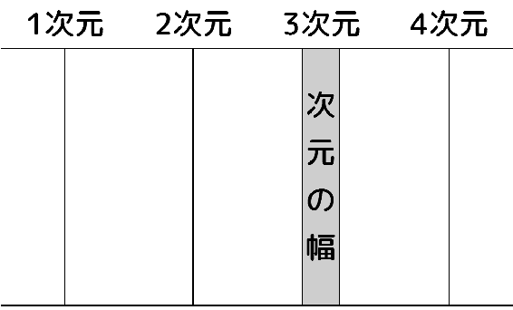
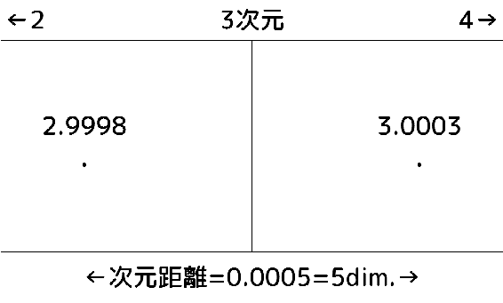
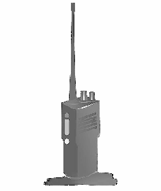

| 違次元の細い糸 in 1985 | |
| sora y.d. | |
| (2015) | |
違次元の細い糸 in 1985
sora y.d.
「マサル、今日は悲惨だったな」
佐々木康夫は楽しくてしかたがないといった様子で言った。
「もうその話はかんべんしてくれよ」
麻布勝は片手で顔を覆った。実際、今日の勝は本当にツイてなかった。
「それにしてもマサルが岡本のこと好きだったなんてな。意外というか何というか...」
「おい、やめてくれって言ってるだろ。いい加減怒るよ」
「悪い悪い、ところで今日部活どうする？」
「こんな気分で行けるか！」
「おっ、うまく利用するなー。もうすぐ総体だから、今休むと恐いぜ」
「そうは言うけど、考えてもみろよ、今日俺が部活に行ったらどんな目で見られるか」
「まあ確かにそれは言える。...じゃ俺が適当に言っといてやるよ」
「悪いな」
「ああ、それじゃな。今日は面白かった、これからも頼む」
康夫は軽く手を振ると体育館の方へ走って消えた。これから卓球部の放課後練である。
「...ったく、ヤスもいい気なもんだよなあ...」
勝がロッカーの前で靴を履き替えていると、後ろに人の気配を感じた。ふと振り向くとそこには岡本百合がいた。
「あ...」
色々な思い、そして今日の事件の記憶がごちゃ混ぜになってしまって、何か言いたいのに言葉が見つからない。
「あの...今日はごめん」
「ううん」
百合の声は意外に明るかった。百合は靴を履き替えながら、
「でも、マサル君の気持ちは受け取れない。うん。そういうこと」
「ほんとに迷惑かけちゃって、申し訳ない気持ちで一杯だよ...」
「いいの、気にしないで」
百合は上履きをロッカーに投げいれた。
「でも、あんまり怒ってないみたいで安心した」
「少しは怒ってるけどね」
そしてスニーカーをつっかけると、
「今度だれかに手紙出すときはあんな失敗しないようにね。じゃあね」
そのまま足早に昇降口から姿を消した。マサルは慌てて靴を履くと外に飛びだしたが、百合の姿はもう見えなかった。
勝はとぼとぼと自転車置き場に向かうと、鍵を外して自分の自転車を引きずりだした。走り出しながら、今日あったことをぼんやりと思いだす。
「俺が彼女のことを好きになったのはいつだったっけ...」
高校に入ったときから、岡本百合は勝にとって気になる存在だった。特に目をひくようなタイプではないのだが、友達感覚で気軽に話せる、今までに会ったことのないタイプの女の子だった。
勝の気持ちがはっきり恋になっていったのは、二学期最初の席替えからだった。運命のいたずらで百合の席は勝の隣となり、休み時間などに時々言葉を交わしているうち、勝は自分の気持ちが彼女に傾いていくのを感じていた。
そして今日、勝はその気持ちを思い切って彼女に打ち明けようとしたのだった。
「それにしてもひどい日だったよな、まったく...」
勝の頭の中で、今日一日の事件が繰り返された。
――この中に、彼女に渡す手紙が入っている。
朝の気持ちのいい光を浴びながら、勝は前かごに放りこんだ鞄に目をやった。自転車をこぐ足も軽快だ。
――ラブレターって、やっぱり時代遅れなのかなあ...。でも、直接話したり電話したりしても、絶対本音なんて言えない。だから俺にはこれしかないんだ。
郵送したりしたら本人の手に渡らないかも知れないし、かといって相手に直接渡すのでは直接話をするのと全然変わらないから、緊張して失敗してしまいそうだ。
だから、机の中にこっそり入れることにしよう。同じ入れるにしても、ロッカーの中はだめだな。何だか汚らしいし、何かの拍子に下に落ちて誰かに見つかったりしたら最悪だからな...。
勝はこんなことを考えながら、一人納得していた。
甲羽高校の自転車置場に自転車を止めて時計を見るとすでに八時半。朝のホームルームが始まるまであと五分しかないが、特に遅い時刻ではない。
入り口に向かって歩いていく間にも、何人もの生徒が自転車を滑らせて入ってくる。
「おい、マサル」
誰かが後ろから肩を叩く。見るとそれは康夫であった。
「おう、ヤス」
「マサル、お前トラック業界が運賃一斉値上げしたの知ってるか？」
「知らないよ。朝から一体何の話？」
「つまり、運賃が上がると、いろいろなものの値段が上がるから困る、ってことだ」
「そう言えば、ヤスの家は確かスーパーやってたんだよな」
「いや、俺はそういう意味で言ってるんじゃなくって、俺が言いたいのは、つまり、トラックが値上げすると、すぐ電車やバスが調子に乗って値上げする、ってことだよ。特に俺の場合、バスの運賃が上がると困る」
「どして？」
「運賃ごまかして小遣い浮かしてるからね...」
「へえっ...親は気が付かないの？」
「自営業やってる親なんて、隣の街のバスの定期代なんて全然知らないから」
康夫は隣の品岡駅から甲羽駅まで電車に乗り、その先バスに乗って甲羽高まで通学している。
「うまくやってんなあ」
「ともかく、その利益が運賃値上げでなくなっちゃうかも知れないんだぜ。大事な資金源なのに、参ってんだよ」
そんな不法収入を上げてるほうが悪い、と心の中では思いながらも、勝は、
「だったらヤスも『値上げ』すれば？」
「けど親が変に怪しんだらまずいよ。大体、足りるはずない小遣いしか渡さない親が悪い」
でも勝は、康夫が自分の数倍の小遣いをもらっているのを知っている。当の勝は、高い買い物があるときはその都度親に頼むというやり方で、定額でもらっている小遣いはわずかである。
「あんだけもらってて足りないとか、贅沢だよ」
「そうかなあ...やっぱマサルって真面目だな」
二人が教室に入った途端チャイムが鳴った。まもなく担任が入ってきた。
「起立、礼」
「おはようございます」
「はい、おはよう」
「着席」
完全に儀式化しているホームルームの時間が始まった。百合の席に目をやる。二学期に入って二回目の席替えがあったせいで、百合の席は隣ではなくずっと向こうになっている。でも百合の顔が小さく見えているだけで勝は胸が踊った。百合と気軽に話せなくなって、自分の気持ちが余計高まったような気がする。鞄を開き、中に封筒が入っているのを確かめながら教科書やノートを取り出す。
勝の鞄はいろいろ詰まっていつもふくらんでいる。他の生徒のようにサブバッグに荷物を入れて学生鞄をつぶすということをしていない。それを馬鹿にされることもあるが、別の鞄を持っているからといってかっこいいとは思わないし、第一いくつも鞄を持つことが面倒に思えるのだ。
勝は最後に封筒を取り出し、ノートにはさんで机の中に入れながら、これを渡す時のことを考えた。
――最も成功率が高くて安全なのは、きっと掃除の時間だろう。教室の後ろに押しやられた机の中に、そっと入れればうまくいくに違いない。午後の授業が始まって教科書を準備するとき、彼女は手紙に気付くだろう。彼女はどうするかな？ 多分、その場では読まずに家に持って帰ってから読んでくれるだろう。彼女は返事を書いてくれるだろうか？ 明日ロッカーを開いたら、封筒、それも真っ白な封筒が俺のロッカーに入っていて...。俺もそれを家に持って帰ってから読もう。きっといい返事が来るはずだ。次の日学校に行ったら、俺の方から話しかける。彼女もにっこり笑って答えてくれて...そうしたらどこか遊びに誘おう。今度の日曜までにそこまで話が進んだらいいけど...
勝の妄想は尽きることがないように思われた。だがその時、
「麻布！ 麻布！」
「おいマサル、呼んでるぞ！」
「えっ!?」
勝は夢からさめたかのように顔を上げた。
「麻布！」
「は、はいっ！」
言いながら急いで起立する。担任の横井がこちらを見ていた。
「何ぼーっとしてたんだ、何度も呼んでるのに」
「いえ、別に」
「何か変なことでも妄想してたんじゃないの？」
生徒が口をはさむと、クラスが笑いに包まれた。この手の冗談に軽口を返すのは苦手だ。何か言ってやりたい気もするが、どうせ言い返されるし、そもそも今回は図星なのだから、赤くなって黙っていた。
「まあいい、麻布、今から職員室に行って、僕の机に数学の問題集が積んであるからそれを取ってきてくれ」
「はい」
そんなことなら何も俺に頼まなくても、と勝は気のない返事をして教室を出た。頭の中は手紙のことで一杯である。今日の自分の行動一つで明日からの学校生活が大きく変わることを思うと、自然と興奮が高まる。職員室から問題集の山を抱えてきた勝は、教室のドアを不器用に開けると目の前の教師用の机にそれを落とすように降ろす。
「ああ、ありがとう。悪いがついでに配ってくれ」
「はいはい」
逆らうつもりなど初めからないが、素振りだけはいやそうに振る舞いながら、勝は再び問題集を抱えて配り始めた。ところが、配っているうちに勝は妙なことに気が付いた。男子生徒の多くがこちらを見て、笑いをこらえているように見えるのである。女子の何人かもそうみえる。何かすっきりしないものを感じながら、勝は席についた。
担任が備忘録を抱えて教室を出ると、とたんに数人の男子生徒が勝を取り囲んだ。
「なあ、何か話しようぜ」
「はあ？」
いつもあまり話さないようなクラスメイトが、一言二言話したと思ったら、途端に散っていった。誰もが笑いをかみ殺しながら。
勝は不思議に思いつつも、次の授業である英語の準備を始めた。そしてふとノートを開いた勝の体が一瞬硬直した。
――手紙がない！
ノートにはさんでおいたはずの手紙がなくなっている。勝は回りに気付かれないように、焦りを顔に出さないようにして、鞄の中、机の中、椅子の下などを血眼になって探した。しかし手紙はどこにもなかった。
――取られた...
勝は心でうめいた。全てが読めてきた。
俺が職員室に行ってる間に、誰かが手紙を見つけたんだ。そういえば封筒をはさんだノートを一番上にしたままだった...手紙はどこだ？ さっきみんなが取り囲んだときにどっかに貼ったに違いない...
勝は振り返り、後ろの壁をなめるように見た。そして左、右、前、上と次々に目を向けた。もう必死である。周囲などかまっていられない。
生徒たちが笑い始めた。手紙はどこにも見つからない。勝は赤くなって頭を抱え、椅子にもたれかかった。
パシャッ！
その時、後ろで紙のしなる音がした。勝は一瞬きょとんとしたが、次の瞬間立ち上がり、手を背中に回した。案の定、紙の感触がある。勝はそれをむしり取ると、くしゃくしゃに丸めてポケットに突っ込んだ。その瞬間、教室が大爆笑に包まれた。
「『百合さん、撲と付き合ってください』！」
「『一度二人で話がしてみたいです』！」
さっき勝を取り囲んだ男子生徒が勝をからかった。百合の方を見ると、こちらと目が合わないように横を向いている。勝の頭の中で、全ての妄想、全ての夢が音を立てて崩れていくようだった。
「...あーあ...」
勝は椅子に腰を落とした。
それから後のことは、勝は思い出したくなかった。ことあるごとにはやしたてられ、黒板に二人の名前を書き出されたり、手紙を渡すはずの掃除の時間には二人の机を隣り合わせにされたりと、しつこくからかわれたのだった。勝は自分のことよりも、黙ってうつむいている百合を見るのがたまらなく辛かった。彼女への気持ちも罪のようにさえ思えた。
「もう諦めるしかないだろうなあ...」
勝はため息をついた。かごの中の鞄を見ると、わくわくして手紙を入れた朝のことが思い出されて辛かった。勝の思いは乱れ、自然と百合のことを思い出す。そして百合も、今日陸上部を休んだのだということに気付いた。
――俺のせいなのかなあ...。でも実際のところ、彼女は俺にどんな気持ちを抱いてるんだろう？少なくとも、俺のこと嫌いじゃないみたいだったけど、でもやっぱりもうだめだろうなあ...。
思いを巡らせながら、ゆっくりとペダルを踏んでいく。そして角を一つ曲がったときである。
「ん...？」
道の先の方を歩いている女性に気がとまった。長い髪をした女子高生のようだった。
誰かが前を歩くのは、もちろん珍しいことではない。にもかかわらずその女性が勝の気を引いたのは、彼女が「不安定」だったからであった。彼女の姿はゆらゆらとかげろうのように揺れ、勝の目には現れたり消えたりしているようにさえ見えた。
「おかしいな、目がどうかなっちゃったんだろうか...」
勝は彼女の姿をもっとしっかり見てみたいという衝動に駆られた。ペダルをこぐ足に力が入る。その女性を追い越した。スピードを落として、後ろを振り返る。
「あれっ？」
勝は目を疑った。そこには誰の姿もなかった。
「ちょっと、これお酒じゃない？」
「いいからいいから、さ、乾杯しよ。みんなグラス上げて」
「カンパーイ！」
「ヒサ、誕生日おめでとう」
「おめでとう」
「どうもありがとう、みんな集まってくれて」
「これでヒサももう大人の仲間入りみたいなもんね」
「もうバイクの免許だって取れるし、相手さえいれば結婚だってできるし」
「ほらほらヒサ、早くグラス空けちゃいなよ。今日はこのワインが空になるまで、みんな帰さないよ！」
「でも、私達まだ未成年だし...」
「固いこと言わないの、今日一日ぐらい。さ、みんなも一緒に飲も！」
「ねえ、その前にプレゼント渡さない？」
「賛成！」
目の前にきれいに包装されたプレゼントがいくつも差し出された。一度に持ち切れなくて、一つ二つ下に落としてしまう。慌てて拾って、まとめて自分の後ろに置く。今日は九月二五日、私の十六歳の誕生日だ。今年入学した清水商で知り合った、サッちゃんこと三木幸子が私のために誕生日パーティを開いてくれたのだ。
「ほら、開けてみてよ」
せかされてプレゼントを開く。中からパウダーケースが出てきた。見ると幸子がウィンクしている。幸子らしいプレゼントかも。でも、これを使う機会は当分ないような気がする。
それにしても、こんなに賑やかなのは初めて。
「誕生日パーティなんて何年ぶりかなあ」
「あれ？ヒサ、中学の時とかやらなかったの？」
さっきからみんなに盛んにワインを勧めている幸子が聞く。
「だって私たちの中学、パーティとか友達同士の旅行とか禁止してたもんね」
まどかが言う。中村まどかとは中学から同級生で、今でも一番気が合う。
「変な学校。私達なんか何かあると十人くらい、男子も呼んでワイワイやってて楽しかったなあ。それでね、中二の時...」
これはメグミ。いかにも女の子、っていう雰囲気は田沢恵っていう名前らしい。
「ね、男の子といえばメグミ、あなた大橋君と付き合ってるってホント？」
自分だけの話に入っていこうとするメグミをうまくさえぎったのは、ユーコこと裕森裕子。頭の回転の速さでは誰もユーコにかなわない。定期試験でも、いつもトップクラス。
「まさかー、あんなの嘘だよ。まったく、誰があんな噂立てたんだろ。許せない」
恵が意地になって否定する。
「大橋君て？」
「ほら、隣のＤ組にいるじゃない」
「ふーん...」
他のクラスに入ったことなんてほとんどないから、男子の名前も知らない。少し悔しい気持ちもなくはないけど、チャンスもないから仕方がない。今のところ情報源は幸子とか祐子だけだから、この機会に聞いておこう。
楽しいパーティも終わった。
プレゼントを紙バッグ一杯にして、自分の家に戻ってきた。ワインはひたすら辞退して最初の一杯だけにしておいたから、まさか親に気付かれることはないと思うけど...。
それにしても、みんな私に悪いことばかり教えようとする。友達が出来たのはいいけど、私なんかとしゃべっても目新しいことなんて話せないから、きっとつまらないんじゃないだろうか。でも、悪いことをしてまでみんなの気を引こうとは思わないし...
ワインも、強引に勧められてつい飲まされてしまったけど、少しもおいしいとは思わなかった。帰る途中で買ったウーロン茶のほうがずっとおいしい。そう言えば、一番飲んでた幸子も顔をしかめて苦そうに飲んでいたけど、どうしてあんなにしてまで飲もうとするんだろう？
玄関のドアを開ける。中から肉や野菜を煮込むいい匂いが立ちこめてくる。靴を脱ぐと、それに吸い寄せられるように台所へと向かう。今日は私の好きなシチュー？ それともカレー？
「お母さん、今夜のおかずは何なの？」
「久子、もうお前も今日から十六なんでしょう？ だったら、もっと女の子らしくしなきゃだめじゃない。帰るなりおかず何、なんて」
「はあい。じゃ、今夜のおかずは何ですか、教えて下さい、お母さん」
ちょっとおどけて言った。まだ酔っているのかもしれない。
「言葉遣いもだけど、そういう質問自体がだめなのよ。...今日はビーフシチュー。誕生日だからお前の好きなものにしようと思ってね」
ユーモアの分からないお母さん。いつものことだけど。
「ありがと、お母さん」
ドアを閉めようとすると、呼び止められた。
「あ、ちょっと」
「何？ また手伝い？」
「手伝いは後でいいから。それよりちょっと聞くけど、来週の日曜日、空いてる？」
「ええっと、十月二日ね。...多分大丈夫だと思うけど、どうして？」
「もし用事があっても、何とか空けておいて欲しいの。理由はそのうち話すから」
「どういうこと？ とりあえず、日曜は空けておくけど」
母が話を遅らせるのは、重要な話をするときの母のくせだったはず。でも全然心当たりがないのが不思議だった。不審に思いつつも、リビングに腰を下ろした。そして、弟の隼人の見ているアニメを見るともなく眺めていた。
母が真相を話したのは金曜日になってからだった。
学校から帰ると、玄関先の廊下の上にデパートの紙袋が寝かせてあった。中を見ると高そうな洋服が一式。大きさや趣味からいって私のものらしい。
「お母さん、いるー？」
「久子？」
「この服だけど...」
言い終わる前に、
「そこの洋服、久子のために買ってきたの。悪いけど今すぐそれを着てお母さんに見せてくれない？」
「...分かった」
普段は服にお金をかけることもなく、いつもカジュアルな服しか買ってくれない母だ。すぐにぴんときた。
――日曜日にどこかに行くんだ。しかもこんないい服を着て...。どこか偉い親戚の家にでも行くんだろうか。
相変わらず心当たりはない。ともかく急いで服を着替えることにした。白のブラウスに黒のジャケットとスカート。みんな、自分が今までに着たことのないような大人びたものばかり。
――こんなの似合うだろうか...。
そう思いながら鏡をのぞき込んだ。着こなしが思いっきりぎこちなくて恥ずかしい。それでも鏡の中の自分は今までの自分ではないようだ。意外と大人っぽく見える自分の姿に戸惑いを覚えた。子供の自分にはこんな服はまだ早すぎると思っていたから。
髪も少し整えてみる。もう一度鏡をのぞいてから、自分の部屋を出る。と、目の前に母の姿があった。
「...どう？」
妙に形ばった声が、まるで他人のもののような気がする。
「見違えるわね。きれいよ、久子」
「ありがと、私も気に入った。...もう脱いでもいいよね。汚れたら困るし」
なぜか急いでいつもの格好に戻りたい思いだった。
「その前にちょっと話しておきたいことがあるんだけど」
「日曜のことでしょ」
「...そう。入ってもいい？」
「でも散らかってるから...」
「隼人に聞かれないほうがいいと思うから。ね」
母の声には、多少、強制の響きがあった。
母を見る。私はクラスでもそんなに背が低いほうじゃない。一五五センチに満たない母を抜いたのは中学二年のころ。だから母を見ると見下ろす格好になる。大人っぽい服を着ている自分と、普通のセーター姿の母が向かい合っていると、まるで立場が逆のような気がした。
「分かった。...どうぞ」
仕方なく母を通す。母には勉強机の椅子に腰かけてもらい、自分はベッドに腰を下ろすことにした。この部屋に母親が入ってくるのはたぶん久しぶりのはず。そのせいか、母の方も心なしかそわそわと落着かない。
「それで、話っていうのは？」
「ぶしつけかも知れないけど、正直に答えてね。久子、いま付き合ってる男の人って、いる？」
「えっ...何、いきなり」
「正直に言って」
「べ、別に。友達くらいだったらいないこともないけど」
また強がりを言ってしまう。本当は男子とまともに口を聞いたことさえない。友達にもそのことをからかわれるし、私自身いくらか劣等感も感じているのに。
「じゃ、好きってほどの男の子はいないのね」
「うん。心配しなくても大丈夫だから」
「いや、そういうことじゃないの。実は今度の日曜日、お前と会ってもらう人だけど、」
「誰かと会うの？ 親戚かなにか？」
「いやあのね...じゃ、もうはっきり言うわ。実は日曜日、ある男の人と会って、二人でお話してほしいの」
「男の人...って？」
「帝殖銀行の副頭取の息子さんで、名前は糸村仁志さんっていうんだけど」
「知らない。で、お話って、何の？」
「だから、何でもいいからいろいろと...」
目を上げて母を見る。母の言葉の意味がさっぱり分からない。
いろいろ考えていると、頭に一つの言葉が浮かんだ。しかし、それはあまりに現実離れしていて、口に出す気にもなれなかった。でも、どうしてもほかにいい答えが浮かばないので、いつも母に見せるおどけた口調で言ってみた。
「それって、もしかしてお見合いだったりして」
「ええ、まあ、一言でいえばそういう事なんだけど」
「えっ...!?」
「...」
「冗談でしょ？」
母はじっとこちらを見つめている。
「冗談だよね？」
もう一度、今度は真剣な顔をして聞いた。まだ母は黙っている。
「本気なの？」
母は真剣な顔になって、そしてうなずいた。その表情は、とても冗談を言っているとは思えない。お母さんは本気でしゃべっている。それが、改めてどうしても信じられない。
「どうして？ どうして私がそんなことしなきゃならないの!?」
「まず、お母さんの話を聞いて」
「何で見合いなんかしなきゃならないのよ。あんなのはもっと大きくなって、どうしても結婚しなきゃ、ってなったときにやるもんじゃないの？ 一体どういうつもり!?」
「でも相手の人は本当にいい人よ。誠実でしっかりしてて...」
「そういう問題じゃないよ！ 私に、もう結婚しろっていうの？ もしさっき聞いたときに、私に好きな人がいたらどうしてたつもり？」
結婚とは、恋愛のゴールかもしれないけど、同時にそこで新しい恋愛をやめることでもあるはず。だとしたら、いきなり見合いをして結婚してしまえば、私は一度も恋愛せずに結婚することになってしまう。私にだって、これから大人になっていく間にきっと恋愛をいくつか重ねていくだろうし、そうしたいと思ってるのに。お母さんはそれさえ私にはできないっていうの？ 私ってやっぱりそんなにつまらない女の子なんだろうか？
「私、そんなの嫌だよ。帝殖銀行だかなんだか知らないけど、全然知らない人と会って話なんかできないよ。だって私なんか...」
精一杯きつい声を出したつもりだったが、どこか涙声になってしまって最後は言葉に詰まってしまった。母にべそをかいた顔を見せたくなくて、くるりと母に背を向けた。
「そんな風に言わないで。実は、先方が少し前にぜひって言ってきたときにはいったん断ったの。私だって時期が早すぎると思ったから。だけど、それでもどうしてもっておっしゃるもんだから、断り切れなくて。相手が相手だし、あまり強引に断るのも失礼だし...。大丈夫、会うだけってことで引き受けてきたから。会って気に入らなかったらそれでおしまい、ね」
「気に入るとか気に入らないとか、そういう問題じゃないと思うんだけど...」
「とりあえずは会うだけでいいから。いま仁志さんの写真、持ってくるね」
母はそそくさと部屋を出ていった。その後ろ姿にため息が出る。じっと部屋のドアを見ていると、すぐに母が写真を持って戻ってきた。
「ほら、こんな人」
白いバックにクリーム色のタキシードを着た青年がいた。「見合い用」というイメージそのままの写真がまるでテレビドラマか何かのようで、怒っている感情とは裏腹に、少しおかしかった。太ってはいないけれど、割と大柄な感じだ。そして、いかにも真面目そうな眼鏡をかけていた。私は眼鏡をかけてる人は好きじゃない。それに一緒にいて疲れそう。写真を見た瞬間、そこまで考えた。
「...もしかしてお母さん、うちからも私のこういう写真、送ったの？」
「いちおう、ね。そうしないと形にならないから」
耳まで赤くなる。
「で、この糸村仁志さんだけど、いま北品大の四年で二一才。頭がよくって、彼のいる学部の中でも特に優秀だっていう評判らしいわ」
「ふうん...でもこれくらいの人なら、大学で恋人くらいできそうなものなのにね」
「そこを特に久子とお付き合いしたい、っておっしゃってるのよ」
「なんだお母さん、結局乗り気なんじゃない」
ひどい話だ。口をとがらせて抗議する。母もこちらを見て思い出したように、
「でも考えてみれば変ねえ、久子はこの人のこと全然知らないの？ だったらどうして先方は久子のこと知ったのかしら」
「知らない。初めて見る。...糸村さんだっけ？ 一体どういうつもりで私なんかに見合いを申し込んできたんだろう。何か別の魂胆があるんじゃないの？」
気持ちが落ち着いて、ようやくいつもの調子がいくらか戻ってきた。結婚相手として私を選びたいといってきた男性。糸村という男に少し興味がわいてきた。気持ちを振っ切るようにベッドから立ち上がった。
「さ、話は分かったから。お母さん、もう部屋から出てって。もう着替えるから。それに、一人で少し考えさせて欲しいし」
「分かったわ。写真は置いておくね」
母はぎこちない笑みを浮かべるとそそくさと部屋を出ていった。
「お見合い、か...」
鏡台の前に立ち、服を脱ぎ始めた。ジャケットをハンガーに掛ける。ブラウスとスカートを脱いで丁寧にたたむと、鏡に映った自分を上から順に眺めた。
ひいき目かも知れないけど、自分だってそれなりにかわいいと思う。スタイルだって、こうやって見ると気がつかない家にずいぶん女の子らしくなってきた。
――もう十六歳なんだもんね...
ため息をついた。ワードローブから普段着を取り出す。
――でも、それだけだよね。面白い話の一つもできないし、自分から何か始めるってこともないし。友達の話に乗せてもらってみんなと付き合ってるだけ。引っ込み思案で臆病だから、高校でも男の子とまともに話したこともないし。そんな自分がなぜ、急にお見合いなんかすることになっちゃったんだろ...
いつもの気楽な服装に戻ると、ベッドに斜めに寝転がった。クリーム色の天井が見える。やっと気分が落ち着いてきた。
いろいろ言ってるけど、お母さんは結局、私が結婚して玉の輿みたいなのに乗っちゃっても、それはそれでいいと思ってるのかも知れないな。糸村っていう人の家は銀行の副頭取っていうくらいだからお金持ちなんだろうな。やっぱり母親って、娘が裕福な家に嫁いで欲しいって思ってるんだろうし、糸村っていう人の家と親戚になるっていうことはお母さんたちのメリットにもなるわけだから、反対する理由って、もしかしたらあまりないのかも...。でも、娘である私自身のことを考えてくれたら、こんな話を引き受けてくるなんてありえないし、やっぱりひどい話だとも思える。
お父さんは知ってるのかな？ まさかお母さんの独断でこんな話を決めるはずないから、やっぱり知っていて、それで私には二人して隠してたのか。お父さんはどう思ってるんだろう。結局、私には結婚なんてまだ考えられないのにね。
――結婚するって、どういうことなんだろう？
その人と、残りの人生をずっと一緒に過ごします、っていう約束。そんな大切な約束を、見合いなんていうきっかけで結んじゃっていいものなのかなあ。それで正しいのかなあ。どっちにしても、私にはまだまだ考えられないことだけど。
男の人と話す、ということ自体には期待のようなものもあった。さっきの写真の男が、目の前で親しそうに話しかけてくる様子が浮かんだ。照れくさいような、不思議な気持ちになった。
――いつも私の臆病なとこをからかってる友達は、私が十六で結婚するかも、って言ったらどんな顔するだろう？
そう思うだけで、ちょっと日頃の仕返しができたような気分になった。
日曜にしてはいつになく早く目が覚めた。まだ目覚ましも鳴っていないのに、勝手に目が覚めてしまったらしい。働く前に用なしになってしまった目覚まし時計のアラームを解除する。
――とうとう見合いの当日になってしまった。
思わず出るため息。部屋から降りてくると、台所で母が朝食を作っていた。
「おはよう久子、いま起こしに行こうと思ってたところだったわ。もうすぐ朝ごはん食べられるからね」
「うん」
眠い目をこすりながらうなずいて、洗面所に向かう。歯を磨きながら、母の様子をぼんやり観察する。母は、どことなくはしゃいでいるように見える。その姿が、気を重くさせた。
――やっぱりお母さん、会うだけなんてほんとは思ってないんじゃないのかな。私の気も知らないで。
昨日の夜は、相手を傷付けないようにどうやって断るか、そればかり考えていた。さすがに頭ごなしに拒絶するのでは相手にも親にも禍根が残るだろうし、かといって瞹昧にごまかして、知らないうちに勝手に話が進んだりしたらたまらない。
『私にはもったいなくて...』
『まだ私は何も分からない年ですから...』
『突然で、ただただとまどって、困ってしまって...』
でも、どう答えても、結局断れば相手の気持ちを害することになってしまうのは分かりきった話だった。母だってがっかりするに違いない。厄介なものを無責任に押し付けられた、そんな気がしてため息ばかりついてしまう。
朝食を済ませて落ち着くと、母は寝室に消えた。見合いは、家から車で二十分くらいの宮古台にある糸村家で、十一時から行われることになっているそうだ。宮古台といえばこの近辺では随一の高級住宅地である。それを聞いただけで、ますます緊張してしまった。とりあえず部屋に戻ったものの、この話を断るせりふを考えるだけで精一杯だった。
やがて母が部屋をノックした。
「そろそろ行くわよ。タクシーも呼んだから。準備は大丈夫？」
「もうそんな時間？」
ぼんやりと窓の外を見ていたところに突然声をかけられ、我に返って時計を見た。確かにもう十時である。慌ててこの前の服に着替え、簡単に髪を整えると部屋を飛び出した。母がリビングで待っていた。
――ずいぶん派手にお化粧している。
また気が重くなった。ふと母の姿を、まるで赤の他人を見るような目で見た。そんな風に母を見たのは、生まれて初めてのような気がした。不思議と嫌悪感のようなものはなく、どちらかというと淋しいような気持ちだった。
――あーあ、とうとう二人っきりになっちゃった...。
親たちが席を外して、糸村と二人だけで残されてしまった。たまらない沈黙が辺りを包んでしまう。ある程度は覚悟していたつもりだったけど、見合いがこんなに緊張するものだとは思ってもみなかった。男女が、最初から交際することを目的に同じ場所に集まっているのだと思うと、親たちの前で会っていることがとても恥ずかしかった。糸村の通っているという北品大の先生とかいうのまで来ていた。そんな中にいると、何か話さなければならないと思えば思うほど何の言葉も思い浮かばない。それを回りの人たちに指摘され、ちょっとした笑いが起こったりしてしまうと、もう真っ赤になってしまって顔を上げることさえ出来なかった。
早く見合いが終わって、誰もいないところで思いっきり深呼吸したい...。さっきからそればかり考えていた。
「...高校生活、楽しいですか？」
糸村がぎこちなく切り出した。こちらもぎこちなく答える。
「...ええ、まあ」
「たしか商業高校でしたよね。大体どんな勉強しているの？ 僕、普通科だったからあんまりよく分からないんだけど」
「大体は普通科と同じだと思うんですけど、簿記とかコンピュータの授業があるのが普通科と違うのかな？」
「面白そうだね。普通科の勉強って、実生活には全然役に立たないけど、そういうのはすぐ役立つもんね」
「でも、そうでもないんですよ。私なんか全然できないほうだし」
どうということもない話が続いていく。
時間がたつにつれ、心に不思議な変化が起こりつつあるのを感じた。さっきの暗い気持ちが徐々に晴れて、少しずつすっきりした気分になっていく。糸村との会話に魅かれているのが分かった。嫌いなはずの眼鏡も、もう気にならなくなっていた。
「糸村さんは家から大学に通ってるんですか？」
「うん、車で三十分もかからないからね。そうだ、よかったら今度乗ってみない？ きっと気に入ってくれると思うよ」
「何だかそういうのって憧れます」
「え？」
「何ていうのかな、お父さん以外のっていうか、あんまり年の離れていない人に車に乗せてもらうのって」
「なるほど。そういえば永島さんの年じゃまだ車の免許取れないから、友達とドライブに行くとかって、ないんだよね。...じゃ、ぜひ乗ってみてよ。今の時期、山の中なんか走るととても気持ちいいんだ。景色もいいし、...」
「ええ、でも...」
「だめかなあ」
「私、何だかよく分からないんです。私が今、お見合いしてるってことが。私まだ十六だし、結婚とかよく分からないし、いま自分がどういう立場にあって、どういう返事をしたらいいのか、全然分からなくて...」
「ああ、なるほど...そのことは気にしないで下さい。こんな形になっちゃったけど、永島さんを拘束するつもりは全然ないつもりだから。先のことはとりあえずおいておいて、しばらく僕と付き合ってもらえないかな、ということなんです。しばらく会ってみて、気に入ってもらえなければこの話はいつでもなかったことにできるし、後々迷惑をかけるようなことは絶対にしないつもりだから。そこは、約束します。」
「友達として、みたいなのでも...？」
「そう、それで十分だよ。まずは友達として、ゆっくりやっていければ」
「...」
こんな風に話していて楽しい男の人だったら、かたくなに断ったりしなくてもいいんじゃないだろうか。友達だったら別に困ることはないし、そうすればお母さんをがっかりさせなくてもすむだろうし...。こんな出会いも、あってもいいのかもしれない。
そんな、会う前には絶対に考えないだろうと思った考えが心の中を支配しつつあった。
「永島さん。よかったら、日を改めて今度、ドライブに一緒に行ってもらえませんか？」
糸村の問いに、
「そういうことだったら...」
目を伏せ、ほとんど聞こえないような声でそう言って小さくうなずいた。とても恥ずかしい。糸村の顔が嬉しそうに紅潮するのが分かった。
「ありがとう。本当によかった。実は永島さんに断られちゃうんじゃないかとずっと心配だったんだけど...。少し庭に出てみない？ 足、しびれちゃった」
おおげさなジェスチャーをしながら足を痛がる糸村を見て、思わず微笑んだ。
玄関を出て、まぶしそうに空を見上げる。今日は快晴だ。複雑な気持ちで高校に向かう。
昨日の見合いの一こま一こまが頭から離れなかった。自分の人見知りの激しさは自分が一番よく知っている。そんな自分が、初対面の、しかも男の人とあんな風に親しく話せたこと、素直な気持ちになれたことが信じられなかった。そして、形だけにせよ、見合いを承諾してしまったということも。何だか自分がまったく違う人間になったような気持ちになる。
――友達には黙っておくことにしよう。きっと話に尾ひれがついて、自分が傷ついたり誰かを傷つけたりするだろうから。でもいつかはばれちゃうだろうなあ...。ばれたらどうみんなに説明したらいいんだろうか。『でも今はただの友達だし』、とか、それとももっとはっきり説明しちゃったほうが誤解されないかな...。
ふと、見合いをした事実が発覚するのを楽しみにしているような気がして、はっとした。
私、何考えてるんだろう...。
学校で友達の中に入っていくと、いつもの自分に戻れたような気がした。かえって、いつもより明るいくらいだった。
ただ、部活は今日だけは休みたい気分だった。普段からそれほど熱心なほうではない。友達のまどかに誘われて、なかば無理やり入らされたようなものだ。『少し体調がすぐれない』とまどかに伝言をお願いして、授業が終わるとすぐ帰途についた。総体も近いからあとで怒られるかもしれない。
一人になると、さすがに心が乱れた。
小さくうなずく私。照れくさそうに笑う糸村さん。言葉のイントネーションまでありありと、昨日のことが頭の中で繰り返し繰り返し響いていた。
と、後ろから自転車の音が聞こえてきた。それだけなら何でもないことだが、その音がとぎれとぎれにだんだん近づいてくるのが気になった。
――変だな...。
自転車が追い抜いていくのを心なしか待ちながら歩く。やがて自分のすぐ横を自転車が通り過ぎた。はずだった。ところがその瞬間、自転車の音も気配も消えてしまった。
慌てて辺りを見回した。誰の姿もみえなかった。もちろん、自転車も。
「空耳...？」
でもどうしても、自転車に乗った制服の男の子を、確かに見たような気がしてならなかった。
「おいマサル、水飲みに行かないか？」
「ああヤスか。ちょっと待ってくれ、いまうちの柴田さんが梁山高の福岡とやってるから、あれが終わってからにしようぜ」
「福岡って？」
「知らない？ 全国大会まで行ったことのある、梁山高のキャプテン」
「ふうん、そんなすごい奴がいるのか。で、柴田さんはどうなんだ？」
「やっぱり苦戦してる。ほら見ろよ」
得点版には一二対三とある。見る間に一二が一三になった。
ラブレター騒ぎがあってから四日後の十月七日、今日は秋季高校総体の初日だ。勝たちの所属する卓球部は、梁山高の体育館に来て試合を行なっている。一年生の個人試合は最初に行なわれたが、二人とも一回戦で敗退してしまった。二人とも普段の練習にあまり熱心ではないから、名門の梁山高を初めとする強豪にあっさりひねられてしまったわけである。
康夫に至っては、自分の試合が終わるとさっさと外の陸上競技を見に行ってしまっていた。勝も、陸上部の百合の姿を見に行きたい気持ちはあったが、どうしても気乗りしなくて、そのまま卓球の試合を見ていたのである。
二人が見ていた試合は、一五対三で福岡の勝利に終わった。卓球というのはあまり憧れの対象になるスポーツではないものの、それでも黄色い歓声が福岡の勝利をたたえている。
「あーあ、我らがキャプテンも形なしだなあ。さ、マサル、行こうぜ」
「でも三点取っただけでも立派だよ」
水飲み場は体育館の建物の裏側にある。だから体育館の奥のさびついたドアを開ければすぐに行くことができる。『外に出るときは靴をはき替えること』という色のあせ切った貼り紙が妙におかしい。誰も貼り紙を守っていないので、勝たちもそのドアを開けてそのまま外に出た。
水飲み場には、運動場から来た生徒が多く集まっていた。ちょうど体育館の影になって涼しいためか、かなりの生徒が辺りでたむろしている。いくら十月とはいえ、今日のような快晴で、しかも日差しの強い今頃の時間は、太陽に当たっているよりも影で涼んでいるほうがずっと気持ちいい。
水飲みの列に加わって順番待ちをしていた勝は、明るい声が近づいてくるのを耳にしてふと後ろを振り返った。体育館の壁に沿って数人の女子が歩いてくるのだろう。二人のいる位置と壁との関係で、声は聞こえても姿は見えない。やがて最後の角を曲がって彼女たちの姿が見えてきた。
「？ ...またかよ」
その瞬間、勝はまた目がおかしくなったのかと思った。集団の中ほどにいた女の子がふっと消えたように見えたのである。勝は瞬きを何度もやってみた。
――どうもおかしい、確かに消えた気がする。あの日に見たのと同じだ...
「おいマサル、いつまで見とれてんだ、後ろがつかえてるぜ」
「え？ あ、ああ」
康夫の声に我に返った勝は、水を飲むよりも先に顔を洗った。
「俺、何だかおかしくなったみたいなんだ」
体育館の壁にもたれ、水飲み場を眺めながら勝がつぶやいた。
「どういうこと？」
「最近、見えていたものが突然消えちゃうんだよ」
「目が見えなくなるってこと？」
「いや、人が一人だけ見えなくなるんだ。さっきぼーっとしてたのもそのせいなんだけど」
「見えなくなるって、どういうこと？」
「さっき水飲み場のほうに歩いてきた女の子の中の一人が、ふっと消えてしまったような気がしたんだ」
「まさか。ということは、今もその女の子が見えてないってこと？」
「そうなるのかなあ。そうかもしれない」
「本当かよ。あそこにいるのがさっきの集団だよな。じゃ聞くけどさ、あそこに何人見える？」
「ええっと、一、二、三、...六人」
「どれどれ、...あれ、お前七人じゃないのか？」
「...いや、六人だ」
「そんな馬鹿な！ 冗談言ってんじゃないの？」
「そんなにいうなら番号かなにか、順番に言ってみてくれよ」
「ああ。ゼッケン二七番だろ、六五番だろ、三三番、五九番、」
「五九番なんて見えないぞ」
「ほんとに？ 三三番の後ろの、髪を束ねてる女の子だぜ」
「ああ。そんな子は見えない」
「ホントかよ！ ほんとなら残念な奴だな、結構かわいいのに。面食いの反対だな」
そう言って笑う康夫に、
「俺は真面目なんだぜ」
勝はすこしとがめるように言う。
「分かった分かった、今度眼科にでも見てもらえよ。...でもそんな病気、聞いたことないな。精神的なもんじゃないのか？ 岡本以外は見えない病気とか」
「いい加減にしろ！」
「悪い悪い、でもマジで医者には行ったほうがいいと思うぜ」
「ヤス、お前いい医者知ってるか？」
「親父に聞いてみるよ。親父、スーパーやってて顔が広いから多分なんか知ってると思うし」
「頼むよ、冗談じゃなくてさ。俺もこんなわけのわかんない病気、早く治したいし」
「まかせなさい。でも、そういう不思議な経験みたいなの、前にもあったわけ？」
「今回で二回目。しかも妙なんだけど、もしかするとこの前消えたのも今回と同じ子じゃないか、って気がして仕方ないんだ。『髪をたばねてる』って言ったろ？ この前の女の子の髪が長かったのを覚えてるし、雰囲気が似ていたような気もしたし...」
「なるほど、面白い話だなあ...じゃ、あの子の名前ぐらい探っといて損はないな」
そういうと康夫はその場を離れ、女子集団の後ろに回った。そして嬉しそうに戻ってくると収集した情報を勝の耳にささやいた。
「あれは清水商一年の永島って子だ。永久の永に島の島だな」
「清水商だって？ うちの高校とかなり近いじゃないか。じゃあやっぱり俺が見たのはきっとその子だったんだよ。永島っていうのか...」
「まあ、それだけじゃ完全には決められないけど、ますます面白い話だな。ま、そろそろもう中に入らないか？ それより岡本でも見に行くか？ さっき短距離走ってたぜ」
「その前にもう一度目ェ洗ってく」
「そんなに心配すんなよ」
二人が、今度は靴をきちんと履き替えてグラウンドに出ると、中距離のスタート地点に引導されていく集団の中に百合の姿を見つけた。
「やっぱり縁があるんだな。そこに座って見てようぜ」
康夫にいわれるまま、勝は近くのベンチに座った。中距離の選手が順番にスタートしていく。どうやら距離は八〇〇メートルらしい。しかし、勝は違うことを考えていた。
――気のせいかと思ってたけど、本当に女の子が見えなくなってたんだ。しかも、みんなに見えないんじゃなくて、俺だけに見えないみたいだ。ヤスには見えて俺には見えない。俺の目、おかしくなっちゃったんだろうか...。もしかしたら、今こうやって見えている選手の中にも、俺にだけ見えない人間がいるのかも...
「ほら、岡本が走るぜ」
見ると、百合がスタートラインに並んでいた。いっせいに走り出す。勝は、百合の走る姿に「永島という女の子」を空想してみた。
と、急に立ち上がった。
「そうだ！」
「ど、どうした？」
康夫が驚いて振り向く。
「ああやってさ、競技に出てるところを見たら、永島って子を見れるじゃないか」
「何だ、まだそんなこと考えてたのか？ だって、さっき見えなかったのに、ここだったら見えるなんてことはないんじゃないの？」
「そう言わずにさ、ちょっと調べに行こうよ」
その勢いに押されて、康夫も勝について事務のテントに向かった。
「すいません、選手名簿、ちょっと見せてください」
しかし、清水商の永島という生徒の出場種目はすべて終わっていた。残されている記録を見ると、なかなか高い成績である。勝は残念がったが、永島という女の子への興味はますます高まっていった。
「下の名前が分からないのが悔しいな」
そこに、八〇〇メートルを走り終えた百合がやって来た。
「あれっ、佐々木君にマサル君じゃない。どうしたのこんなところで」
「マサルがさ、何かわけの分かんないこと言うから、付き合ってるんだよ。なんか、見えない女の子がいるとか...」
勝はあわてて康夫の口をふさいだ。そのまま百合に背を向かせる。
「なんだよ、いきなり...！」
康夫が怒ったように言う。勝は康夫の耳元でささやく。
「とりあえず、彼女には黙っててくれよ。また誤解を招くから」
「何だよそれ」
康夫が口をとがらす。
「ねえ、二人で何こそこそやってんの？ 何かまた悪いことたくらんでるんでしょ」
「あ、あのさあ、俺たち卓球部のほうの試合があるから。それじゃね」
そういうと、未練たっぷりの康夫を引きずるようにしてテントを離れた。振り返ると、あきれたようにこちらを見ていた百合が手を振ってくれた。
次の日、勝が教室に入ると、先に来ていた康夫がメモを持って近づいてきた。
「眼科より、もっと役に立ちそうな人、教えてもらってきたぜ」
「っていうと、どんな人？」
「なんか、いろんな事を研究してる人だって」
「へえ」
「それとなく親父に聞いてみたら、『超常現象とか不思議なことで知りたいことがあったら、その人に聞くといろいろ教えてくれる』って言ってたから、眼科に行くより、とりあえずそっちに行ったほうがいいんじゃないかと思ってね。連絡先聞いてきたんだけど、何か割と有名な科学者らしい」
「何を研究してる人なんだ？」
「それが実はよく分かんないんだけど。親父もよく知らなくてさあ。とりあえず何でも知ってるすごい人って話だけど」
「でもそんな人が、俺みたいな高校生の話を聞いてくれるのかなあ」
「だめもとで行ってみようぜ。親父も気のいい人だって言ってたから、大丈夫だよ。西甲羽の外れのでっかい森に入ったところに研究所があるそうだから、ここから自転車で二十分くらいでいけるし」
「分かった。場所は分かってるんだろう？」
「ああ、大体な。...今日か？」
「だめか？」
「いや。じゃ後ろに乗せてくれよ」
「ＯＫ」
「部活はケリだな」
「そうだな」
「理由は？」
「『目の病気で医者へ行く』」
「俺はまた無断か。まあ総体も終わったことだし、大丈夫だろう」
西甲羽は、学校のある甲羽の隣街で、森というのはその街の中心部から少し離れたところにある雑木林である。その森に囲まれるようにして、博士の研究所はあった。『坂本ラボ』という小さな看板と、『坂本治』という表札がかかっている。
「小さいところだな」
「こんなもんじゃないの」
康夫はインターホンを押した。しばらくして、「どなたですか？」という男性の声がインターホンから聞こえた。
「甲羽高校の佐々木と麻布っていいます。今日は少し相談したいことがあって来たんですが」
「仕事の依頼でしょうか？」
「仕事、ではないんですが。実は、私の友達が不思議な経験をしたということで、こちらで相談したらいいんじゃないかって勧められて」
「誰に紹介されたんですか？」
「あ、私の父親です。スーパーササキっていうお店を経営してるんですけど」
「なるほど...分かりました、じゃあどうぞ」
がちゃりと音がして鍵が外れたようだ。二人は白い扉を開いた。
「左側のドアを開けて入ってきてください」
少し遠くから声が聞こえる。言われたとおりドアを開くと、かなり広い部屋に出た。二十畳ほどもあるだろうか。壁はいろいろな器具を入れた棚や本棚などでびっしりと覆われ、部屋の中央にも大きめの装置がいくつか置いてある。部屋の奥には書類がうず高く積み上げられた机があり、その書類に埋もれるようにして男が座っていた。康夫は軽くお辞儀をした。
「こんにちは。坂本さん...ですよね」
「ええ、そうです。こんにちは、はじめまして」
博士は機嫌がよさそうである。年は四〇代なかばといったところか。
「はじめまして。佐々木康夫といいます。こちらは友達の麻布マサルです」
「どうも、こんにちは」
勝は少し緊張していった。
「ああ、こちらこそ。じゃ、こっちの応接室で話を聞くことにしよう。さ、どうぞ」
二人が通された応接室は、こぎれいで趣味のいいものだった。そこから来る安心感のおかげで、勝の中にあった不安は少しやわらいだ。
「さて、じゃあ、話というのを聞かせてもらおうかな」
「ええ、実はこっちのマサルが、何だかおかしな目の病気にかかっちゃったっていうんです。目の病気っていうのかな、不思議な見え方の現象って言ったほうがいいのかな？ それで、父に聞いたら、そういう不思議な話はここで聞いたら何か分かるんじゃないかって、そう言われたんで連れてきたんです」
「そういえば、さっき君のお父さんは...」
「品岡のスーパーササキっていうスーパーをやってます」
「ときどき、利用させてもらってるよ。ご主人とは、たまたまそういう話で盛り上がったことがあって、それからときどきそういう話をしたりすることがあるから、そういう風にいわれても仕方がないかもねえ」
坂本の目がほころんだ。
「とても不思議な話なので、興味を持ってもらえると思います」
「ただ、断っておくけど、原因を説明してくれと言われても困る。どんな話にしろ、私に分からない可能性の方がはるかに大きいわけだからね。本当に目の病気だったら目医者さんに行きなさい」
「はい、それは分かってます。それでもぜひ、話だけでも聞いてください」
康夫がさらりと答える。
「分かった。...じゃ、マサル君だっけ、君の話を聞こうじゃないか。何がいつどこでどんな風に起こったのか、詳しく話してくれないか。目がどうかしたんだって？」
「は、はい。それが、自分でもわけが分からないんだけど、目の前に人がいるのに、まったく見えないってことがあって。ここにいるヤスには見えてるんだけど、俺には見えない、それもいつも同じ人が見えないっていう」
「どういうこと？ ある特定の人が見えないっていうの？」
「うん、そう」
「見えない、ということがはっきり分かっているわけだ」
坂本は少し考えた後、急ににやりとして勝をのぞき込んだ。
「君たち、もしかして私をからかいに来たってことはない？ 漠然とした不思議な話のはずなのに、ちょっと話が断定的すぎて、正直、作り話みたいに感じてしまうだが」
「嘘じゃないんだ。...信じてくださいよ」
「そうですね、マサルがこんな風にはっきり言えるのは、僕が現場を見たからです。僕も信じられないんですけど、でも実際、僕には間違いなく見えているのに、マサルにはどうしても見えない人がいる、っていうことがあって。だから、どうも本当みたいで...」
「なるほど。失礼を言ったかもしれないな。でも見えないのならどうしてそこに人がいるってマサル君には分かったんだ？」
「それが、最初から見えないんじゃなくて、一瞬見えてから見えなくなるから...。見えたり見えなかったりして、結局見えなくなってしまうっていうか、ちらっと見えたと思ったらもう見えないとか、そんな感じで。それが一回だったら幻だと思って忘れちゃったかもしれないけど、二回も連続して見るし、ヤスにはずっと見えてるって言うし、やっぱり幻じゃないんだって...」
「ううん、なるほど...」
坂本は少し考え込んでいた。やがて顔を上げたときには、それまでとは明らかに違う、好奇心旺盛な科学者の顔になっていた。
「よし、君たちを信じることにして、話を聞かせてもらおう。マサル君、今度はその幻みたいなのを見たときの状況を、一回目と二回目と、詳しく話してくれ。できるだけ詳しく、具体的にお願いするよ」
「分かった」
勝も真剣な気持ちになった。この一週間ほどの間にあった不思議な経験を思い出しながら、何ごとも話しもらさないように一生懸命説明した。
坂本も熱心に耳を傾けた。一回目の様子などについて知らない部分も多かった康夫も、坂本と一緒に熱心に聞いていた。勝は話がうまいほうではない。最後まで話すのに三十分近くかかった。
話が終わると、坂本は腕を組んで目を閉じた。
――こんな嘘みたいな俺の話、本当に信じてもらえたんだろうか？
勝は坂本を見ていた。その坂本が顔を上げる。
「なるほど。大変興味深い話だ。というのも、たまたま、私の研究分野でちょっと思い当たる節があるからね。もしかすると、君たちの力になれるかもしれない」
「本当!?」
勝と康夫の声が重なった。勝が体を乗り出す。
「原因が分かるっていうの？」
「ちょっと専門的になるけど、浮動次元論、というのがあるんだ」
「フドウジ...？ 何それ...？」
「これはごく最近研究されはじめた理論なのだが、私も少々首を突っ込んでいてね。この理論から、幻覚や幻聴などの超自然現象が科学的に説明できるかもしれない、と言われているんだよ」
「そうすると、俺の場合もそれで説明できるってわけなの？」
「その前に、この理論を簡単に説明しておかないとだめだろうな」
言いながら坂本は手元にあった英文の論文か何かのコピーを手にとり、裏返して簡単な図を描きはじめた。

「まず、君たちはいま三次元の世界に生きている。このことは知っているね」
「ええ」
勝が答える前に康夫が答えた。こんな話になると康夫はがぜん興味を示してくる。康夫は坂本の図を熱心に見つめている。もちろん勝も見ていることは見ているのだが、残念ながら図の意味がよく分からない。
「じゃ二次元とか四次元って言葉も知っているね」
「ええ、二次元は平面のことですよね、で、四次元っていうと空間プラス時間で...」
「とりあえずそういうことは分からなくてもいいわけだが、とにかく、いままでの常識では、次元といえば一、二、三...と全て整数、より正確にいえば自然数のものしかないということになっていた。そもそもこれは定義だから、そう思われていたというより、そういう風に決められていた、というほうが正しいだろうが」
「違うんですか？」
まさにこうなってくると康夫の独壇場である。勝はソファにもたれて二人の話を横から見ていることしかできない。
「そう、違うんだ。最近の研究では、次元に幅があると考えなければ、あるいはそんな風に次元の概念を拡張しないと説明できない事実が次々と明らかになってきて、この世界には、わずかにずれた次元の空間が無数に重なって存在しているらしい、ということが分かってきた。そう考えないと、細かい計算が合わない物理法則がいくつか見つかってきているんだ。
と、いうことはつまり、それぞれの人が生きている次元も微妙に違うというわけだ。ある人は三．〇〇〇三次元の世界に生きているかと思えば、またある人は二．九九九八次元の人であったりするというわけだ。今までの調べでは、下は二．九九八九次元から、上は三．〇〇一二次元の人までが見つかっている。ここまでの話は分かるかな？」
「はい」
「マサル君はどうだ？」
「まあ、大体は」
「で、それが今回のこととどういう関係があるんですか？」
康夫がじれったそうに聞く。
「ここからが君たちにとって大事なところだと思う。ああ、その前に次元距離について話しておかないといけないな。二人の人の生きている次元の差、例えば三．〇〇〇三次元の人と二．九九九八次元の人の場合、引き算して〇．〇〇〇五が次元距離というわけだ。ただ、このままでは読みづらいから、これを一万倍して五ディムと呼んでいる」
坂本はそういいながら先の図の下にもう一つの図を加えた。

「さて、ここからが本題に入るわけだが、ある大学で、遠距離からひとの表情を識別するような実験を行なったところ、この次元距離が大きくなるほど、細かい表情の判別が難しくなるという意外な事実が明らかになった。分かるかな？」
「なるほど。...マサルはどうだ？」
「そうだな、理屈はよく分からないけど、要するに次元が違うほど見えにくくなるということだよね、坂本さん。...ということは俺の場合は...」
「この理論で説明するとすれば、君とその女の子の次元距離が異常に大きい、という可能性が考えられるんじゃないかな。さっきも言ったと思うが、今までのデータでは二十三ディムが最大だから、それ以上の次元距離があった場合、まったく見えなくなるという可能性も十分考えられる」
「でも俺の場合、ふっと見えたりもするんですよ」
「それはもしかすると、次元距離が伸びたり縮んだりするからかも知れない。そこまでは研究不足だから分からないが、君の見ているのが幽霊などではないとしたら、次元距離の問題だという可能性は高いんじゃないかな」
「幽霊だなんて、それを説明するのがその理論なんじゃないんですか？」
康夫が追求する。坂本は思い出したように苦笑した。
「ハハハ、確かにそのとおりだ。ともかく、マサル君の場合、一番考えられるのは、二人の次元距離が、見えるか見えないかの境目であるということだ」
「なるほど...なるほど...」
康夫は一人で大きくうなずきながら、何か思いを巡らしていた。勝の方を振り向く。
「マサル、すごいじゃないか。すごいことだよ」
「俺が？ すごいって、何が...？」
「だって坂本さん、こんなのは世界でも例がないんでしょ？」
「私の推論が正しければ、恐らくそういうことになる」
「ほらみろ、やっぱりすごいじゃないか」
「そうかなあ...」
勝には実感がわかなかった。それよりも、自分の見たものが単なる錯覚ではないらしいという事が分かって、胸につかえていたものが通ったような安心を感じた。そして勝の心のなかで、永島という女子生徒の存在がにわかに現実味を帯びてきた。
「ところで...」
坂本は勝の方に身を乗り出した。
「こうやって知り合えたのも何かの縁だ。悪いんだが、もし君さえよければこれから定期的にここに来てもらえないだろうか」
「えっ？」
「私も浮動次元論は研究中で、まだまだ君に十分な説明ができない。それに、これから新しい事実も分かってくるだろう。時々来てくれれば、それを君に伝えることもできる。ま、正直なことをいえば、君は特異な次元を持っている可能性があるから、私にとって非常に貴重な研究材料を提供してもらえそうだ、というのが一番の理由なのだが。君が来てくれれば、私との次元距離の実験なんかもできる。一人では次元距離も何もないからな」
「あれ、坂本さんっておひとりなんですか？」
康夫がふと尋ねた。
「あ、ああ、そうだが。なぜだね？」
坂本は不意を突かれた様子だ。
「だって、さっき僕たちが来たとき、坂本さんがいないのにドアが開きましたが...」
坂本は照れくさそうに笑った。
「ああ、あれは自動ロックで、外れるほうもここから操作できるんだよ。...こういう仕事をやってるからね、気がついたらひとりのままでここまできてしまった」
坂本は言ってから、しゃべり過ぎたのを反省するように作り笑いをした。そして真剣な面持ちに戻してから、勝の肩に手をかける。
「ところで今の話だが、同意してもらえるだろうか？ もちろん、ただでとは言わない。一種のアルバイトとして、少しだけど小遣いをあげよう。どうだろう？」
勝は坂本の理論はあまり理解できなかった。しかし、不思議なことに対する興味は康夫に負けないくらい強かった。何より、小遣いの少ない勝としては、少しでもお金の入りどころができるのは嬉しいことである。アルバイトをするのには学校の許可がいることになっているが、そんなのを守ってる生徒はいない。それにアルバイトといっても、これほど学生らしい真面目なバイトも珍しいくらいだ。
「分かった。やります」
「あ、あの、僕も使ってください。すごくその理論に興味を持ったものですから」
康夫が身を乗り出して言った。さっきから自分の方に話が回ってこないので焦っていた様子である。
「でもお金はあげられないかもしれないけど、それでもいいかい？」
「...それは僕の次元が普通だからですか？」
康夫の声にはちょっと不満の色があった。
「まあ、平たく言えばそういうことになるかな」
「そうですか。はい、仕方ないですよね。マサルは世界でも珍しい次元の持ち主なのに、僕は普通の次元でしょうからね。...でも、僕はその理論をもっとよく知りたいので、やっぱりたまに遊びに来ます。マサルと一緒にならいいですよね、お願いします」
坂本は嬉しそうに笑った。
「そうか。君も科学者の卵だね。だったら君たちの都合のいい日に毎週一回くらい来てもらうことにしようか。来る前に電話してくれたら準備して待っているから」
「はい、分かりました」
二人は名前や住所や連絡先などを坂本に教えた。そしてしばらく話したあと、何度も礼を言って研究所を出た。振り返ると夕日が森にかかって美しかった。
勝は康夫を西甲羽の駅まで乗せていってやることにした。
「優しい人でよかったな、マサル」
「でもちょっと俺には話が難しかったぜ。助手みたいなことを頼まれちゃったけど、俺なんかで出来るんだろうか」
「心配すんな、俺が付いてるよ。でも、あれでも一生懸命に優しく説明してたんだと思うぜ。もし、もっといい加減な人だったら、専門用語ばっかり使って全然訳の分かんない話をしたと思うし。それにしても問題の方は解決してよかったな。バイト先も見つかったわけだし、俺のこと、感謝してもらいたいくらいだな」
「理屈がついただけで解決はしてないんじゃないか？」
「っていうと、お前はどうしたいわけ？」
「例の永島って子がちゃんと見えるようになったら最高だな」
「おいおい、もしかして好きになったのか？ 見えもしない相手を」
「いや、俺は何事もとことん終わらせないと気がすまないたちだから」
「初めて聞いたなあ。俺はけっこういい加減だと思ってたけど」
「それに、俺にだけ見えない奴がいるなんて、それだけで腹が立つ」
「それが本音か？」
「そうかも知れない」
そう言いつつも、勝は自分が言い訳をしているだけのような気になっていた。
――俺は永島っていう女の子の事を好きになってしまうんだろうか？
まさか。
俺は今でも岡本さんが好きだし、俺はその子と話をするどころか顔を見たこともないっていうのに。そんな女の子を好きになるはずがない...
でも、やはり永島という名前が不思議なくらい気になった。
――永島さん。下の名前はなんていうんだろう。
ふと気が付くとそんな事を考えている自分が、ばかばかしく思えた。勝は自分の心をつかめない自分を感じていた。
見合いから十日あまりが過ぎた。
最近、悩んでいることがある。幻を見るようになってしまったことだ。いろいろあって疲れているのかもしれない。
初めは見合いの次の日だった。その次は総体の日。それからは数えきれないほど。いつも同い年くらいの男の子が視界の隅にふっと現れて、そちらに目をやると消えてしまう。現れる男の子がいつも同じだってことは間違いないけど、それならどんな顔かといわれると、どうもはっきりしない。でも、確信を持って言えることは、その男の子が自分の知っている誰とも違うということ、それでいてどこかで会ったことがあるような気がすること...。
授業中、ちょっと退屈なときは、その幻に出てくる男の子を思い出してノートの隅にスケッチしていると、あっという間に時間が過ぎる。そして、だんだんとそのスケッチもはっきりした像を結ぶようになってきた...やっぱり顔だけははっきりしなかったけれども。
幻を見るのは決して気持ちのいいものではないけれど、この不思議な現象のことをもっと知りたくて、そして幻に出てくる男の子のことをもっと知りたくて、学校の帰りにはいつも甲羽市の図書館に立ち寄って、超能力や超常現象などについての本を読むようになった。
――幻だと思っていることがやがて現実になることは珍しくない。
ある本に出ていたこの一節に嬉しくなった。もし幻の少年が実在の人物ならば会ってみたいと思った。
一五日は、糸村との初めてのデートだった。彼の運転する自動車の助手席で、ぽつりと幻の話をした。
「気にすることないんじゃないか？」
それが糸村の答えだった。なぜか少し不機嫌になったみたい。
「どうかしましたか？」
「せっかく僕たち二人のデートなんだから、ほかの男の子の話はどうかと思ってね」
「妬いてたりして」
言ってから自分で驚いた。年上の男性相手に、そんな軽口が自分の口から出るなんて。
「いや、そんなことないけどね。...とにかく、気にしないほうがいいよ」
やっぱりこの話が面白くないみたい。ただの幻なのに。結構嫉妬するタイプなのかもしれない。期待外れのような気もしたし、親しみがわいたような気もした。
「気になるってほどじゃないんですけど、一日に二度も三度も見えたりするから...」
「だったら、一度医者に診てもらえば？ 医者が大丈夫って言ったら安心できるんじゃない？」
「ううん、...そうね。その方がいいかもしれない」
「幻で見えるっていうのは、君が知ってる男なの？」
「いえ、それが全然知らない人みたいで」
「どういう時に見えるのかな？ 疲れているときとか」
「そう言われればそうかも知れないけど、時間とかは特に決まってないんです。朝起きてから夜寝るまで、いつでも。...暗いほうを見てるとふっと現れたりとか...」
「うーん、やっぱり医者に任せちゃうに限るよ。そんな暗い話はやめて楽しくいこうよ、せっかくの初めてのドライブなんだし」
「うん、そうする」
「僕は昨日からわくわくしちゃってね。こんな気持ちで眠ったのは小学校のとき以来だったんだから」
「私も緊張してました、昨日は」
「そう言われると嬉しいよ」
「糸村さん、今までに何回くらいこうやってデートしたことあるんですか？」
「えっ？」
糸村は本気で驚いたようだ。少し考えてから、
「初めてだって言ったら、どうする？」
「信じないですね」
「...いや、でも、僕の気持ちとしては、これが初めてだと思ってるんだ」
糸村の顔に少し陰ができたような気がした。
「悪いこと、聞いてしまいましたか？」
「いや、そんな事はないけど。...そうだ、ひとつお願いしていいかな？」
「ええ」
「できれば僕のこと、仁志って呼んでくれないかな」
それから、あわてて付け加えた。
「...糸村っていうと、どうしても親父を思い出しちゃうから」
頭の中で練習してみた。仁志さん。ちょっと赤くなったのが自分でも分かる。仁志の顔を見た。
「『仁志さん』...？」
「ありがとう」
やがて自動車は森に囲まれた山道へと入っていった。
「あそこに、感じのいい喫茶店があるんだ。ちょっと休憩しよう」
「はい」
車を降り、コテージ風の喫茶店のドアを開ける。その瞬間、危うく声をあげそうになった。
「!!」
またあの少年が見えたのだ。外の光に慣れた目には、店の中はあまりにも暗い。その暗さの中に、学生服を着たいつもの少年が立っていた。そして、すぐに消えた。
「どうかした？」
仁志が声をかけてくる。だめだ、何もなかった振りをしなければ。
「ううん、なんでもないです」
「...また見えたの？」
「...ごめんなさい」
「君が謝ることはないさ。それより、早く医者に行って気を落ち着かせたほうがいいよ。そうだ、明日一緒に行ってあげようか？」
「でも、そんな...迷惑だから」
「何いってるんだよ、君が困ってるのに迷惑も何もないよ。君の都合さえよければ、早く行ったほうがいいと思うから」
「ありがとう。...今日家に帰ったら両親と相談してみます」
「よし、これで解決。じゃあ、あとは今日を楽しもうよ。君は何がいい？」
「仁志さんは？」
「そうだな、僕はただのコーヒー」
「私も同じでいい」
「ほんとに？デザートはいいの？」
「...じゃあ、バナナボート」
「僕もそれをもらおうかな」
「仁志さんが？」
「いけないかな？」
「ううん、ただちょっと意外だなって思っただけ」
「そう？」
一緒に笑った。出かける前は緊張するばかりだったけど、仁志とのデートを楽しんでいるのが自分でも分かった。
夕食までレストランでごちそうになって、仁志に自宅の前まで送ってもらったのは夜の八時をとうに過ぎていた。五時間以上も二人でいたことになる。家に入る時少し気が引けた。相変わらず、親公認の関係というのは恥ずかしい。
「...ただいま」
翌日、仁志に連れられて北広大学病院に行った。いい病院に行くべきだという仁志の意見に両親も賛成して、自動車でも一時間かかるこの病院にしたのである。十分納得して来たつもりだったけれども、わざわざ診察を受けるということに、やはりとまどいも隠せなかった。でもそのことは助手席では一言も話さなかった。大学病院に向かう車の中の仁志が、まるでデートに行くみたいに明るかったから。
「二日も続けて久子さんとドライブできるのも、例の幻の少年のおかげだね」
「でも、これから行くのは病院だけど...」
「どうせ『問題なし』って言われるのを確認しに行くようなもんだよ」
「人の気も知らないで、ひどい言い方」
「そんなに心配なの？」
「...ううん」
つまらない不安を仁志に見せたくなかった。まだそこまで甘える勇気はない。
ちょっと無理して笑みを作った。
「診察が終わったら、そのあとどうするの？」
「久子さんが嫌じゃないなら、夕食をごちそうするよ」
「じゃあ、そうしましょうか」
「よし、そうこなくっちゃ。これでほんとにデートになった」
車のスピードが急に上がる。すぐに急な左カーブに入って、気が付くと仁志によりかかっていた。それを意図しての加速だとすぐに分かった。
「調子に乗りすぎ...」
小さな声で言ってみた。仁志の顔を見る。大丈夫、聞えてないみたい。ちょっと安心して、ちょっとがっかりして、かすかに微笑んだ。
診察の結果は仁志の予想通り、異常なし、だった。担当の医者が、ろくに話も聞かないうちに結論を出してしまったのが少し不満だったけれど。
「精神的に疲れているだけですよ。精神安定剤を出しておきますから。それを飲んで気を楽にしてみなさい。そんなもの、すぐに見なくなりますから」
疲れの原因は思い当たりませんか、と聞かれてすぐに答えられなかった。身の回りでいろいろ複雑な事情がありましたから、といい加減に答えてそのまま診察室を立ち去った。外に出ると仁志が手をあげた。自動車の脇に立って待ち構えている。こちらも手を振って応えた。
その夜。
部屋で宿題を済ませて、お手洗いを使おうと階段を降りていくと、ダイニングから両親の話し合う声が聞こえてきた。「糸村」という言葉が聞こえてきて、びくっと立ち止まった。足音をひそませて壁の陰からダイニングを覗きこむ。
「二人はうまく行ってますよ。今日も病院に行ったあとデートしてたみたいだし」
「でもさすがにまだ早いんじゃないか？ もう少し様子を見たほうが...」
「でも、先方はすごく熱心に話を進めてきてらっしゃるのよ。今日も電話で...」
「電話の話はさっき聞いた。しかし待ちなさい。お互いの気持ちが最優先だ」
「久子ならぜったい気に入ってますよ。私には分かります。先方も久子をべた誉めなんですから」
「だったらなぜ久子からそう言ってこないんだ？」
「そんなこと女の口からは言えませんよ。だから私たちがちゃんと久子の背中を押さないと」
「久子の口から直接聞いたのか？」
「あの子は恥ずかしがって何も言ってくれないから」
「どうもお前は、久子のことを決めてかかりすぎてるんじゃないか？ ちゃんと話を聞いたほうが...」
「なんですって？ だったらあなたは久子のこと、もっと分かるっておっしゃるんですか？」
「そうじゃなくて、...」
「いいえ、あなたはいつもそう。都合が悪くなるといつも私が何も分かってないって言うんだわ」
「いい加減にしなさい」
「分かってないのはあなたの方よ。私ばっかりいつも悪者にして」
「久子の話だろう。私が悪者だとかどうとか、関係ない」
夫婦げんかになってきた。やりきれなくて、思い切ってドアを開けた。
「やめて、お父さんもお母さんも」
「久子。...聞いてたのか？」
「私のことでけんかしないで」
父の質問には答えないで言った。
「けんかじゃないさ。お前のことで話し合っていたんだ。...久子、お前は糸村さんのことどう思ってるんだ？」
そんなこといきなり言われても言葉にできるはずがない。
「...嫌いじゃないけど」
「それだけか？」
「わからない」
「わからない、っていうのはどういう意味なんだ」
「まだうまく話せない」
「久子、お前はいまお見合いの最中なのよ。そのことを忘れちゃいけないのよ」
「...」
仁志さんは軽い気持ちで付き合ってほしいと言った。私も友達のつもりで付き合っている。それではいけないんだろうか。
「仁志さんはいい友達だと思ってます。仁志さんもそう言ってくれてるし」
母はため息をついた。大人が子供を見る、見下した目で私を見る。
「さっき、糸村さんのご実家から電話があって、糸村さんの方は結婚の意志を固めたと連絡がありました」
「えっ...」
それは、信じたくない。
仁志は私が拒絶しないように、嘘をついていたのだろうか。
信じたくない。
友達でいいよ、という顔をして私を家まで送っておきながら、心の中では結婚のことを考えていたのだろうか。
「...信じられない」
「見合いのお話を受けて、デートに誘われて付いていって、それで結婚の話が出たら信じられないなんて、久子の方が信じられないって言われるわよ」
母の言うことは正しい。仁志が私の気持ちを楽にするために言った方便を、無邪気にことばどおりに信じきってしまった私が間違っていたのかもしれない。
気が付くと、頬を涙が伝っていた。
「おい、それくらいでやめときなさい。...久子、それじゃ糸村さんとの話は出来るだけ早く断ったほうがいいぞ。お前にその意志がないんなら、時間がたてばたつほど話がこじれる」
「もう少し考えさせて。お願い」
それだけ言うと走るようにその場を離れた。階段を登る間にも、また両親がけんかを始めているような大きな声が聞こえた。それを耳にしてまた涙がにじんだ。
――今の私には、自由に交際して、自由に恋をして、自由に決断することもできないのだろうか。仁志さんという人と知り合って、これから楽しい時間が始まるかもしれない、まだそんな入り口に立ったばかりなのに、気持ちをゆっくり育てることより先に結婚が前に出てきてしまう、私たちは結局そういう関係なのだろうか。
仁志と結婚して、不幸になると思っているわけではない。わけではないけれども、いますぐ結婚を決断するということにはたまらない不安がある。結婚がどういうものかまだ分からないのに、結婚と直面しなければならない。それは辛すぎる。
両親の言い争う声がまだ聞こえてくる。もう止めて。私のことで喧嘩しないで。
結婚前提に話を進めようとする母と、見合いを破談にすべきだという父。私はどちらにも賛成できない。自分の方から仁志を遠ざけるなんてとても出来ない。それは結婚したいということなのだろうか。でも私はまだ結婚したくない。私は私がわからない。
――結婚するべきなのかもしれない。
昨日は眠れなかった。
矛盾する二つの考えが頭のなかをぐるぐると回り続けていた。仁志と別れたくないという気持ちには理由があるけれども、結婚したくないという気持ちにははっきり理由がつけられない。だから、別れたくない気持ちの方が強いのだと、無理矢理に決めつけた。
――別れたくないんだったら、結婚すべきなのかもしれない。
結婚。すぐに離婚という言葉を連想した。でも、出会って別れて、そんな簡単なことではない。自分は仁志を一生愛し続けることができるだろうか。その自信がないのに結婚しても許されるのか。そもそも愛するってどういうことだろう。そんなことを、まだ高校一年生の自分が判断しなければ、ならないんだろうか。
ドアをノックする音が聞こえる。答えない。
「久子、起きてるの？」
母の声だ。答えない。
「久子」
声が大きくなる。ドアが開いた。
「あら、起きてたの？ 起きてたら、返事ぐらいしなさい。早く着替えて朝ご飯食べないと、学校に遅れるわよ」
「今日は学校休む」
「え？」
「頭が痛い」
「...昨日のこと？」
「そうじゃないけど、ほんとに頭が痛いから」
「そんなこと言わないで、ちゃんと学校に行ってちょうだい」
「絶対行かない」
「学校休んでどうするの」
「...仁志さんに会いに行く。会って話してみる」
「本気で言ってるの？」
「頭痛が治まったら大学に行ってみる」
「...そう。じゃ糸村さんのところに電話して連絡をつけておくから」
「いらない。いきなり会って、仁志さんの素直な気持ちを知りたいから」
「...」
「大事なことだから。分かって」
母がじっとこっちを見つめる。そして小さくうなずいた。
「早く着替えてご飯食べに来なさい」
北品大の門をくぐったのは午後の三時を過ぎていた。
大学のキャンパスに入ったのはこれが初めてだ。まず、その広さに圧倒された。この中から仁志を見つけることなど出来るのだろうか。
――仁志さんが結婚するべき相手なら、きっと見つかるはず。
案内を見て、理学部の建物に向かった。時々、大学生同士のカップルと行き違う。
――お似合いの二人ばかり。それに比べると私は子供すぎる。でもどうして仁志さんは私と結婚したいって思ったんだろう？
理学部の建物は、それだけで清水商の校舎全体の半分くらいあった。ところどころの教室で授業をしているが、気味が悪いくらい静かだ。鞄を胸に抱えて、足音を立てないように歩いた。
十分ほどで、全ての教室の前を歩いてしまった。それ以上のあてもなく、そのまま一階の廊下を行ったり来たりする。と、隣の教室がにわかに騒がしくなった。ドアが開いて、学生がどっと出てくる。授業が終わったらしい。少し期待しながら、教室に入って辺りを見回した。仁志の姿はない。すぐに隣の教室に入る。ここにもいない。二階の教室を調べようとして、階段を登る。
「あ...」
階段を降りてくる数人の男子学生の集団。その中に、彼の姿があった。
「あれ？」
向こうも気付いた。
「話があるんです」
のどが詰まりそうになるのを押さえて、きっぱり言った。仁志はうなずいて、
「悪い、ちょっと先行っててくれ」
「あれ、その子...」
「いいから、先いけよ」
仁志を残して、学生集団が階段を降りていった。仁志は階段を戻り、廊下の突き当たりに立った。
「話って？」
「ここじゃ、人に聞かれる」
「...分かった」
仁志は階段を降りていった。黙ってその後をついていく。仁志は、建物の裏手の方に回ると、地下へ通じる階段を更に降りていった。
...さっきはこんな階段、気が付かなかった。
仁志は地下の部屋の一つの前に立ち、ダイヤル式の鍵を開けた。スイッチを入れて明かりを付ける。ちょっと怖いと思ったけど、仁志に続いて中に入る。
「ここはうちの実験室の一つなんだ。今の時間は、誰もいないから...。で、話っていうのは...？」
大きく息を吸った。ひるんだらだめ。
「...昨日、家の人に結婚すると言ったそうですね」
「えっ？」
「昨日、母に聞いたんです。結婚するつもりだって連絡があったって」
「結婚って、久子さんとのこと？」
黙ったまま、こくりとうなずく。彼が私の肩をとった。
「『久子さんと結婚する気があるのか』と聞かれて、『真剣な気持ちで付き合ってる』って答えた。それをそんな風に伝えたんだろう。それだけだよ。そんな事を聞くのにわざわざ大学まで来てくれたの？」
――違う。私が聞きたいのはもっと根元のところ。仁志さんの中で私と結婚という言葉がどう結びついてるかってこと。
「甘いものでもおごるよ。もう授業も終わったから」
「...私が『結婚してください』って言うのを待ってるんですか」
仁志の顔から笑みが消えた。沈黙が襲う。目を上げる彼。
「待ってる、って言ったらどうする？」
「分からない」
彼がもう一方の肩もつかんだ。本能的に体をすくめる。
「...僕は久子さんのことが好きだ。でも僕は、久子さんのことを無理に結婚でつなぎ止めることは望んでいない。でも、両親は僕が一日も早く身を固めることを望んでいる」
「仁志さんの気持ちが聞きたいんです」
「僕の気持ちは何度も言っている」
「さっき結婚って言ったら、私との結婚のことか、って言いましたけど、他にもそういう相手がいらっしゃるんですか」
仁志に体を押えられて、ともすれば気後れしそうなのを振り切るように言った。
「...僕は何度か見合いを勧められている。でも全部断ってきた。でも久子さんは違う。これは真面目な気持ちだ」
仁志の腕に力が入った。と思ったら、ふいに唇を奪われた。
「やめて」
気がついたら顔をそむけ、仁志の胸を突き飛ばしていた。はずみで自分の方が後ろによろけた。
「...私も、お見合写真の一枚でしかないんだよ...」
「それは違う。聞いてくれ、...」
話を聞かずに外へ飛び出した。胸がどきどきしていた。その胸を押えながら、階段をかけ上がった。
キャンパスを抜けてバス停に向かう間も、バスに揺られて品岡駅に向かう間も、足が地面につかずにふわふわしていた。
初めてのキス。想像していたよりもずっと突然で、ずっとあっけなかった。でもその余韻がまだ残っている。肩にも、唇にも、そして脳裏にも。いつもの私になかなか戻れない。覚めそうで覚めない夢の中にいるみたい。
バスが止まった。みんなが降りていく。バスが駅に着いたんだ。
人ごみに流されるようにバスを降りる。足は動いているけれども、気持ちはそこにはなかった。
その時、視界の右の方に何かが見えた。見ると少年が立っていた。
また幻？
だが次の瞬間、それが黒く巨大な自動車に変わった。金切り声をあげる自動車。足がすくむ。
「！！！」
久子は宙を舞った。その体が地面に叩きつけられた瞬間、久子の意識が途絶えた。
勝はあれから一度坂本を訪ねた。今度は一人だった。坂本は待ちかねたように言った。
「女の子が見えたり見えなくなったりする原因がどうやらはっきりした。次元距離というものはいつも一定という訳じゃなくて、絶えず大きくなったり小さくなったり変動しているものだったんだ。変動の幅はプラスマイナス〇．五ディム程度らしい。だから君たちの場合、次元距離が最も近づいた瞬間だけ、お互いが見えるということらしい」
「やっぱりその浮動次元論っていうのの説明が正しかったってこと？」
「そうらしいな。でも、こんなことは世界でも例がないから、マサル君のケースは世界的な発見になる可能性がある」
康夫も坂本も『世界的発見』と言うけれども、勝にはいまだにぴんと来ない。
「お互いっていうと、相手の女の子もその瞬間だけ俺が見えるってこと？」
「そういうことだ。それ以外の時には向こうも君のことは見えない。そして、君がその女の子を見たときに、向こうも君を見ているかもしれない。確率としては非常に低い話で、見ていない可能性の方がはるかに高いがね」
「...で、その次元距離を縮める方法はないの？」
勝はずっと気になっていたことを聞いてみた。
「それはいま研究中だ。そういう研究が成功したという噂も聞いたことがあるが、あまり当てになる話ではないようだ。第一、今まではそんな必要すらなかった訳だからな」
「お願いだから頑張ってよ。俺、いつもこのことが気になって仕方ないんだ」
「ははは、相手の女の子を好きになったのかい？」
「そんなんじゃないけど。...とにかくお願いします！」
「分かった。私も研究を初めたばかりだからそう大したことは出来ないかもしれないが、やれるだけのことはやってみるつもりだ。この研究も、やってみるとなかなか面白くて、しばらくはこれに没頭するつもりだ」
「俺にできることなら...」
「よし、じゃあ早速今日から手伝ってもらおうか。まず君の持っている次元、それから私との次元距離を測ろう。少し資材を借りてきたから」
「はい」
勝は素直に従った。次元距離というものを縮める研究になにか進歩が期待できるのなら、勝はどんなことを頼まれても引き受けるくらいの気持ちになっていた。
どうしても永島という女の子が見えるようになりたいという勝の思いは、日に日に強まるばかりだった。帰り道、いつも遠回りして清水商の校舎の前を通っていった。清水商の制服を見つけると、誰もが永島であるような気がした。
せめて、顔だけでも知りたい。
康夫に聞いても、顔まではよく覚えていないという。ただ、勝は雰囲気をかすかに覚えていた。明るさと影の両方を持った不思議な雰囲気を。勝はそれ以上を知りたかった。ふっと現れてふっと消える女の子、それが永島なのだから、勝はいつも辺りを注意深く見回して自転車を走らせた。最初に見たとき、甲羽駅の方向に歩いていたのだから、恐らく甲羽駅を使った電車通学なのだろう。そう考えて清水商から甲羽駅までをたどると、初めて永島を見た道が、自分と彼女の通学路の唯一の共通部分であることが分かった。わずかな偶然だったのだ。勝はその道を通るときはいつも、辺りを見回してゆっくりと通り過ぎたが、そんな努力もむなしかった。坂本の研究所への三度目の訪問でも、とくに成果といえるものはなかった。
高校総体以来、あの女の子を見ていない。あれから十日あまりがたった。一八日、金曜日の重い鞄を下げて勝が教室に入ると、待ちかねたように康夫が飛び付いてきた。
「ずいぶん早いな、ヤス」
康夫はその落ち着いた態度が信じられないといった様子である。
「マサル、お前けさ新聞読んでこなかっただろ」
「どうしたんだよ、またなにかあったのか？」
どうせ大したニュースじゃないだろうという勝の耳に康夫がささやいた言葉は、
「清水商の永島、あの子が交通事故で意識不明の重体だって」
「何だって！」
勝は自分でも思いがけないほど大きな声を出してしまった。周囲の顔が一斉に二人の方を向く。康夫は慌てて勝を教室の外に押し出した。
「何でも事故があったのはおとといの夕方だったらしいけど、かなりひどいけがで意識不明だって。お前、彼女に熱上げてるから、てっきり知ってるものだとばっかり思ってたのに」
「病院、分かるか？」
「さあ。そこまで書いてなかった。...これからどうする？」
「職員室に行けば新聞が読めるよな？ 一時間目が終わったらすぐ行こう。何をするかはそれからだ」
そうは言ったものの、勝の頭のなかには見舞いに行くことしかなかった。
――何とかして病院を突き止めよう...。
と、背後から、
「交通事故がどうしたの？」
見るとそこに百合が立っている。
「ごめん、立ち聞きしちゃった」
「岡本さんには関係ないことだから...」
百合の前を行き過ぎようとすると、百合に引き止められた。
「あ、ずるい。私にも教えてよ」
「話すと長いんだ」
「どうしたの？ ...じゃ、佐々木君教えてくれない？」
「マサル、いいのか？」
「勝手にしろよ」
勝は教室に戻って自分の席についた。廊下側の窓ごしに康夫と百合が話しているのが見える。その二人があわてて教室に入ったかと思うと、前のドアが開いて担任が入ってきた。
「すいません、新聞見せてください」
その言葉に返事もないうちに、勝に急かされた康夫が職員室の隅に並べてある新聞のひとつを取ると、地方版を広げた。紙面の左下に事故がまとめて掲載された小さな欄があり、康夫はその一ヶ所を指差した。
「これだよ」
歩行者と乗用車の接触事故（品岡市内）――一七日午後五時一五分頃、品岡駅前本通り北本町交差点の北五十メートル付近で、歩行者と大型乗用車の接触事故があった。この事故で歩行中の県立清水商業高校一年の永島久子さん（一六）が全身の打撲や骨折により意識不明の重体、乗用車を運転していた会社員の金子宏明さん（三一）も軽いけがを負った。
「佐々木君、よくこんな小さな記事みつけたわね」
百合が言った。康夫は何もかも話してしまったようで、付いてくると言って譲らなかったのである。
「俺なりに興味もあったからな」
「品岡だと、ヤスん家の近くだな」
「ああ、今朝現場を見てきた。もう何もなかったけどね」
「久子って名前だったのか。...でも意識不明の重体って、どのくらいひどいんだ？」
「まあ病院では個室に入れられてるだろうな。それくらいひどいってことさ」
康夫の説明はよく分からない。
「他の新聞も見てみる」
しかし、久子の事故が掲載された新聞は、他にはもうなかった。
「やっぱり病院の場所はわからないな」
勝ががっかりして言った。
「その気になれば、そんなのすぐにでも分かるさ」
康夫が新聞を閉じながら言った。
「そもそも、事故の起こった場所がはっきりしてるから、その近辺の病院をあたってみればすぐに突き止められるし、もっと簡単な方法は、警察に電話して聞けばいいんだよ」
その言葉に勝の決心は固まった。
「会いに行こう」
その日のうちに、康夫が久子の入院する病院を調べあげてくれた。
「滝川総合病院っていって、品岡の駅から見るとかなり南にある病院だ。電車とバス使えば簡単に行けるし、マサルがどうしてもって言うんなら俺が自転車ですっとんでやってもいいぜ」
「ヤスも来てくれるだろ」
「まあな」
康夫は急に真顔になった。そして勝の両肩に手を置いて、聞いた。
「でもマサル、お前大事なことを忘れてはいないだろうな」
「大事なことって？」
「向こうはこっちのことを知らないってこと」
「知ってるかもしれないって、坂本さんは言ってたけど」
「ほんとにそう思う？」
「...」
「俺は絶対に知らないと思う。だって、勝は気にしてたからこそ見えたんだろうけど、その時その瞬間に向こうがマサルの方を向いていて、しかも一瞬しか見えなかったマサルのことを覚えてるなんて、どんな楽観的に見てもまずあり得ないことだからな」
「そうだな...」
「それと、さらにやっかいな事には、マサルが永島って子に会いに行っても、姿が見えないってことだな」
「自分から会いに行っても、やっぱり見えないのかな」
「そういうことだな」
勝は厳しく頭を振った。自分はこれからどう行動すればいいんだろう。今の自分は文字どおり雲をつかむような立場である。自分のことをまったく知らない相手の見舞いに行ったら、向こうはどんな顔をするだろう。きっと追い出されてしまうに違いない。でも、久子の容態が気になって仕方ない。それに、これが唯一のチャンスも知れないのだ。
「とにかく行ってみよう。考えるのはそれからだ」
「その前に坂本さんに会いに行かないか。どうせいま病院に行っても面会謝絶だろうし、追い返されるのが落ちだ。それより坂本さんに事情を話して協力してもらったほうがいいに決まってるよ」
勝としては一刻も早く病院に向かいたい気持ちもあったが、自分がどう行動すればいいか坂本に聞いておいた方が確かにいいと思った。
「分かった。...ところでヤス、お前岡本さんにどこまでしゃべったんだ？」
「いや、適当に、お前が清水商の女の子のこと好きになって、その子が事故に会ったって」
「おい、好きになったとかそんなでたらめ、なんで言ってんだよ」
「違うのか？」
「違うに決まってるだろ」
康夫は相手にしないといった調子で笑った。
「それより、坂本さんのことは言ってないんだな？」
「浮動次元論がらみのことは一言もしゃべってないよ。話がややこしくなるだけだし」
「それならいいんだけど。坂本さんにもあんまり言いふらすなって言われてるから。これからも言うなよ」
「分かった。その代わり今日も後ろに乗せてくれよ」
学校の公衆電話で坂本と連絡を取り、二人は研究所に向かった。
「二日ほど前に来たばかりなのに、何かあったのかい？」
坂本がソファに腰かけた。
「例の女の子が交通事故に会ったらしいんだ」
「なに？ あのナガシマという子が？」
「これを見てください。昨日の新聞の朝刊です」
康夫は鞄の中から新聞の切り抜きを取り出した。ヤスはいつも用意がいい。受け取った坂本はその記事を興味深そうに読みはじめた。読み終えると、坂本は手を組んでテーブルに両ひじを立て、静かに言った。
「科学者としての個人的意見を言うなら、永島さんは貴重な存在だからぜひ元気になって欲しい。冷たい話だが」
「そうでしょうね」
康夫が相づちを打つ。坂本は更に、勝の方を向いて静かに尋ねた。
「で、君たちはどうするつもりなんだね？」
「見舞いに行こうと思うんだけど」
「僕は行っても無駄だって言ってるんですけど」
「マサル君」
坂本の声にはどこか子供をなだめるような調子があった。
「姿が見えないほど次元距離が遠いということは、どういうことか分かるかい？」
「どういう事って...」
勝は不安な目をした。
「それはつまり、相手の存在を知ることがまったく出来ないということだ。見ることだけではない。話すことも触れることもできない。ぶつかってもすり抜けてしまう」
「何だって！ 話すことも出来ないって!?」
勝には信じられなかった。信じたくなかった。いくら久子の姿が見えないからといっても、せいぜいそれだけの事、何とかなるだろうと甘く考えていたのが間違いだった。話すこともできない、触れることもできないなんて...
「壁ごしに話をするようなものじゃないの？」
「そう考えるなら、その壁は厚さ一メートルのコンクリートの壁だ」
その言葉は勝の胸を厳しく刺した。勝は悔しさのやり場を失った。
「ひどいよ坂本さん、そんな話、いままで一度も言ったことなかったじゃないか...」
「浮動次元論が分かってくれば、自然と気付いてくれると思ったんだが...」
坂本は少し間が悪そうに言って、勝から目を逸らした。
「もっとはっきりと言っておこうかと思っていたんだが、君がその子に会おうとあまりにも熱心だったからつい言いそびれてしまった。気を悪くしないで欲しい」
「そんな...何とかならないの？」
勝はすっかり落胆してしまっている。坂本は言い訳するように話し始めた。
「そうだな、まずお互いが見えているときはもちろん普通に話ができる。でもこれは一瞬だけだ。ずっと長時間話す方法もある。それには、第三者がいればいい。言ってみれば通訳みたいなものだ。マサル君が話したことを、例えば康夫君が、永島さんに伝える。そして今度は永島さんからのメッセージを、まず康夫君が聞いて、マサル君に伝える」
「なるほど。じゃ、誰かがいつも一緒にいなければならないと...」
「いや、今いった『第三者』は必ずしも人間である必要はない。例えば電話で話すとか、テープレコーダーに録音するとか、直接のコミュニケーションができないだけだから、それ以外の方法で話せばいいわけだ」
勝は少し考え込んでいた。やがて康夫の方を向いて、
「やっぱり行こう、明日。俺はこれから明日の計画を考えるよ」
そして坂本の方に向き直り、
「坂本さん、次元距離を縮める研究、絶対成功させてください。それじゃ」
そう言うとさっさと出口に向かって歩きだした。
「おいマサル、お前坂本さんの手伝いしなくていいのか？」
未練がましそうに坂本の方を見ている康夫を、無理矢理押すようにして勝は研究所から出ていった。坂本は勢いよく閉まったドアを目を細めて見ていた。ふと我に返った。テーブルを見ると新聞の切り抜きが置き忘れてあった。それを手にしながら、
「俺も歳をとったのかな」
そうつぶやくと、いつものデスクに戻って執筆中の論文にペンを下ろした。
翌日はあいにくの雨空だった。勝と康夫は連絡をとりあって、電車とバスを使って途中で合流することにした。二人は駅で落ち合い、一緒にバスに乗り込んだ。
「岡本さんには言ってないよな」
「お前、いつもそればっか聞くんだな。行きたいとは言ってたけど、まだ早いと思ったから言わなかった」
「それならいい」
康夫は勝の肩をつついた。
「おいマサル、いい加減にはっきり白状したらどうだ？」
「何を？」
「永島って子が好きなんだろ？ もう岡本からは撤退か？」
「岡本さんの話にもっていくなよ」
「ごまかすなって。永島の方を聞いてんだよ」
「話すこともできない子だったら、好きになってもかなわないじゃないか」
言ってから、自分の言葉が示す意味に気づいて、勝は赤くなった。康夫はまた百合の時のようにからかうに違いない。しかし、康夫の口から出た言葉は違っていた。
「やっぱりそうか。俺もできるだけの協力はするから頑張れよ」
「いやに素直だな今回は。またからかわれるかと思った」
「マサルの熱心さに感心してるのさ。見えもしない、顔も知らない子にそれだけ突っ走れる、そのエネルギーが羨ましいよ」
勝はその言葉を訂正したくなった。確かに顔は知らない。でも、一瞬の雰囲気は頭に焼き付いている。どこかで会えば必ず分かるだろうと思っている。でも黙っていた。康夫は続けた。
「さっきも言ったけど、今日行っても実際のところ多分無駄足だと思うよ。きっと面会謝絶だ。そうだったらおとなしく帰ってくるつもりでいるんだろうね」
「もちろん今日は会えないと思う。でも病室の場所とか、いつ頃会えるようになるとかがきっと聞けると思うんだ」
「それを聞いて安心した。俺はまたそんなの無視して乗り込むかと思った」
「まさか、いくら俺でもそこまではしないよ」
二人は屈託なく笑った。
「それにしても面白くなってきたな。もうすぐ病院だ」
バスは白い大きな建物の前で停まった。
「あの、永島久子さんの病室はどこでしょうか」
入口の受付で説明されたとおり、三階の外科の受付で確認すると、答えは簡単に返ってきた。
「この階の三〇四号室です。...でも面会謝絶になってますね。お見舞いの方ですか？」
「ええ。...容態はどうなんでしょう」
勝は丁寧に行った。気が付くといつになく敬語を使っている。妙な気分だった。
「詳しいことは担当の先生に聞かないとちょっと...」
「そうですか」
勝はそれだけ聞くと病室を探して歩きだした。康夫も付いてくる。談笑する声が聞こえてくる。しばらく歩くとドアの間隔が短くなり、あまり声も聞こえなくなった。この辺りは個室らしい。その中に三〇四号室はあった。受付で言われたとおり、そのドアには『面会謝絶』のボードが下げられていた。勝はためらわずノックした。
「萩原先生？」
中から女性の声が返ってきた。久子の母の声だろうか。
「...いえ、友達なんですけど」
「ごめんなさい、でもその札に書いてあるとおり、まだ...」
勝はちょっと言葉に詰まってきょろきょろした。どうにかならないだろうか...。
ふとあるものに目が止まり、急に康夫の方を見て、言った。
「お願いします、一目でいいから会わせてくれませんか」
「おいマサル、止めろよ」
「永島さんにお見舞いを渡したくて。せめてこれだけでも受け取ってください」
言いながら勝は康夫に目でサインを送る。
ドアが静かに開いた。やはり久子の母のようだ。
「まだ意識が戻っていないんです。お見舞いも先生の方からきつく止められているので、中に入ってもらえないんです。ごめんなさい」
「そうですか。じゃ、これ...」
勝は康夫から花束を受け取ってその女性に手渡した。
「久子の友達の方ですか？」
「うん、はい。...それじゃ、お大事に。元気になった時にまた来ます」
「どうもわざわざありがとうございました」
ドアを離れる前に、勝は担当医の名を確認した。そこには先にその女性が口にした通り、『萩原』とあった。
「大成功だったな、ヤス」
帰りのバスの中で勝が得意げに言った。二人は花束を持っていったわけではなかった。
「でもあの花束持ってきた人にとっちゃ、いい迷惑だよ。せっかく隣の部屋の人のために置いていったんだろうに、俺たちが取ってっちゃったわけだから」
「それにしても、ドアの前に花束を放っておくなんて変だよな。なんで中まで持って入らなかったんだろう」
「きっとさ、中で看病してる人が寝てるときに来ちゃったんじゃないか？」
「俺たちにとっては助かったな。おかげで病室も分かったし母親の顔も覚えた。行った甲斐があった」
「まあ、俺らが花束を買ってったら何も問題がなかったんだけど。...で、今度は？ 次の日曜？」
「土曜だ。だってあの萩原って医者、多分四、五日で面会できるだろうって言ってたから」
「あまり焦らないほうがいいんじゃないか？ 慌てるナントカは何とやらって言うぜ？」
「でもじっとしてられないじゃないか。別にヤスが用事があるってわけじゃないだろう？ ヤスが来ないと『第三者』ってのをやってもらえないから、一緒に来てくれよ」
「はいはい。マサルには負けるよ。協力するって言った以上、行かないわけにはいかないさ」
そして康夫は思い出したように言った。
「ところで、さっきは見えたか？」
「見えない」
勝はぽつりと言った。気まずい沈黙が生まれた。バスのエンジン音と雨の音がことさら大きく聞こえる。康夫は勝の肩を軽くつつき、明るい声を作って言った。
「だったら間違いない、坂本さんの言ってたことが正しかったんだ。俺には彼女が見えたんだ。少なくともマサルの見間違いっていう可能性はなくなったわけだ。マサルの追いかけてるのは幻でもなんでもなくて、あの部屋にいた永島って女の子だってことが証明されたようなもんじゃないか」
勝にも、康夫が言っている意味はよく分かった。永島久子という女の子は確かにいる。そして、その女の子こそ、まさに自分と特別な次元の関係にある、自分が二度にわたって出会った人間に間違いないのだ。
――諦めてはいけない。諦めるどころか、希望がわいてきたくらいだ。
勝は自分に言い聞かせた。久子の病室で見た、空っぽのベッドを思い出した。
「ところで、永島さんの様子はどうだった？」
「やっぱり、いかにも『重体』って感じで、頭から顔、肩にかけて包帯だらけだったなあ。まだ意識もないわけだし...」
「そうか...」
勝は久子のけがの回復を心から祈った。バスは大きな音を立ててカーブを曲がった。
夢を見ていた。長い間、はっきりしない意識の中でもがいていた。深くて重い水の中にいるようだ。体が重い。腕が重い。足が重い。頭がくらくらする。重力に逆らうこともできず、ゆらゆら揺れながら沈んでいく。深く深くどこまでも。
――誰か助けて。
揺れる意識の中で、目が奥行きを感じるようになってきた。何もない真っ黒な世界。上も下も分からない。まだ沈んでいる。どこまで行けば底に着くのだろうか。自分の体も見えない。意識だけがふらふらと漂いながら重力に導かれているかのようだ。周りにあるのは水ではない。冷たくて重い、にごった空気の厚い層。つかまるものも無く、行く先を知らせるものも無い。何も見えない。
――お願い、誰か助けて。
ぼおっと、何かが見えた。体がゆっくりと向きを変えていくのに、その何かはずっと同じ方向にみえていた。ゆらゆらと、ほんのかすかに揺れながら。その、光とも影ともいえない何かは、やがておぼろげに人間の形をとっていった。
――あなたは？
その姿は、ますますはっきりとした輪郭を持ちはじめた。いつも見ていた、あの幻の少年である。こちらを見ている。いくら輪郭がはっきりしても、その全体は微かな明かりのように頼りない。ふわふわと視界の中で揺れている。
――あの男の子だったの。それじゃいま私がいるのは幻の中？
沈んでゆく感じがなくなった。底に着いたのだろうか。力なく腕をつき、上半身を起こした。目の前に少年が立っている。立つんだ、そう言っているような気がした。立ち上がろうとした。膝に力が入らない。何度もくずおれた。
――だめ。私には立つことができない。
突然、体がふわりと持ち上がりった。目の前で少年が微笑んでいる。ゆっくりとその場から遠ざかっていく。
――どこに行くの？ ここにいてよ...
しかし少年はその心が聞こえないかのように遠ざかっていく。必死に追った。少年は少しずつ速さを増して遠ざかっていく。どうしても追い付けない。
――どうして逃げるの？ いつも私のそばに現れるのに。
少年は角を曲がった。暗闇の中なのに、確かに角を曲がった。それを追って角を曲がった。そこに少年の姿はなかった。小さな笑い声が聞こえたような気がした。振り返ると少年が立っている。また追いかける。少年はまた姿を消す。気が付くとまた後ろで少年が白い歯を見せている。それをまた追いかける。深いじゅうたんの上にいるように、足元がおぼつかない。何度も転びそうになる。その度に、体が一瞬軽くなって崩れかかった体が立ち直る。追いかけっこが際限なく続く。
――もう走れない。休ませて。
少年は疲れた様子も見せず、左へ右へと位置を変える。止めたくても、自分の足を止められない。声の気配のするほうへ反射的に走りつづけた。走り続ける自分に恐怖を感じた。
ばたり。
ついに一歩も歩けなくなった。目の前に少年が浮かんでいる。微笑みをたたえたその口元がますます緩んだ。もはや少年は走ろうともせず、妖精のように目の前を漂っている。
――あなたは誰？ 私をどうしようというの？
少年は加速度をつけて回り始める。緩んだ口元からは笑い声が聞こえてくるようだ。視界が揺れる。頭がくらくらする。
――あなたは私に何を求めているの？ 私に出来ることなんてないのに。
少年が動きを止め、首を横に振った。そして雲のように、久子から遠ざかっていく。
――どこに行くの？ 私も一緒に行く。
もう一度少年の後を追った。しかしその足は、さっきとは比べものにならないほど重い。それでも動かない足を無理やり引きずって、少年に追い付こうとした。少年は後ろを振り返ろうともせず、どんどん遠く離れていく。諦めず追った。やがて少年の姿が見えなくなった。暗黒だけがそこに残された。それでも足を動かした。
――ひどいよ、勝手にやってきて勝手に離れていくなんて。
首を横に振る少年の姿が思い出された。あんな優しい顔は見たことがない。私に出来ることって何？ それくらい教えてくれてから消えたっていいのに。
突然、また体が沈んでいく感覚に襲われた。今度こそ際限がなかった。深井戸に落ちていくような重力感の中で、再び混迷の世界に落ち込んでいく自分を感じていた...
――また光だ。またあの男の子？
光が少しずつはっきりしてくる。さっきとは違う、赤くて存在感のある光。その光の向こうに、白い空間が広がっている。その白さに焦点が合ってくるようになった瞬間、目の前に母の顔が現れた。
「久子！ ...やっと気付いたのね」
「...ここは？」
言ってから顔をしかめた。胸が痛い。胸を押えようとしたら肩にも激痛が走った。
「しゃべっちゃだめ。病院よ。落ち着いて静かにしてなさい。...それにしても本当によかったわ」
「どうして私...」
「糸村さんの大学に行った帰りに、事故に会ったのよ」
「...覚えてない...」
――どうして私が仁志さんの大学に行ったの？
「そう...。とにかく今は何も考えないで。ただ静かに眠ってることが大事だわ」
消えかかった西陽が頬に淡く当たっている。さっき感じた赤い光はこれだったんだ。母に言われるままに、ゆっくりと目を閉じる。まだ意識が少しぼやけている。自分がどういう状態にいるかよく分からない。
「どのくらい寝てたんだろう」
「事故の日から、今日で四日目。長かった。...いま先生呼んでくるわ」
ぱたぱたとスリッパの音を響かせながら、母が病室の外に消えていった。その音が生々しくて、初めて生きている実感がわいてきた。
夢の中の少年のことを思い出した。あの男の子は私に何を言いたかったんだろう。今までに見た幻はいつもふっと現れるだけだった。それなのにさっきは何か言いたそうだった。彼が首をふったのは、私が「何もできない」といったことに対してだったのだろうか？ それとも、気のせいだったのだろうか？
またぱたぱたという音。それと一緒にこつこつ固い音。音がそばまで来る気配に合わせて目を開いた。
「よかったね、もう大丈夫だよ。ちょっと体温を計ろうか」
優しそうな男の先生。見ているだけで痛みが引いていく。
「これ見て」
母の声に無理をして振り向くと、白い花束が花瓶に生けられていた。
「きれいね」
「昨日、男のお友達が持ってきてくれたのよ」
「男の子？ 仁志さん？」
「いいえ、学生服を着た高校生でしたよ」
誰だろう？ もしかして幻の少年だろうか。そんな事を考える自分がおかしかった。
「また来るって言ってたから、その時はお礼を言わなきゃね」
「うん」
脇にはさんだ体温計を先生に渡す。その顔がゆるんだ。きっと熱が引いたんだろう。
「それじゃ、ゆっくりと休んで早く元気になってください」
「はい」
また睡魔が襲ってきた。おぼろげになっていく意識の中で、幻の少年と花束が重なった。そして夢を見ることもなく深い眠りに落ちていった。
翌日には、ずっと掛けてあったという面会謝絶の札が外された。昼にもならないうちから、仁志が飛ぶようにやって来た。
「久子さん、もう大丈夫なんだって？ やっと会えるって聞いて、とんで来たんだ。大学、休んじゃった」
「仁志さん...」
会えた嬉しさよりも、失われた記憶からくる不安の方が大きかった。自分はなぜ仁志に会いに行ったのか、そのことと自分が事故にあったことには関係があるのか。全てが分からないままで彼と話すのが恐ろしかった。
「ごめんなさい、私、何も覚えてないんです...」
「覚えてないって、何を？」
あわてて母が彼を引き止める。
「実はこの子、日曜の夜からの記憶がなくなってるみたいなの」
「ということは...」
彼が母の耳元でなにか話している。母がうなずく。どうして教えてくれないのだろう。その間に一体何があったんだろう。作戦会議をする二人がとても恐ろしく見える。
「それじゃお母さんはちょっと家の面倒見てくるから。じゃ糸村さん、ごゆっくり。一、二時間したら戻ってくるわ」
――気を利かせたつもりなんだろう。でも面倒なだけ。いま仁志さんと楽しく話せる話題なんて見つかりそうにない。でも疲れた顔してるから黙ってる。きっとずっと看病してくれてたんだろう。短い時間でも、家でゆっくり休んでほしい。
「...久子さん、こないだのこと、ほんとに何にも覚えてないんだ」
彼がベッドの横にしゃがみこんで言う。
「ごめんなさい」
「あやまることはないよ。それだけ、事故の衝撃が大きかったんだろうから。でも気がついてくれて、本当によかった」
「私、どうして仁志さんの大学に行ったんですか」
「...」
どうして言ってくれないんだろう。そんな態度を取られては、ますます気になってしまうのに。
「事故と、なにか関係があるんでしょうか」
「それは、ないと思う。ただ、その時の久子さんの精神状態が不安定になっていたのかもしれない。...久子さん、この品岡に特別な用事なんてありませんでしたよね」
「覚えてないです」
仁志の大学に行ったのが用事ではないの？
「覚えてる範囲でいいですから」
「ないと思うけど...」
「だとすると、久子さんは降りるバス停を間違えたことになるんだ。品岡駅に向かうバスの、終点の一つ手前で久子さんが降りて、そこで事故にあった」
「...やっぱり、全然記憶がなくて...。ごめんなさい」
「いや、謝るのは僕の方だ。あまりにもいろんなことがあり過ぎて、久子さんを混乱させてしまったんだと思う。でも、もう問題は何もなくなったから。久子さんが忘れてしまったことで、思い出さなければならないことは何もないから。だから安心して」
――でも私はあなたとのお見合いは覚えている。誘われてデートに行ったことも。決まり悪そうにしているのはどうして？
「話してください」
「いや、聞く必要はない」
「お願い。こんな不安なままでいるくらいなら、どんなにショックでも話を聞かされたほうがましです」
まっすぐな瞳で見つめた。
「困ったなあ...。それじゃ、こうしてくれないか。久子さんが元気になって退院できるようになったら、そのときに話すよ。家の人にもそう言っておいてくれないか」
さっきの作戦会議はやっぱりこれだった。これ以上はいくら聞いても返ってきそうにない。
「私、いつ頃退院できるの？」
「さあ、あまり詳しくは知らないけど順調に行けば一か月もかからないって言ってたよ」
「そんなにかかるの？」
秘密が明かされるのはそんなに先なのか。気が遠くなってしまう。
「頑張って回復にはげむことだよ。僕も待ってるから」
そう言うと、さっきまで母が座っていた椅子に座って、脇にあった梨の皮をむきはじめた。
「さっき食べたばかりだけど」
「それならぼく一人で食べるよ」
「やっぱり欲しい」
二人で笑った。笑うと胸が痛いけど、それ以上に楽しい。気持ちが少し晴れて、そして落ち着いていく。こういうのが恋なんだろうか。不器用にナイフを使う指先を見て、自然と口元もゆるんだ。
土曜日。
勝は授業が終わったその足で病院に向かった。もちろん康夫も一緒である。駅で買ったパンと牛乳をむさぼるように食べ、甲羽駅から乗り込んだ二人が隣の品岡駅に着いたときには、きれいに平らげてしまっていた。品岡駅のホームを出た勝は、康夫の自転車の荷台に飛び乗った。
「本当にこっちの方が速いんだろうな！」
「直線で行くからずっと近いんだよ！」
康夫は顔を赤くしてペダルを踏んでいる。勝は、昨日坂本に電話で言われたことを思い出していた。
「いいか。君は永島久子本人には見えなくて、彼女の親とか医者には見えるんだ。そのことを一瞬たりとも忘れてはいけない、そうしないととんでもないハプニングを起こしてしまう可能性がある。康夫君と協力して、彼女にできるだけ早く、マサル君と彼女の関係を誤解のないように伝えるんだ。とにかく問題は、彼女がマサル君の存在に気付いているかどうかにかかっている。もし、といってもこの可能性の方が残念ながら高いが、彼女がマサル君のことに気付いていなければ、話は非常に難しくなる。全く知らない他人が突然やって来て、訳の分からない話をして、しかもマサル君の姿は全く見えないという状況では、冗談だと思われないほうがおかしいだろう」
坂本の言葉はいつになく厳しかった。それは、坂本の親切心の現れだと思った。
勝自身、自分の立場はよく分かっていた。自分にとって、永島久子はすでに憧れの存在である。だが彼女にとっては自分は他人、しかも見えない存在なのだ。片思いよりひどい。あたかも実在しない小説上のヒロインを好きになったかのように、こちらの行動は相手にはどうしても伝わらない。
――いや、そんなことはない、康夫を通しさえすれば自分の気持ちは伝わるんだ。
勝はかぶりを振った。もう覚悟を決めていた。
――今日、自分を理解してもらえるよう、精一杯話す。それでだめだったら諦めるしかないさ。
坂本が最後に行った言葉を思い出した。
「三十分に一度以上の確率でお互いが見えるようになるはずだ。頑張りなさい」
それは坂本が口にした唯一の励ましだった。
三〇四号室にはもう札は掛かっていなかった。勝は喜んでドアをノックした。返事はなかった。
「もしもし、こんにちは」
勝は、そう言ってノックを繰り返した。それを康夫が慌てて止める。
「何やってんだ、『どうぞ』って言ってるじゃないか」
「何だって？ 俺には聞こえ...」
言いかけて勝は事態を察知した。
「じゃあそれは永島さんの声だ」
「そうか、本当に声も聞こえないんだな、勝には...」
勝は初めから壁にぶつかった思いである。
――これから先は全てヤスに任せなければならない...
「ヤス、お前が先に入らないと都合が悪い」
「分かった」
康夫は同情するように答えた。
「こんにちは」
康夫はドアを開けて中に入り、勝がそれに続いた。勝には久子が見えない。彼女にも勝は見えないはずだ。だが自分には二人とも見えている。
異常な世界、そうとしか言えない。その中で、自分だけが『正常な目』を持っている。これからどんなことが起こるのだろうか...。好奇心をふくらませながら、康夫はドアを静かに閉めた。
ベッドにはこの前と同じように久子が横たわっている。その横の椅子には誰も座っていない。康夫は好運を喜んだ。身内の人間がいるよりも、彼女一人を相手にするほうが話はずっとやりやすいはずだ。
と、久子がゆっくりと首を持ち上げた。康夫たちを見るその目にはとまどいの色が見られた。
「...誰？ あなたは」
康夫は答えず、ベッドに近づいた。
「部屋を間違えてません？」
「永島久子さん、ですね」
名前を言い当てられて、久子は対応に困っている様子である。康夫は間をおかずに言った。
「僕たちは甲羽高一年の佐々木と麻布です。今日は少し話があって来たんです」
「どういうこと？ まだ誰か来るの？」
そう来ると思った。それにしても信じがたい...。康夫は改めて勝の方を見た。
「マサル、やっぱり見えないのか？」
「ああ...」
こんなにはっきり二人はすぐ近くにいるというのに、お互いに相手が見えていない。知的興奮が康夫の気持ちを高ぶらせた。自分はいま歴史的な場に立ち会っている、そう確信していた。この意義さえ説明すれば、久子を説得することなどいともたやすいことに思われる。だが今はそういう難しい話は抜きにして手早く納得させなければならない。残された時間はそれほどないはずだ。
「永島さん、僕は佐々木ですが、もう一人の麻布マサル君も、もうここに来ているんです。あなたには見えないかも知れませんが、僕のすぐ隣に立っているんです。なあマサル」
「あ？ ああ」
勝が答える。しかし残念ながらこの声も久子には届かないはずだ。
「からかいに来たんですか？」
白々しそうに久子が首を戻す。
「帰ってください」
これはまずい。康夫はあわてて、
「実は今日はこのマサルのことで来たんです。だから一つだけ答えてください。永島さんは最近、というか一〇月に入ってから、幻のようなものを見たことがありませんか？ それも僕くらいの高校生で、下校途中とか、あとは高校総体の時の水飲み場とか...」
久子がまた首を上げた。驚いている様子がはっきりと見て取れた。康夫も内心少し驚いた。絶対ありえないと思っていたけど、これはもしかすると...
「あなたが、どうしてそれを？」
「見えたんですね？」
「ええ...」
信じられないことだが、彼女はマサルを知っている！
康夫のその興奮が伝わったかのように、久子も少し痛そうに上半身を起こした。話を続ける準備は整った。と、後ろから肩を揺すられた。
「なあ、見えたって言ったのか、ヤス」
「俺は信じられないんだけどな」
康夫はにっこり笑って大きくうなずいた。
「よし、これで第一の難関突破だ！」
マサルは力強くガッツポーズを決めた。その弾みで周囲が少し揺れたような気がする。久子もその気配に気付いたようだ。
「本当にそこに誰かいるの？」
「そう。たぶん、永島さんが幻で見たものっていうのは、幻でもなんでもなくて、実はここにいるマサルって奴だったと思うんだ。僕にはマサルは見えているんだけど、永島さんには見えない、そして僕には永島さんが見えるけれども、マサルにも君のことが見えない。それで幻を見たような気になったんだよ」
これでは余計に混乱させてしまう。言いながら康夫は思った。何かいい考えはないだろうか...。
「どういうこと？ 全然分からない。それになぜ私が幻を見たことを知っているの？」
「つまり、その、...話せば長くなるけど、永島さんがマサルを見たときに、マサルの方も君のことを見たんだ。やっぱり幻みたいに、ふーっとね。マサルはそれが気になって、自分が見たのは一体誰なんだろうって、君を探し始めた。いろいろあったけど、ようやく今ここにたどり着いたというわけなんだ」
「そして今、あなたの横にその私が見た男の子がいるっていうの？ ...そんなの、やっぱり信じられない」
そのとき、康夫の頭にあるアイデアがひらめいた。康夫は久子を見て不敵に笑った。
「それじゃ、証明してみせるよ。マサル、俺を持ち上げてくれ」
「持ち上げる？ ヤスを？」
「そうすればマサルがいることが分かるだろ」
「なるほど。じゃあいくぞ」
勝は康夫の脇を抱えこみ、体を反らして持ち上げた。久子は小さな声を上げて驚いた。それも無理はない。彼女には自分が中に浮いたように見えているはずだった。康夫は自分のアイデアに満足しながら、足が地面に付くと早速話を続けた。
「どう、これでここにマサルが本当にいるってことが分かってもらえたと思うけど」
「それが手品でなければね」
「手品にはタネがいるけど、これにはタネも仕掛けもない。ここにマサルがいて、彼が持ち上げてくれた、それだけなんだ」
「でもどういうことなの？ どうしてその人が私に見えないの？」
ようやくゆっくりと話ができる。康夫は取り澄まして言った。
「今から、それを話すよ。実は僕たちも、マサルが見た幻みたいなものが気になって、ある科学者のもとを訪ねたんだ。そして、どうして幻みたいなものが見えたのか教えてもらってきた。まずそれを聞いてもらいたいんだ」
今度は彼女もおとなしく眼でうなずいた。康夫は手短に浮動次元論の説明を始めた。康夫は久子に理解してもらえる自信があった。そして、その自信は現実になった。彼女の目は話が進むにつれ光を帯び、明らかに自分の話に興味を持っているのが分かった。勝が横からひじでつつく。
「ヤス、お前の説明、やっぱりうまいな」
そして次元距離の説明に入るころ、勝と久子の次元距離が最短になった。
「あなたは！」
話の途中で突然大声を出されて康夫は不意を突かれた。
「俺、麻布マサルです。幻で見てからずっと会いたいと思ってました」
勝がベッドに駆け寄るのを見て、ようやく事態が飲み込めた。そして久子の驚いた顔を改めて見て、康夫は確信した。間違いなく、彼女はマサルを見ていたんだ。展開としてはこれ以上ないくらいうまく行っている。
興奮して久子を見ていた勝が康夫の方に向き直った。その顔はなぜか暗く沈んでいる。康夫が声をかけようとする前に、勝はぼそりと言った。
「多分最後までは聞こえなかっただろう」
「何言ってんだ、会えるだけで嬉しいって言ってたのに。もっと喜べよ」
康夫はハッパをかける。
「確かに今の男の子よ、私が幻で見たのは。間違いない。今のがマサル君？ どうして今だけ見えたの？ 話も出来たのはなぜ？」
久子は明らかに興奮している。怪我していなければ立ち上がっていただろう。
「まあ、そんなに一度に聞かないでよ。ちょうどいい時に見えた。これからの話がしやすくなったよ。実はね、今言った個人個人の次元の違いを表わすのに次元距離というのがあってね、...」
康夫の説明にも熱が入る。久子はいっそう熱心に話を聞くようになり、質問もするようになった。質問に答えながら、康夫は彼女が相当に頭がいいことを見抜いた。それでも、康夫の説明が何もかも信じられないといった様子なのがおかしかった。女の子ってこういうところが面白いな。占いは簡単に信じたりするのにな。
「不思議な話ね」と久子が言うのに相づちを打ちながら、康夫は説明を続けた。そして自分を通せば勝と話せるということを伝えて説明を終えると、久子は好奇心に満ちた目ですぐに言った。
「マサル君と、話がしたい」
それは実に奇妙な『会話』だった。会話をしている当人たちはお互いが全く見えないのに、間に立っている自分には全てが見えるのである。片方が何かを話しても、放っておけば相手は答えない。自分がそれを伝えて、初めてコミュニケーションが成立する。康夫の頭もしばしば混乱した。
それでも徐々に会話は順調になっていった。康夫も初めのうちは照れも加わって、固くなって「...って言ってるよ」といった間接話法で言葉を渡していたが、次第に相手の言葉をそのまま伝えられるようになった。それにつれて二人の会話も自然なものになっていった。しばらくすると、間に自分がいることが意識されなくなってきた、と康夫が思うほどだった。花束を横取りした話では、久子が包帯に包まれた肩を痛そうにしながら、それでも心から楽しそうに笑った。
と、ドアがノックされ母親らしい女性が入ってきた。
「あら、あなたたちはこの前お花を持ってきてくれた...」
花が隣の病室のものだったと知っている久子が、その台詞に笑いをこらえる。
「佐々木です。こっちが麻布です。こんにちは」
「久子、お前のお友達なの？ 制服が違うみたいだけど」
「それがね、私が前に見る見るって言ってた幻の張本人なんだって」
「えっ？」
「ところでお母さん、ここにいる男の子、全部で何人に見える？」
「それはどういう意味？ 二人じゃないの」
「やっぱり本当なのねえ」
感心したように久子が言う。
「ほらね」
康夫はいたずらっぽく答えた。もう自分たちの話に少しも疑いを持っていないようだ。その素直さに魅力を感じた。永島久子。マサルが一目惚れしたのも少し分かる気がする。それにしても、誰もいない間にここまで彼女に説明できて本当によかった。屈託なく笑う久子の横顔を見て、康夫はつくづく思った。
「なにみんなで笑ってるの？ 久子、お母さんをからかうのは止めなさい」
「からかってなんかいないよ、ああ、おかしくて肩が痛い」
「大丈夫？」
言いながら康夫も顔をほころばせる。勝もつられて笑っている。母親も苦笑いしている。
「困った人たちね。お母さん邪魔みたいだから、ちょっと近くの友だちのところに寄ってくるわ。久子、体の方は大丈夫？」
「うん、平気平気」
「まだ体は弱ってるんだから、横になってなきゃだめよ」
「わかった」
再び消えていく母親の顔には安堵の影が見てとれた。意識を取り戻したのがおとといの午後、面会謝絶が解除されたのが昨日だというから、それまでずっと付きっきりで看病していたのだろう。それがこれだけ明るく元気になれば、ほっとするのも当然だろう。自分たちも少しはその役に立てたのかと思うと、康夫は少し嬉しくなった。
「一瞬焦ったな、マサル」
康夫が笑いながら言った。
「誰にみえて誰に見えないんだか、俺には訳が分からなくなってきた」
康夫はそれを久子に伝える。
「本当に私にだけ見えてないのね。いま、何だかすごく不思議な気持ち。まさか、お母さんまでグルになって私をだましてるとも思えないしね...」
康夫が勝に伝える。
「俺はここにいるんだって、さっき見ただろう？」
マサルが少しムキになって答える。
「僕には二人とも見えているんだよね。何だか得した気分だ」
勝も久子も笑うが、そのままではいけない。お互いに、
「笑ってるよ」「笑ってるぜ」
と伝えて、初めて会話が完結する。三人は更に一時間ほど会話を楽しんだ。やがて秋の太陽が病室に赤い光を投げかけはじめた頃、康夫は時計を見て言いにくそうに言った。
「マサル、俺、そろそろ帰らなきゃならないんだけど...。帰って家の手伝いをしなきゃならないから」
「そうか。それじゃそろそろ帰ろうか。...今度はいつ来る？」
答える代わりに康夫は聞いた。
「あの、そういうわけでそろそろ今日は帰りますけど、今度来るんだったらいつがいいのかな」
「私はいつでもいいよ。毎日寝ているだけだから退屈だし、本当にいつ来てくれても嬉しいから」
そして久子は思い出したように、
「でもマサル君が一人で来るのはまずいかもしれないよね」
康夫は勝に伝えた。
「よし、じゃ俺たちが都合のつく日は毎日来るぞ！」
マサルは大喜びで言った。
康夫は久子の最後の言葉を伝えなかったのである。それは勝への心遣いでもあったが、その一方で別の考えが油のしみのように広がっていくのを康夫は否定しなかった。
自分を介したコミュニケーションしか成り立たない、ということは、自分の言葉次第で二人の会話を操作できるということでもある。もちろん、話はそう単純でもない。自分の言葉は両方に聞こえるのだから、伝達の過程で会話の操作は発言者の側には分かってしまう。
論理パズルみたいな話だな、そう思いながら康夫は上着を羽織った。久子を見る。そして心の中で、久子に対してかすかに勝と同じ感情が芽生え始めていているのを感じていた。
帰りの自転車はマサルが自分から進んで漕ぎ手に回った。
「俺、あんなに何もかもうまく行くなんて思っていなかったよ。いろいろ悩んで損したって感じ。坂本さんがあんなに脅すから、会うまでは本当に恐かったんだけどなあ。なあヤス、当然明日も行くよな。日曜日なんだし」
「そうだな。また自転車で送ってやるよ。帰りは今みたいに送ってくれよな」
「もちろん」
喜びを隠しきれない様子で乱暴に自転車をこぐ勝を、荷台の康夫はいつになく冷めた目で見ていた。ここに来るまではあれほど勝の情熱を応援しようと熱心だった康夫だったが、気持ちのベクトルが勝と同じ方向を向き、ひそかにぶつかりはじめた今、康夫の感情は同じ場所にはなかった。
康夫は久子のことを思い出した。疲れた素振りを見せながらも体を起こして熱心に会話に参加していたのを思い出した。彼女は常に勝ではなく自分に話しかけていた。しかし...
――俺は本当に彼女と話をしたんだろうか？
本当に彼女と話をしていたのは勝ではないか。自分は一生懸命間に入ってその話を取り持っていただけで、自分から話しかけもしなかった。疎外されていた。
康夫は不思議な喪失感に包まれた。いろいろな思いが康夫の頭の中を交錯した。自分が何を考えているか分からなくなった。
甲羽高の二人が帰ると、後には静けさが残った。少し混乱した頭の中を整理しようと思った。
今日の二人はなぜわざわざ私のところに来たのだろう。私に会うため？ でも何のために？
あの人たちの話では、私が本当にマサル君を見たのは最初の二回だけで、後は幻だったということになる。だとすると私はどうして幻を見たんだろう。
意識が戻っていなかったときの夢を思い出した。あの時に私に近づいてきた少年と今日のマサル君は驚くくらい一致していた。服装も同じ。ほんの一瞬姿を見ただけで、あれほど正確に覚えているものなのだろうか。今日マサル君にあったときの不思議な気持ち。やっと会えた、やっぱり会えた、と思った。
――運命？ でも今日の出会いが何を意味しているのかは少しもぴんと来ない。
それにしても、なぜあの人たちはわざわざ科学者まで訪ねて私のことを探そうとしたんだろう。マサル君の場合は私の「幻」を見たのはたったの二回のはずなのに。
もしかしたら、あの普通に話せるほうの康夫君が好奇心で探したのだろうか。確かに彼はとにかく科学に興味があるって感じで、すごく頭もよさそうだったから。でも康夫君は、一生懸命だったのはマサル君の方だとも言っていた。
マサル君ってどんな男の子なんだろう？ 夢の中に出てきたような不思議な雰囲気を持っているんだろうか。今日も会えたのはほんの数回、しかもそれぞれたったの一、二秒だったから詳しいことは何も分からない。でも康夫君みたいに冷静にしゃべるタイプではないような感じがした。でも見えていない間はマサル君はどこに行ってしまっているんだろう？
康夫が説明した理論を思い出してみた。何だか複雑で、信じられないことばかりだった。その不思議さと対照的に、自信を持って話す康夫君が印象的だった。確かに面白い話だとは思うけど、素直に信じる気にはまだなれない。
思いを巡らせているうち、自分の考えていることが混沌とした空間を形作り、その中に溺れていくような気持ち悪さを感じた。今日「マサル君と」話をしていたときも、何度もこんな気分に陥っていた。
――目の前でしゃべっているのは康夫君。そして私が話しかけるのも康夫君。でも私の話し相手は康夫君ではなくマサル君で、康夫君が話してくれるのは康夫君ではなくてマサル君のしゃべったこと。マサル君の方も、康夫君としゃべってるんだけど、本当に話しているのは私。私にはマサル君の姿も見えないし話も聞こえない。マサル君も私が見えない。お互いにすぐ近くにいるのに。そして康夫君には、そしてお母さんや他の人にも、私とマサル君、両方が見えている。
どんなに康夫に理論で説明されても、納得できる話ではなかった。自分だけに見えない、というのがおかしいと思った。納得できないことが、現実に起こっている。これは、つまりどういう事...？
私は正気なのだろうか。精神に異常をきたしても、自分が異常だということに全く気付かないというのはよくあることらしい。もしかしたら自分も？ 物事を正しく認識できなくなって、ありもしない空想を追いかけているの？ それとも、あの夢の続き？ だとすれば、あの幻の少年と今日のマサル君がそっくりだったことも説明できる。
だとすれば、いま私がいるのは、本当はこのあいだ行った北広大学病院なのかも。入院の本当の理由も、ただの交通事故の怪我じゃなくて、幻と現実の境目がわからなくなった私の心のほうなのかも。
そういえば、昨日の仁志の態度もどこかよそよそしかったような気がする。何か、言いたいことを我慢しているような、事実を隠して話しているような。そして彼と母はなにか隠し事をしていた。あれって、もしかしたら私の病気のこと？ きっとそうだ。だから「退院したら」なんて言い訳してたんだ。退院まで一か月っていうのがずいぶん長いなって思ったけど、そういう事情だったりして。
無性に自分のいる場所を知りたくなった。そして窓の方を見ようとした。首が固定されているので痛みをこらえながらロボットのように腰を回していく。辛うじて窓の隅からほんの少し外界が見えた。見たこともない風景だった。その瞬間、心の中で何かが弾けた。もう我慢ができなくて、そのまま足をベッドの外に下ろして歩いていこうとした。
それは、厳しく止められている行為だった。
ドアが開いた。
「久子、何してるの！」
お母さん。何をそんなに慌ててるの。ちょっと歩きたいの。
母は今にも腰を浮かそうとしている私を強い力で押し戻した。
「痛い！」
「歩いたらだめだって言われてるでしょ！」
そんなに厳しい声で言わないで。どうしてそんなに恐い目をするの？ いつものお母さんらしくないよ。
「放して。ちょっと歩きたいの」
「だめ。今はじっとしてなきゃ」
「痛い！」
肩が痛いって何度も言ってるのに！
そのいつにない強い力に、胸に沸き起こる疑惑がとうとう沸点を超えた。
「いや！ ここから出して！ 私、外が見たい！ ここがどこか知りたい！」
もう止められない。押える母を振り切ろうと、自由な左手をやみくもに振り回した。
「やめなさい！ 一体何があったの？ ここは滝川総合病院ですよ」
「だったら証拠を見せてよ！ 私に外を歩かせて、病院のなかをちゃんと見せてくれたっていいじゃない。いい加減に嘘つくのは止めてよ！ どうして歩いちゃいけないの？ 私、足の骨だって折れちゃいないのよ。お母さん、本当のことを教えて。ここはどこなの？」
「久子、落ち着きなさい。お母さんは久子に嘘なんてつきません」
「嘘よ、ここ、本当は滝川じゃなくて違う場所なんじゃないの？ 私が変なものを見たり変なことを言ったりするから遠くの大きな病院に入れられてるとか。外に出ると本当のことがばれちゃうから、それで出させてくれないんでしょう。こないだ仁志さんとひそひそ話をしてたのも、きっとそのことだわ」
言い終わって一番きつい目で母を見た。母は涙をためている。そんなに本当のことを言うのが辛いの？ でも私は本当のことが知りたい。こんなわけの分からないままではいやだから。
「お母さん、本当のことを言っていいから。言って」
「久子」
母は涙を飲み込むように言った。
「お母さんが今何をしたいか分かる？」
「分かる。だから本当のことを教えて」
「お前のほっぺたを思いっきり叩きたいんだよ」
「えっ...」
言われて初めて、母が歯を食いしばっているのに気付いた。驚いて、突っ張っていた左手の力が抜けた。その手を静かに下に降ろされる。
「でもどうして叩かないか、分かる？ お前は事故で頭を強く打って、意識不明の重体になったの。そのまま何日も危険な状態が続いたわ。そして今でも、あなたの頭のけがは完全に治っていないの。だから、歩いたりして頭を揺らしたり、万一転んで頭をぶつけたりしないように、歩くことが禁止されているのよ。でも、たしかに頭のケガは深刻だったけど、このまま順調に、安静にしていれば障害も残らずに退院できそう、って言われてるから、それは大丈夫。...分かった？」
「...信じていいの？」
――その目、嘘を言ってるようには思えないけど...
母の腕が、頭を枕に誘導する。抵抗しなかった。布団の乱れをなおし、軽くほこりをはたきながら、
「何も心配することはないのよ。あなたはあと何週間かしたら全快して前と同じように学校に行けるようになるから。萩原先生が保証してくれたの。だから、今は気持ちを落ち着かせて、静かにしてなさい。今度先生に付いてもらって散歩させてあげるから」
じっとその目を見る。希望は確信に変わった。もう疑惑は感じなかった。
「これでお母さんは久子の言う『本当のこと』を話したわ。久子、今度はあなたが話してちょうだい。一体何があったの？」
「...何もないよ」
「さっき来てた男の子たちが何か言ったの？」
「ううん。ただ、ちょっと頭が混乱してたみたい。ごめんなさい」
実際、頭がくらくらする。母が額に手を当てる。
「熱があるみたいだわ」
目を閉じる。なぜあんなに気持ちが高ぶったのか、自分でもよく分からなかった。
「お母さん」
「何？」
「迷惑かけてばかりで、ごめんね」
「いいのよ」
そして、少し間をおいて、
「あなたもお母さんになったら、子供のことで苦労するんだろうね、きっとこんな風に」
「...」
「でも、辛いことばかりじゃない。親っていうのはそういうものだから。いつも子供のことで振り回されて、いろんな嫌な思いをして、恥をかいたりもして。でも子供はそうやっていくうちにどんどん大きくなっていって、だんだん頼もしい存在になっていく。それが嬉しくてね。
こんどの事故で、食事ものどを通らなかったけど、目を覚ましてくれて本当によかった。久子のこと、これまで一生懸命育ててきたし、これからも支えていくから。だから、お母さんのこと、信じて欲しい。隠し事なんてしてないし、あなたを騙そうなんて思ったこともないわ。久子」
言葉が心に染みわたる。
――お母さん、本当にごめんなさい。ずっと看病してもらって、それなのにこんなに迷惑をかけてばかりで。
「こないだ糸村さんと話してたのは、ただ事故の日のことをわざわざ思い出させることはないって、ただそれだけなのよ。元気になったら話すから」
目を開く。そこには、母がいる。今まで感じたことのないほど、大きな存在に見える。
「お母さん、手、握って...」
まるで赤ん坊のような気持ちになっていた。差し出した左手が両手で包みこまれた。
「冷たい手ね、久子」
そう、母の手は暖かい。私の手が静かにあったまる。心の波がないでいく...。
まもなく、久子の口から静かな寝息がもれ始めた。
翌日、日曜日は気持ちのいい朝だった。朝一番の検診で、突然散歩の許可をもらった。まもなく、いつもの看護師がやって来て、病院の中を初めて歩かせてもらった。
「昨日、お母さんとけんかをしたみたいね」
やっぱり母が頼んでくれたんだ。
「はい、そうなんです。看病してもらってるのに悪かったなって、反省してます」
「でも無理もないわよね、永島さんみたいな若い子が、何日も横になったままじゃ、落ち着いてろって言うほうが無理だと思うわ」
「私の頭の傷って、そんなに危ないんですか？」
「ううん。担当の萩原先生がすごく慎重な人で、ただの打撲でも入院させかねない人だから。事故の時の記憶に障害があったってことで、大事をとってるだけだから、心配することはないわ」
「お母さん、何か言ってました？」
「最近のあなたは何をするか分からないから大変だって」
「そうですか」
お母さんごめんなさい。でも自分でも、自分がこれから何をするのか分からない。昔はもっと素直ないい子だったはずだったのに。自分の中で何かが変わりつつあるのを感じる。その原因が仁志にあるのか事故にあるのか幻の少年にあるのかは分からないけど。
エレベーターに乗って屋上に出た。フェンス越しに景色を眺める。やや遠く向こうに見えるのは確かに品岡の駅前通りだ。あそこで自分が事故に会ったという。でもやっぱり思い出せない。
「さ、そろそろ疲れたでしょ。無理しないで、もう部屋に戻りましょう」
後ろから声がかかる。
「母に謝らなきゃ...」
「ちゃんと謝っておきなさいよ。昨日のお母さん、本当に心配そうだったから」
その確信に満ちた声に、ちょっと聞いてみたくなった。
「失礼かもしれませんけど、看護師さんもお子さん、いらっしゃるんですか？」
「ええ。あなたと同じくらいの、男の子がいるわ。やっぱり言うこときかなくて大変だけど」
四十を少し過ぎたくらいだろうか、笑うと目尻に細かいしわが走る。でもとても美しいと思う。やっぱり母親って強いものなのかも。自分もこんな風になれるだろうか。
屋上から部屋に戻ってくると、母がほうきを持って病室の掃除をしていた。
「どうしたの？」
「あら、言ってなかったかしら、今日、久子のお友だちがみんな来るんだって」
「そうなの？ 聞いてなかった」
「そうだった。昨日電話があって、その事を言おうと思ったらあの騒ぎでしょ。連絡するのを忘れてたわ」
「昨日はごめんなさい。本当に悪かったと思ってる」
「もういいのよ。さあ早くベッドに横になって」
ベッドに入るところまで終わって、ようやく看護師さんが帰っていった。左手で不器用に手を振った。
十一時少し前、いつものクラスメイトが病室にやって来た。幸子は果物の入った篭を、恵は包装紙に包まれた箱を持っている。ドアを入ったところで一人一人が軽く会釈をしたかと思うと、あっという取り囲まれてしまう。
「ヒサ、久しぶり！」
「怪我、大丈夫？」
「ごめんね、来るのが遅くなっちゃって」
「いつから学校に来られるの？」
「先生も妙に熱心に心配してたから」
「もうすぐ千羽鶴折って持ってくるからね」
「これお見舞いのフルーツ」
「それに、こっちがケーキね」
「ちょっと、みんな一遍にしゃべっちゃ何が何だか分からない！」
怒ってるつもりなのに笑顔になってしまう。いつものこのにぎやかさは久しぶり。みんなが前と同じように明るい、それだけで嬉しい。
「それじゃお母さんはちょっと早いけど昼ご飯食べてくるわね。みなさん、久子をあんまり興奮させないでね」
例によって、母が席を立つ。そんなに気を使わなくていいのに。その背筋がしっかり伸びている気がして、その背中をいつになく暖かい目で見送った。見合いの日からずっと抱いていた母への不信感もやっと薄らいできた。
少し話していると、看護師さんが昼食を届けてくれた。「にぎやかでうらやましいわ」と言って帰っていく。まどかが驚いたように言った。
「ヒサちゃん、もうお昼ご飯なの？ ずいぶん早いんだね」
「それじゃ、私たちもお昼にしない？」
祐子が言った。誰からともなく鞄を開き、中からパンを取り出す。一斉にみんなが取り出すのを見て、思わず吹き出した。
「痛い、肩が痛い」
もっと笑わせようとする祐子をにらみ返した。と、そこへノックの音。
「どなたですか？」
「佐々木と麻布です」
康夫の声だ。全員がお互いの顔を見合わせて、途端に周囲が静かになる。声を落ち着かせて言った。
「はい。入っていいよ」
「こんにち...」
入ってきた康夫が声を詰まらせる。
「誰？ 友達？」
幸子が聞いてくる。
「ええっと、話すと長くなるんだけど、昨日知り合った、佐々木康夫君と、...」
もう一人のマサル君もそこにいるの？ こちらの気持ちを察したのか、康夫が受けて答えた。
「それと、麻布マサル」
「甲羽高の人なんだって」
「みんなは、永島さんの同級生なの？」
誰ともなくうなずいた。なんとなく気まずい雰囲気。
「そう、みんなヒサの友達よ。ねえヒサ、詳しく説明してよ。この二人、ヒサとどういう関係なの？」
「関係って言っても、昨日知り合ったばかりだし...」
「昨日？」
今度は祐子が驚く番だ。
「昨日って、この病院で知り合ったってわけ？」
「ねえヒサってば、ちゃんと言わないと許さないわよ」
「まあまあサッちゃん、そうムキにならないで」
まどかが幸子を引き戻そうとするが、幸子はこっちを向いたまま動かない。別に怒っている風ではないけれども、とことん追及しないと気がすまないのが幸子なのである。でも、どうやって説明したらいいのだろう？ 昨日話してもらった康夫の話は、まだはっきりした形をとっていない。
「ねえ佐々木君、みんなに説明してあげて。私じゃうまく説明できないから」
「分かった」
辺りを見回した康夫が、にやりと笑ったような気がした。彼はときどきこの表情をする。何か企んでいるような素振りだ。案の定、昨日とは全く違った話から始めた。
「言っておくけど、僕の話は多分信じてもらえないと思う。昨日、当の永島さんに話した時ですらなかなか信じてもらえなかったくらいだからね。まずこの問題は、僕の横にいるこのマサルと、それから永島さんとの関係についてのことだっていうこと」
確かにそうだけど、それじゃあまりにも挑発的だ。見ると、幸子はやはり今にも何か言いたそうだ。
「とにかくまず分かってもらいたいのは、マサルと永島さんはお互いに相手が見えないということだ。永島さんにはマサルが見えてないし、マサルにはここにいる永島さんが見えていない」
「どういうこと...？」
祐子が首を傾げる。祐子が分からないのでは、他に分かっている人がいるとは思えない。どうやら康夫は、わざと分からないように話しているようだった。
「佐々木君、その話じゃ分からないに決まってるじゃない。もっと分かりやすく話してあげて」
「分かってる」
康夫はそういうと何もないほうに向かって何か話している。あそこにマサル君がいるのか。何度見ても不思議な光景。しばらく待っていればまた昨日みたいにふっと現れるのだろうか。
「それじゃ、初めから話をするよ。まずはマサルが不思議なものを見たことから...」
ようやく康夫が普通に話を始めた。どうやら康夫はいたずらっ気が強いようだ。いつも何か面白いことを探して歩いている、そんな感じがする。それだから私を探したりもしたんだろう。
「あっ、いま見えた！」
突然、勝の声が聞こえた。やっぱりそこに勝はいた。みんなの目も一斉にそちらに集まった。
「よし、今から五分だ」
康夫が言う。五分って何？ 康夫は時計を気にしながら話を進めている。
五分たった。康夫は、昨日と同じように言った。
「それじゃ、今から僕の話を証明して見せるよ。ちょっと驚かせることになるかな」
そしてまた勝のいるはずの方向にささやいた。
「ベッドの方に行って枕の上に腕を置くんだ」
えっ？ こっちに来るの？
「キャーッ！」
よく分からないうちに幸子たちが絶叫した。誰かが走ってくるのが聞こえる。
「マサル、戻して！」
その声と同時にいつもの看護師さんがドアをノックして入ってきた。
「どうかしましたか？」
「いえ、何でもないです」
康夫が平然と答える。相変わらず冷静である。顔には満足そうな笑みがあふれている。
「永島さん、どうかしたの？」
「いえ、別に...」
「だったらいいんですけど、病院の中では静かにしてくださいね」
少し怒った様子で看護師が帰っていく。その足音を聞きながら祐子に、
「ねえ、一体いま何があったの？」
「こっちが聞きたいくらいだよ。ヒサこそ何があったか分からないの？ 今ね、マサルって子がヒサの頭の中に手を潜りこませちゃったんだよ。こっちがこんなに驚いてるのに、ヒサったらそんな平気な顔しちゃって。何が何だか分からない」
そんなことをやったのか。いかにも康夫君らしい。その康夫が話を割るようにして笑いながら言った。
「ここからは静かに聞いてよ。だから、さっきも言ったけどマサルと永島さんの生きている次元が違うんだよ。だから二人はお互いに別の空間にいるということなんだ。ところが僕たちは二人が同時に見えるから、今みたいなことが起こるってわけ」
「でもさっき、五分待ってって言ったのはどういうこと？」
祐子が興味深そうに尋ねる。
「それは、万一あれをやっている間に二人の次元が近づかないようにだよ。つまりね...」
これで完全に康夫君のペースだ。祐子が一番それに巻き込まれている。食べかけのパンを持ったまま夢中になって話を聞いている。質問さえしている。ほかのみんなも面白そうに聞いてるけど、祐子ほどではないみたい。
「そういう訳で、昨日この病院でやっとマサルは永島さんに会えたというわけなんだ」
話し終わったときには誰もが好奇心いっぱいで康夫たちを見ていた。
「それじゃ、今この瞬間も、ヒサとマサル君はお互いが見えていないし、話もできないわけ？」
「そうだよ」
「それじゃ誰かがメッセンジャーになってマサル君の話を伝えてあげなきゃね」
祐子が言うと、まどかが、
「じゃ、マサル君からヒサへは私が伝える。それでいい？」
「そうだね。彼女からマサルへは俺がやるよ」
まどかと康夫君をはさんで、昨日と同じように、不思議な会話が始まる。でも昨日とは比べ物にならないくらいにぎやか。廊下まで響いてまた看護師さんに叱られた。辺りが赤く染まる頃、二つのグループは一緒に帰って行った。
思いもかけない場所で新しい友達ができて、みんな少しはしゃいで見える。
――私も元気になったら、その仲間に加わるからね。
遠ざかっていく声を聞きながら思った。
病室で久子の友達グループと初めて合流した日の、その夜。
勝は、康夫に電話をかけるかどうか、迷っていた。いつもならすぐにでもかけるところだが、ちょっと引っかかることがあって、かけるのがためらわれた。しばらく電話の前で迷ってから、結局受話器を上げた。
「はい、佐々木です。ああマサルか」
「ちょっと話したい事があってさ。...俺、何だかよく分からなくなってきたんだ」
「どうしたんだよ、マサル。お前自転車に乗ってるときもなんか元気なかったみたいだけど」
「何て言えばいいのか...久子さん、俺のことどう思ってんだろう」
「いきなりどうしたんだよ」
「なんか今日はあんまり喋ってくれなかったし、それに、今日会った女の子たち、みんなすごく明るかっただろ？」
「そうだな」
「女の子って、けっこう簡単に打ち解けてくれるもんなんだな」
「そりゃあ、俺の最初の話がうまく伝わったからな。...で、一体何が言いたいの？」
「つまりさ、...昨日俺たちが行ったとき、久子さん、すぐに打ち解けてくれただろ？ だからそれで、俺はてっきり、彼女が特別な感情を持ってくれたのかな、と思ってたんだけど、今日の女の子たちもみんなすぐに打ち解けちゃったのが何だか意外でさ、自信もなくなっちゃって」
「純情な奴だなあ。まず、永島さんが打ち解けてくれたのは、彼女もマサルの幻に悩んでいて、それが解決して安心したっていうだけで、あれくらいで特別な感情とかいうのは思い込みが強すぎ。今日のほかのみんなだって同じようなもんだよ。そもそも、昨日今日会っただけでは向こうの気持ちなんて分かるはずもないんだから、気長に行けよ」
「なあヤス」
「なんだ？」
「...お前も久子さんのことが好きなのか？」
「へっ？ 何言ってんだよ」
「いや、そうなんじゃないかと思って」
「俺なんかのことを気にするくらいなら、自分のこと考えたほうがいいだろ」
「ヤスは話がうまいからな。そうやってどっしり構えていられるんだよ」
「なんか余計な心配ばかりしてるみたいだけど、ここまでの展開は大成功なんだぜ。彼女はお前のこと覚えてたし、彼女の母親ともクラスメイトともうまくいってるんだから。こんなにうまく行くとは、正直いって俺は思ってなかった」
「そうだな。確かに、思い通りに事が進んでるのは確かなんだけど...」
「肝心のところがうまくいかないって？」
「いや、そういうわけでもないんだけど。...ところで、今度また坂本さんのところに行くんだけど、ヤスも一緒に来るか？」
「また行くのか？ もうそろそろ止めにしてもいいんじゃないか？ とりあえずマサルが最初に言ってた問題は全て解決したわけだし、これ以上行っても迷惑になるだけなんじゃ？」
「だって坂本さんは次元距離を縮める研究をやっていて、もしかしたらうまく行くかもしれないって言ってくれてるんだから、行かないわけにはいかないよ。...今度の木曜に行くつもりだけど」
「お前も熱心だな。木曜日か？ お前が行くんなら俺も行くよ。...そろそろ切るぞ」
「それじゃ」
「じゃあな」
電話が切れた。結局一番分からなかったことは分からずじまいだった。
今日、久子としゃべっていて、康夫がわざと言葉を切り捨てているのを感じたのだった。康夫が話を聞いている時間と比べて、康夫が伝えてくれる言葉のあまりの短さが気になった。気のせいかもしれないけれど、昨日はこんな感じはしなかった。
康夫は時々信じられないようなことをするからなあ...。思い過ごしとは思うけど、可能性はなくはない。例えば康夫が久子のことを好きになったら...。
――いつも自信満々で行動している康夫がうらやましい。でも俺はあんな風にはなれない。
ふいに、あくびが出た。
久子のことでさんざん悩んでいるのに、これ以上別のことで悩むのは自分には荷が重すぎる。気にしないのが一番だ。自分の部屋に戻ってどさりと横になった。
木曜日になった。勝が康夫と坂本の研究所に行く計画を練っていると、いきなり肩をつつかれた。後ろを振り向くとそこにいたのは百合だ。
「ね、何か面白い話？ どっか行くんでしょ、せっかくだから私も連れてってよ」
話に夢中になっていて気付かなかった。不覚だ。何か勝が言おうとするより早く、
「部外者は立ち入り禁止だよ」
康夫がぴしりと言った。
「いいじゃない。私知ってるんだよ、マサル君が何か不思議な研究に参加してるって」
「とにかく今日はだめだって。また今度にしてくれよ」
「どうしてよ、今度行くのも今日行くのも同じでしょ」
「どうしてもって言うんなら...」
「いや、今日だけは勘弁してくれ。岡本さんも明日から中間考査だから忙しいだろ？ マサル、向こう行って話しようぜ」
「まあいいじゃん、あそこまで言うんだから」
これでは立場が逆だ。いつもは康夫の方が面白がって百合を巻き込もうとするのに、今日は何かあるのだろうか。いつになく焦った顔をする康夫が不思議だったが、その疑問は間もなく解けた。
放課後、自転車の後ろに康夫を乗せて、校門を出た。結局百合も付いてきた。
と、すぐに一人の女の子が自転車で追ってきた。そのまま横に並ぶ。驚いて横を見ると、見覚えのある顔。
「あれ、確かおととい病院にいなかったっけ...？」
「覚えててくれてありがと。ヒロモリです。裕森祐子」
「でもどうしてここに...？」
「まあ、いろいろあってな」
康夫がきまり悪そうに言う。
「おととい電話したら、この前話してた研究所に行くっていうから、一緒に行かせてもらうことにしたんです」
「なんだヤス、そんな話聞いてなかったぞ」
「俺だって突然だったんだよ」
「ねえ、どうしたの？ その子誰？」
後ろを走る百合が聞く。
「どうも、清水商の裕森です。あなたも康夫君たちと一緒に行くんですか？」
「うん。ところで、ヒロモリさんだっけ、は康夫君の友達なの？」
「そんなんじゃないよ」
平静を装って康夫が言う。でも声が少し上ずっている。
「私が勝手に来ただけなので、気にしないでください」
祐子が笑う。何だかよく分からないが大人数になってしまった。
「ヤス、お前うまくやってんじゃないか」
「なに言ってんだよ」
「へえっ、じゃあ彼女と康夫君ってそういう関係なの？」
百合の声に、
「違うって言ってるだろ」
康夫が強い風に負けないように言う。祐子が笑う。つられて勝も笑ってしまう。
「でもさあ、裕森さんだっけ、こういう話、そんなに好きなの？ 変わってるね」
康夫が話を変えた。祐子はひらめく長い髪を押えてうなずいた。
「ええ、理科が大好きで、よく変わってるって言われるけど、未知の世界っていうのにすごく憧れちゃって。日曜に聞いた話をもっと知りたくて、ほんとはあの時にもっと詳しく聞きたかったんですけど、みんなもいたから聞きそびれちゃって。それで思い切って電話してみたんです」
「でもどうして僕の電話番号が分かったの？」
「友達に甲羽高の子がいるから名簿を見せてもらったんです」
「そこまでやるのはやっぱり普通じゃないよな」
勝が康夫の方を見てにやりとする。
「そういうこと言うの、マサルも結構好きだな」
康夫はため息交じりで言った。話を変えても同じこと。結局大人数のまま坂本のもとへ向かうことになった。
「あれ？ 何だか沢山いるじゃないか。どうしたんだ？」
坂本はちょっと迷惑そうに言った。
「すみません、何だか気が付いたらこの人数になってて。話だけでも聞きたいって」
「例の永島っていう子はいるのか？」
「いや、うちのクラスの友達と、永島さんの友達」
「永島さんの友達？」
坂本の興味がそそられたようだ。体を開いて道を開けてくれた。
「本当のことを言うと発表前の研究はあまりたくさんの人には教えられないんだ。スパイみたいなことも、まったくないとも限らないからね。でも私に研究の機会を与えてくれたマサル君の紹介だ、自由に聞いていってもらってかまわないよ。...ただ、この話だけは、今後はあまり学校でしないでくれないかな。少なくともこの研究が一段落するまでは」
「話なんかしてないよ。勝手に盗み聞きされちゃって」
「盗み聞きじゃないよ、ちゃんと康夫君に教えてもらったんだから」
百合が口をはさむ。結局康夫が教えていたらしい。
「私は永島さんと一緒にいるときに聞きました」
坂本を含めて五人は応接室に腰を下ろした。
「そうか、そういうことならまあいい。...ところで、マサル君にはいい話がある」
「もしかして次元距離が縮まったの？」
「それにも関係する話だ。ところで君は一つ、今までに不思議だと思ったことはないかね？」
「そりゃあ、あれ以来不思議なことばかりだけど」
「じゃあマサル君に聞くが、永島さんが見えなくなる時、服も一緒に見えなくなるだろう？」
「そりゃあ、服だけ見えたりはしないよ」
「でもその服がもともと君に見えないような特別な次元を持っているはずはないと思わないか？当然、普通に店で売っている服なんだから」
「そう言えば、どうしてだろう」
「もしかして、次元が変化するっていうことですか？」
「そうだ」
坂本は聞いた康夫の方を向いてうなずいた。
「つまり、物と物とを近付けると、次元距離はお互いに近付きあうということらしい。だから永島さんが来ている服は永島さんと同じ次元を共有しているし、マサル君も同じというわけだ。この世はうまく出来ていて、不自然なことというのはまず起こらないというわけだ。まあ、我々がこの世界に慣れているだけかもしれないがね」
「と言うことは、僕が永島さんに近づけば次元距離が縮まるの？」
「残念ながらそうはならない。生物の持っている次元というのは、そう簡単には変わらないようになっているらしくて、近づいてもだめだ」
せっかく期待したのにがっかりだ。でも坂本はにっこり笑って、
「でもこれは大きな手掛かりだ。これからの研究に期待が持てるようになった。きっと次元距離を縮めてみせるから、期待していてくれ」
「頑張ってください」
「それからもう一つ、これはアドバイスだが、今度永島さんに会いに行くことがあったら、トランシーバーを持っていくといいだろう。トランシーバーで声を電波に乗せれば、普通に会話ができるはずだから」
「ということは、それがあれば直接話ができるってこと？」
「そうだ。康夫君に『第三者』をやってもらわなくても済むようになる。声も聞ける」
「それはすごい。俺、小遣いじゃ足りないだろうから親にせがんでみるよ。ヤスもその方がいいだろ？」
「別に俺は今のままで構わないけどな」
「でも目の前にいるヒサとマサル君がトランシーバーでしゃべってたら、やっぱり変な感じ」
「今だって十分変だよ」
祐子と康夫が笑った。百合はやや話に乗り遅れている感じだ。それほど詳しい話は聞いていないのだろうか。さっきから祐子にいろいろ聞いているようだ。
「さあ、それじゃ君たちにちょっと手伝ってもらおうかな」
坂本が手元の書類を整えて立ち上がると、
「私にも手伝わせてください！」
祐子の声が明るく響いた。
「こんな遅くまでどこに行ってたの？」
家に帰ったとたん、勝は母に呼び止められた。いつになく厳しい口調である。
「前に言っただろ？ 坂本さんの研究所だよ」
「もうあそこに行くのは止めなさい」
「どうして？」
「だって、こんな時間まで高校生を使って何か研究してるなんて、気味が悪いじゃない。マサルになんて言って聞かせてるか知らないけど、ほんとは何の研究してるか分かったもんじゃないわ」
「大丈夫だよ、あの人はそんなんじゃないから」
「とにかく、行くのは止めなさい」
「どうして急にそんなこと言うんだよ。今までは何も言わなかったのに」
「ずっと我慢してたの。でももう許しません。最近は部活さぼってまで行ってるそうじゃないの」
「部活なんて前からそんなに行ってないよ。それに、今の俺には部活よりもあそこに行くことの方が大事なんだ」
「部活より大事だなんて。マサルがそんな風に考えてるなんてお母さん、知らなかった。それに、明日から中間試験なんでしょ？ ちゃんと試験勉強してるの？」
話がもつれてきた。もっと早めに話を切り出したほうが良かった。
「ところでお母さん、ちょっと相談があるんだけど」
「お金のことならだめだからね」
「えっ!? ...どうして分かったの？ ...」
「分からないものですか。お前がそういう声を出すときはいつもそうなんだから」
「今日のはすごく大事なことなんだ。だから、ね、お願い！」
「だめだめ、それよりもうあの変な博士とかいう人のところへは、もう行くのやめなさいよ」
母はキッチンへ消えた。
「とっくに夕飯できてるのよ」
有無を言わせない態度である。これでは手が付けられない。冷たくなったハンバーグをかき込んだ勝は、リビングの電話機をとった。康夫にかけようとしてふと手が止まる。
「そうだな、仕方ないけど彼女にお願いすることにするか...」
ついでに試験範囲も教えてもらおう。勝はクラス名簿を開き、百合の電話番号を探した。
一〇月三〇日。意識を回復してから二回目の日曜日になる。
窓から見える下界の町並みも、いつになく静かだ。もちろん、日曜日といっても病室で毎日を過ごす生活なのだから平日も休日もあまり関係はない。曜日の感覚も薄れてしまったし、夕食が五時前で消灯が一〇時という朝型の生活にもすっかり慣れてしまった。
昨日になって、ようやく一人で歩くことが許可された。「私が説得してあげたのよ」と、あの看護師さんが笑っていた。そして午後には個室から二人部屋に移された。怪我の回復が進んでいることがこんな風に目に見える形で現れてくるのはやっぱり嬉しい。最近は目覚めもいいし、萩原先生も厳しい顔をちっともしなくなった。
「これ、食べます？」
朝食をとっていると、突然声をかけられた。昨日から同室することになった、二〇歳過ぎくらいの女性である。近くの会社に勤めているそうで、同じく交通事故だとか。足の骨を折っている以外には、そんなにひどい怪我ではなかったということで、私の上半身の包帯を見てひどく心配してくれた。ぽんぽんと言葉を投げてくる彼女に、最初は人見知りしてとまどったけれど、すぐに打ち解けた。同室する人がいい人でよかった。
「私、こういうのあんまり好きじゃなし、あなた好きそうだから」
彼女は、自分の食器皿にある小さなゼリーのパックを手にしている。そんなにおいしそうに食べてたんだろうか？ ちょっと恥ずかしくなった。
「あ、あの、結構です」
「そう？」
彼女はパックの上面のシールをはがすと、中のゼリーを一口に食べてしまった。ちょっと気まずい雰囲気。なんだか、ずいぶん気を使わせてしまったような感じ。何かしゃべらないと。
「昨日、男の方がお見舞いに来てましたよね？」
「え？ ああ、彼ね」
「...彼、っていうことは、あの方はあなたの恋人だったりするんですか？」
「あら」
彼女は驚いた表情をする。空になったゼリーのパックが、彼女の指先で小さな音をたてた。そのパックを皿に戻して、にっこり笑う。
「まあ、そんなところかな。あなたはどうなの？ 確か高校一年って言ってたよね？ もうボーイフレンドがいてもおかしくない歳だよね」
「いないですよ、そんな」
「昨日の夜来てた、あなたよりだいぶ年上って感じの学生風の男の人は？」
仁志のことだ。昨日久しぶりに来てくれた。最近、大学の研究が大詰めを迎えていてなかなか時間が取れないと言っていた。でも決して君のことをおろそかにしている訳じゃない、なんて言ってた。家にはよく電話がかかってくるらしいし、昨日来たときもいつになれば退院できるのかしつこいくらいに聞いていた。でも、仁志との複雑な関係を彼女にうまく話す自信がない。
「あの人はうちの知り合いなんです」
「ふうん...」
「私はまだそういうのは全然ですから」
「そうかなあ」
彼女は残りの食事を軽く片付け始めた。自分もご飯に箸をおろして、ふと考えてしまった。
――仁志さんと私の関係って、もう恋なんだろうか？
お見合いして、もうすぐ一か月がたとうとしていて、まだ交際が続いている。これって、もう恋人っていう関係なんだろうか？
なにか、違う気がする。なにかが、自分の気持ちと違う方向に動いているような気がする。それが何かは、はっきり分からないけれど...
食事を終えて、しばらく病院内を散歩した。二階のロビーでは三歳くらいの男の子が母親の回りをあわただしく動き回っていた。母親はそれをたしなめながらも暖かく見守っている。周囲には人影も少ない。気が付いたら声をかけていた。
「...かわいいお子さんですね」
母親は微笑みを返して、子供を引き寄せた。いいですか、と断ってから、頭をなでてあげたら声を上げて笑った。
「あら、人見知りの激しい子なのに」
「どこか体の具合が悪いんですか？」
「いえ、ただちょっとおなかの調子が悪いようなので念のために連れてきたんです。...こちらに入院してらっしゃるんですか？」
「ええ、交通事故にあっちゃって...」
「それはお気の毒でしたねえ」
とりとめもない話をしている間も、男の子は動きをやめない。それを見ながら、ぼんやり思った。
――私も仁志さんと結婚して、あんな風になるんだろうか。
結婚して子供ができるという事がどういう行為の上に成り立っているのか、もう高校生なのだからそれくらいのことは知っている。でも、遠い先の話にしか感じられない。もしかしたらすぐ近くに迫っているかもしれないという状況だれど、やっぱりぴんと来ない。こういうところが、仁志に対する気持ちに自信が持てない理由なのかもしれない。
その親子が名前を呼ばれて診察室に消えていった後も、久子はロビーの長椅子に腰を下ろして人の流れを眺めていた。病室に戻ったのは一〇時過ぎだった。
「ボーイフレンドがお待ちかねよ」
部屋に入るといきなりそう言われ、ベッドの脇に康夫が立っていた。
「あら、佐々木君？」
「やあ」
「...マサル君もいるの？」
「いや、今日は僕だけ。マサルは...今日は来ないと思うけど。俺一人で来たわけだけど、迷惑だった？」
「ううん、全然」
「でも良かったね、もう個室じゃなくなったんだ」
「うん、そうなんだ」
「これならもうすぐ退院できそうだね」
「でもお医者さんにはまだもう少しって言われる」
ありふれた話が続いた。この前のように、面白い話をうまく組み立てる康夫ではなかった。会話はどの方向にも膨らまない。そのうち話すことがなくなって、気まずい雰囲気になった。それでも何か話そうとする康夫が不思議だった。
「ねえ、前から気になってたんだけど、一つ聞いていい？」
「なに？」
「佐々木君もマサル君も、どうしてわざわざ私を探したりしてくれたの？ 幻が一度や二度見えたくらいで、どうしてここまで私を追いかけてこようと思ったんだろう？」
「迷惑だった？」
「ううん、そういう意味じゃなくて。例えば私もマサル君を見てはいたけど、そこまでして探そうなんて思いもしなかった。それなのに、どうしてマサル君は探そうとしたのか、ってことが不思議に思えたから」
「それは、」
康夫はひと呼吸おいてから、
「正直に言えば、偶然が重なった部分が大きいのかもしれない。マサルが僕の目の前で幻を見て、それを僕が親父に相談して、親父がたまたま医者じゃなくて坂本さんっていう研究者を紹介してくれて、さらにその博士が偶然にも浮動次元論を研究していた。そして幻事件の説明もついてそれで話が収まるかな、と思ったら、ちょうどその頃、...こういう言いかたしちゃ悪いかもしれないけど、ちょうどその頃、永島さんの事故のニュースを新聞で読んで、それで見舞いに行こうってことになった。いろんな偶然が重なって、現在に至っている感じかな」
小さくうなずく。
「でも今は違うと思う。こうやって何度も見舞いに来るのは、偶然とはなんの関係もない。自分の意志で来てるんだからね」
「じゃあ、それはどうして？」
「それは、もちろん、永島さんが心配で、気になって見舞いに来てるんだよ」
康夫が赤くなった。そう言われて悪い気分ではない。
「ありがとう。...そう言えば今日はマサル君は？」
「今日はあいつから誘ってこなかったから、一人で来たんだ」
「そう」
こんな風に真顔で話す康夫君より、いろんな表情をしながら浮動次元論っていうのを話しているときの方が魅力的だな、と思う。髪をかき上げてみる。手入れ不足で、かなり荒れているのが分かる。自虐的に笑って、言った。
「でも佐々木君もマサル君も、私じゃなくてその浮動次元論っていうのに興味があるわけだよね。その理論に関係がなければ、別に私じゃなくてもいいわけだし。そんなことがなければ、私のところに来る理由なんてなかったんだから」
康夫は一瞬言葉に詰まってから、
「...もちろん、そういう面があることは否定しないよ。だって、幻の一件がなければ僕はここにいなかっただろうし、マサルにしたって永島さんのことを知りもしなかっただろうから」
少しの間。
康夫はため息をついて、続けた。
「...でも、自分の性格が嫌になるなあ。こういうときはうまく嘘でもつけばいいのに、質問に正直に答えてしまう」
自分が言ったことの勝手さに気付いた。
「あ...ごめんなさい」
「ううん。でも、さっきも言ったけど今は違う。その理論が好きなだけだったら、永島さんを見舞いにいく代わりに、俺は坂本さんの研究所に行ってるよ」
康夫は作り笑いを見せた。
「なんだか勝手なことばっかり聞いちゃったみたいで、ごめんなさい」
「いや、いいんだよ。俺がここに来ていることだって、俺の勝手だから」
「もし私にできることがあったら、何でも言ってね」
「わかった。ありがとう」
「そうだ、この怪我が治ったら、その研究所に連れてってくれる？」
「いいよ。坂本さんもきっと喜ぶ」
「もうすぐうちのクラスの友だちが来るわ。午前中に来るって言ってたから。...佐々木君、どうする？」
「いたら迷惑かな？」
「ううん、そんなことない」
「それじゃ、まああの子たちにも嫌われてないみたいだし、いさせてもらおうかな」
まもなく幸子たちがやってきた。さっきとは打って変わって、明るくにぎやかな雰囲気がいっぱいに広がった。幸子たちを相手にすると、康夫君も今までと同じように話のうまい康夫君だった。どうしてさっきあんなにぎこちなかったのか、不思議なくらい。尽きない話で盛り上がって、気が付いたらもう一二時半過ぎ。
「ねえ、みんなおなか空いてない？ 私もうペコペコ」
幸子が耐えかねたように言った。それに合わせて祐子が、
「それじゃ、ちょっと外で食べてこよっか。康夫君も来るよね」
すぐに話が決まって、幸子たちが康夫を送り出すような感じで病室から出ていった。
音もなくドアが開いた。
「誰？」
聞いた声に答えはなく、ドアからも誰も入ってこない。でも、確かに人の気配がする。
「マサル君？ ...だったら何を言っても聞こえないんだっけ」
みんなはまだ昼食に出たきり帰ってこない。ドアが再びガチャリと閉まった。ちょっと不安になった。隣の女性のベッドを見ると、こちらに背を向けている。今は眠っているようだ。
どうしたらいいの？ だって、マサル君一人だったら喋ることもできないんだし、第一、そこにいるのがマサル君かどうかも分からない。どうして一人で来たんだろう？
康夫君とうまくいってないんだろうか...
と、目の前のテーブルに突然黒い物体が現れた。恐る恐る手にとってみるとどうやらトランシーバーらしい。と思う間もなく声が飛び込んできた。

「もしもし、もしもし」
間違いなく勝の声だ。言われるままに「SEND」というボタンを押して、話しかけてみた。
「マサル君？」
「うん、そう。永島さんでしょ？」
「ええ。今どのへんにいるの？」
「ベッドの横」
すぐそばだ。でも何も見えない。そちらの方を見ながら、言った。
「じゃ、今入ってきたのはやっぱりマサル君だったんだね。勝手にドアが開いたからびっくりした。...でも、こういうのを使うと話ができるってこと？」
「そうらしいんだ。坂本さんに教えてもらって、すぐに買ったんだけど。...でも嬉しいなあ、やっとこうやって永島さんとまともに話ができるようになったんだから。そうだ、ところでヤス知らない？ 家に電話したら出てるって言ってたからこっちに来てるのかと思ったんだけど」
「来てるよ。今うちのクラスの女の子たちと一緒に昼ご飯食べに行ってるから、もう少ししたら帰ってくると思うんだけど」
「でもどうして俺に連絡もしないで行っちゃったんだろう。昨日も何にも言ってこないから、てっきりテストが忙しくて行かないのかと思ってた」
「佐々木君と何かあったの？」
「いや、そんなことはないんだけど」
トランシーバーからの声が曇る。あまり深入りしないほうがいいと思った。
「いま、テスト期間中なんだっけ？」
「そうなんだ。それで昨日は補習を受けたりトランシーバーを買いに行ったりでこっちに来れなくて」
「えっ？ このトランシーバー、わざわざこのために買ったの？」
「もちろんそうだよ」
「...私と話をするために？」
「うん」
「ごめんなさい。私なんかのためにみんなにいろいろ負担をかけちゃって」
「何言ってるんだよ、俺は自分がそうしたいからしてるんだ。こうやって話ができて、俺はすごく嬉しいと思ってるんだから、そんな風に言わないでよ」
「うん、分かった。ありがとう」
何だか今日は特別な日のような気がする。いつものように病院にいるだけなのに、いろんな人と出会って、いろんな人と話して、まわりがどんどん変化していく。その中でも、自分と勝の幻、そして本当の勝との不思議な関係が、大きな位置を占めていることを改めて感じずにはいられない。
「でも、考えてみれば私とマサル君って本当に不思議な関係だよね。こういう関係になってるってことを、神様に感謝しないといけないな」
「どうして」
その声は少し不満そうだ。
「だって、そうじゃなかったら私たちがこうやって会うこともなかっただろうし、お互い見ず知らずのままで一生を過ごしちゃったわけだから」
「でもやっぱり俺は永島さんと普通に話したい。こんなトランシーバー越しじゃなくて...」
「今となってはそうだけど、でも、こうして知り合えたのは私たちがこういう関係だったからだよね。会おうとしても会えない、会えないから会おうとして会えるようになった、...何だかややこしいけど」
「...それってちょっと冷たくない？ 俺はこんなに直接会いたいと思ってるのに」
「もちろん私だってそう思ってるけど...。でもそれより、こうやって会えた不思議な縁のほうに感謝したい気分だな」
男の人を相手に、こんなに積極的に話すのは初めてのような気がする。仁志が相手でも、どちらかというと相づちを打つだけのことが多いのに、勝が相手だと不思議と自分からいろいろなことを話したくなる。
ベッドの横の椅子を見る。そこにはマサル君が座っているはずだ。何も見えないはずなのに、確かにその存在が見える。もう少しこの時間が続いて欲しい。そう思った矢先、聞き慣れた声がしてドアが開いた。
「あら、今度はマサル君？」
「あ、こんにちは...あれ、ヤスは？」
「佐々木君なら帰ったよ、ユーコと一緒にね」
幸子が笑う。
「ユーコったらうまくやってるんだから」
恵の声にみんなが笑って、また病室はにぎやかになった。
夕焼けがまぶしい。なんだか今日は一日で一週間分くらいしゃべったような気がする。勝や幸子たちも帰って、病室はいつもの静けさを取り戻している。
目を横にやると、ベッドの横の小さなテーブルに、黒いトランシーバーがちょこんと立ててある。勝が置いていったものだ。手にとってみる。今日の会話を思い出して、スイッチを入れた。聞えてくるのはザーッというノイズばかり。でもそのままその音を聞いていた。
「ねえ、さっきの男の子たち、あなたの友達？」
突然声をかけられ、我に返った。振り向くと隣の女性がこちらを見ている。
「どうしてトランシーバーなんか使ってたの？ すぐ隣にいて声も聞えてるのに」
「見てたんですか...」
マサル君との秘密を見透かされたような気がして、少し不機嫌な声を出してしまった。
「別にこっそり覗いてたわけじゃないけどね」
「ごめんなさい、そういう意味で言ったんじゃないんですけど」
「何か事情がありそうね...」
「大したことじゃないんです。気にしないでください」
「午前に来ていた男の子とは普通に話してたのにね」
「...」
――どう答えていいか分からない。彼女は私のことをどう思ってるんだろうか？ 仁志さんとのこと、マサル君たちとのこと、どれも説明するにはあまりにも複雑。下手に話せば誤解を受けてしまう。だから気軽には話せない。黙り込むしかない。
「ごめんなさいね、もし何か気に障ることを言っちゃってたら」
「そうじゃないんです。そうじゃないんですけど、事情が複雑でうまく話せないんです」
こう言うのが精一杯。彼女はしばらく黙っていた。ふと、
「あの二人、どっちもあなたの事が好きなんだよね」
「えっ...」
「どっちかと付き合ってるの？」
「違うんです。あの人たちは事情があって私に会いに来てるだけなんです」
「本気でそう思ってるの？」
「...」
「ほんとはそうは思ってないんでしょ？」
「でもあの人たちは本当に、そんなんじゃないんです」
思いもかけない追及にとまどって答えると、彼女はため息をついて言った。
「だとしたら、たぶんあなたはびっくりするほど鈍感だよ」
「どういうことです？」
「確かあなたは今朝、自分には恋愛なんて全然、まだまだだなんて言ってたでしょ？ そして今もそう言ってる。でもそれって、ただあなたが気づいてないだけなんじゃないかな。午前に来た男の子も、昼に来た男の子も、それにこのあいだ来た知り合いの男性っていうのも、みんなあなたのことが気になってる。ただの友達以上の気持ちで」
「...ほんとにそう思います？」
「どう見たってそうでしょ。実際、あなただって少しは気付いてるでしょ？」
「...分かりません」
「まあいいわ、でも、もっと自信を持ちなさいよ。私、あんまりあなたがモテるから羨ましくなっちゃった」
小さく声を上げて笑う彼女が、ものすごく大人に見えた。何だか身体中が熱かった。目を窓の外に向ける。夕日は既に街の影に消え、空は最後の赤を燃やしている。
「トランシーバーのスイッチが入ったままよ」
言われてあわててスイッチを切った。一瞬、完全な静寂が辺りを包む。そっと後ろを見ると彼女は向こうを向いて小説かなにかを読んでいた。自分も横になった。薄暗い天井にいくつかしみが見える。また横を見る。間にある、畳まれたカーテンが邪魔をしてお互いの顔は見えない。ほっと息をついた。身体はまだほてったまま戻らない。
『みんなあなたのことが気になってる』
彼女の言葉が頭の中でリフレインする。それはまるで、自分ではない他人に話しかけられているようだった。その一方で、その言葉が紛れもなく自分に向けられていることもはっきり分かっていた。
隣のベッドの彼女は、どんな事故に会ったんだろう？
そんな事を考えようとしても無駄だった。今まで聞いたこともなく、聞くだろうと予想もしていなかった言葉が、頭の中でぐるぐると回りつづけている。
――私のことを好きな人がいる。
とても現実だとは思えなかった。他の誰でもなく、自分のことを好きになる人がいるなんて...。理屈では分かっていても、心は信じようとしない。
――まるで幻みたい。
そう思ってからおかしくなった。勝の幻を見ていたときは、理屈では信じられないのに心は信じていた。幻ですら信じられたのに、いまここにいる自分に起こっていることを信じられない。
しばらく思いを巡らせていて、自分が勝のことばかり考えていて、仁志や康夫のことをすっかり忘れていることに気付いた。
――どうして忘れていたんだろう！ そういえば、仁志さんは私にいつも「好きだ」って言ってくれてたのに、それすら忘れていた...それに、そう言われても、今みたいに悩んだりしない...
勝のことを思うと、ふと胸が苦しくなる。「好きなんだよね」と指摘されて、身体中が熱くなった。トランシーバーを見るだけでどきどきする。勝への気持ちと、仁志や康夫への気持ちは、まったく別のものみたいだ。
――仁志さんへの気持ちは、恋じゃないのかもしれない。
気づいてしまった。
あれは、ことばにするならば、たとえば「憧れ」。
男の人へのぼんやりした憧れで仁志と付き合っていた。勝に出会い、隣の彼女に言われたことでようやく気付き始めた。
外はもう暗くなっている。冷たい空気に触れたくなって、ベッドを離れて廊下に出た。
さらに一週間がたった。
怪我もすっかり良くなり、ようやく退院できることになった。朝、目が覚めるともう母が荷物を片付け始めていた。珍しく父もいる。
「あら...お父さん、今日は月曜日でしょ。会社はどうしたの？」
「ああ、久子、目が覚めたか。今日は久子の退院手続きしなきゃならんから、休みを取ったんだ」
「やっと退院できるんだね」
「久子、もうそんなに時間もないから、顔でも洗ってらっしゃい」
「うん」
顔を洗ったあとすぐに散歩に出た。屋上に上がると、空気が寒い。まだ地平線近くにある太陽が町を低く照らしている。この寒さのせいか、まわりには誰もいない。
目を自分の右腕に落とす。今つけているのは、この右肩の簡単なギプスと、頭の包帯だけ。意識を回復したときには身体中包帯だらけで、ほとんどミイラのようだった。
おととい、包帯を交換した萩原先生は、「奇跡的な回復力だ」と笑って、退院を認めてくれた。自分でもそう思う。この二十日間、自分の中心から不思議な力があふれてくるのを感じていた。
くしゃみが出た。改めて寒さに気付く。ふるえながら病室に戻った。
「久子、どこ行ってたの？ 早く服を着替えて。もう一時間もないわよ」
そう言いながら母があのトランシーバーをかばんに詰め込もうとする。それを慌てて止めた。
「あっ、お母さん、それは私が持って帰る」
「どうして？」
「いいからいいから、それより服は？」
不審がる母からトランシーバーと着替えを受け取ると、カーテンをさっと引いた。
「お父さん、絶対見ないでよ」
「当たり前だ」
「久子、余計なこと言ってないで早く着替えなさい」
あいかわらず子供扱いのくせにお見合いなんかさせちゃって、うちの親はなんか変。隣のベッドの方から笑い声が聞こえた。彼女もあさってには退院できるそうだ。トランシーバーを枕の上にそっと置くと、パジャマを脱いで渡された服に着替えた。
普通の服を着るのも久しぶりだ。ベッドに腰かけてトランシーバーのスイッチを入れる。もう電池がなくなりかけているのか、弱々しいノイズが切れぎれに聞こえる。
――昨日もマサル君は来てくれた。後から幸子たちも来てくれたけど、その中に、マサル君の友達だっていう女の子がいた。祐子が連れてきたらしいけど、マサル君とはどういう関係なんだろう？
私が退院するって言ったら、その彼女が真っ先に、
「じゃあ退院記念パーティでも開きましょうよ」
って言った。明るい感じの魅力的な女の子。ああいう積極的なところは勝てないな。
不意に、自分のなかに生まれている感情が嫉妬だということに気づいて、はっとした。初めて、勝が見えないことがもどかしいと思った。
突然、カーテンが開いた。驚いてトランシーバーのスイッチを切る。
「何やってんの、もう行くわよ」
見るとあの看護師さんもいる。立ち上がってぺこりと頭を下げた。
「本当に、いろいろありがとうございました」
「退院おめでとう。身体に気を付けてね」
「私の方が軽い怪我だと思ってたのに、先を越されちゃったね」
最後まで名前を聞かなかった。近くに行って礼をしながら、枕もとのネームプレートを盗み見た。難しい漢字だった。最後の『子』しか読めなかった。
久子が退院すると聞いて、勝は複雑だった。もちろん素直に喜びたいのだが、これでもうなかなか会えなくなるという憂鬱も強かった。
だから、最後の見舞いに行ったときに、間髪入れずに百合が「退院記念パーティをしよう」と言ってくれたのは嬉しかった。祐子たちと一緒に百合が来たときにはびっくりして迷惑にさえ思ったけれど、もしかしたら百合は自分に気を利かせたのかなとも思った。
その後の話でパーティの日時が一三日の日曜日、場所は久子の自宅と決まった。退院から少し時間がたったおかげで久子の通院も一応終わり、「退院記念」が「全快記念」になった。
ここが大きな山場だ、そう思った勝はパーティ前日の一二日、わずかな小遣いをかき集めてプレゼントを買いに品岡のデパートに向かった。百合と康夫も誘って一緒に出かけた。三人とも散々迷って、結局勝は小さな鞄を、康夫は腕時計を買った。百合は見せてくれなかった。
プレゼントを買い終わると、康夫が百合になにか耳打ちした。それを聞いて百合は、
「ちょっと用があるから」
と言ってプレゼントの包みをかかえて先に帰ってしまった。百合がエスカレーターに乗って消えていくのを見送ると、康夫は勝の方を振り向いた。
「...屋上、行こうか」
勝は黙ってうなずいた。
閉店時間が近づいていた。近くの自動販売機で缶ジュースを買い、誰もいない屋上の色あせたベンチに座ると、晩秋の風は肌を刺すように冷たい。
「いつの間にかライバルみたいになっちゃったよな、俺たち」
勝は缶ジュースのふたを開けた。目は康夫の脇の小さな包みに向けられている。
「ヤスはいつから永島さんのこと、好きになったんだ？」
康夫は聞こえないふりをして、黙ってジュースを飲んでいる。
「別に責めてるわけじゃないぜ。ただちょっと気になってさ。ヤスが新聞で彼女の事故の記事を見つけてきた時に、岡本さんが『そんな小さい記事見つけるなんて、気があるんじゃないの？』みたいなこと言ったろ？ それをちょっと思い出したから」
「そんなこと、いまマサルに言う必要はないよ」
口元に微かな笑みを浮かべて康夫が言った。残ったジュースをぐっと飲み干すと、近くのごみ箱に向かって放り投げた。だが狙いは外れ、空き缶がころころと足元を転がった。真似をして投げた勝の方はうまくごみ箱に収まった。
「...なあマサル、お前あの裕森祐子って子、どう思う？」
「え？ どう思うって...？ ヤス、あの子と何かあったのか？」
「マサルがいつか言ってたよな、女の子が分からないって」
「...？」
「俺も、何だか彼女が分からなくてさ」
「何があったんだ？」
「二週間ほど前、ちょうど試験期間の最中で、俺とマサルが別々に永島さんを見舞いに行った日があっただろ」
「ああ、ヤスと入れ違いに俺が行った日な。そういえばあの時はヤスと彼女だけ先に帰っちゃったんだよな？」
「そう、そのときの話なんだけど...」
そう言って康夫が話し始めた。
「ところで、君たちはこの後病院に戻るんだろ？」
ナプキンで口元を拭いながら、康夫は言った。
「うん、だってまだヒサと一時間も喋ってないもんねえ」
最後の『ねえ』で何人かの声が重なった。
「康夫君は？」
祐子がぽつりと聞く。
「いや、僕は少し用があるから帰らせてもらうよ」
「なんだ、つまんない」
これは幸子である。
「それじゃ私も、康夫君に少し話があるから一緒に帰る」
祐子が言った。康夫は少し迷惑に思った。さっさと一人で帰りたかった。
「ユーコはいよいよ彼に積極的だね」
隣の恵が肩で祐子をつついた。
「それじゃ邪魔者は消えるとしましょうか」
幸子がにっこり笑って立ち上がった。それに合わせるように一同も席を立ち、勘定を済ませてから幸子たちは病室へ、康夫と祐子は病院の自転車置き場へと向かった。
「困るなあ、あんな風に言われるのは。完全に誤解されちゃってるじゃないか。君は浮動次元論に興味があるから...」
祐子が話しかけようとするのを無視して、康夫はいつもの早さで自転車をこぎながら言った。祐子は康夫の隣まで自転車を進めてきた。かなり息が苦しそうだ。
「別に用なんてないんでしょ？」
息を切らしながら、祐子が少し得意げに言った。
「えっ？」
「急いで帰らなきゃならない用なんて、本当はないんでしょ？」
「ど、どうしてさ...」
康夫は不意を疲れた格好になった。図星だった。
「康夫君は私たちが見舞いに戻るかどうかを聞いて、サッちゃんとかが行くって言ったから行かないことにしたのが見ててすぐに分かったわ。もしみんなが帰るって言ったら戻るつもりだったんでしょ」
「何言ってんだよ。店の用事があるんだ」
康夫は気を落着かせて言おうとしたが、声色が明らかに変わってしまっているのが自分でも分かった。
「と言うことは、康夫君はヒサと二人っきりで話したかったってことよね。つまり康夫君はヒサのことが好き...。そうでしょ」
「やめろよ、下らない」
自分の心が読まれていくのが少し恐くなって、康夫は祐子をにらもうとした。と、祐子の目が陽の光を反射しているのを見て、ぎくりとした。
「私ってね、推理の才能があるってよく言われるんだよ。私の推理って外れたことがないんだから」
そして付け加えるように「これが私のやりかたなのかな」と言った、ように聞こえた。その声は上ずっていた。祐子はさらに何か続けようとしたが、言葉は出てこなかった。
二人はしばらく沈黙のうちに自転車を走らせた。康夫としてはこの状況から一刻も早く抜けてしまいたい思いだった。一方的にやりこめられてしまったことが悔しくて、康夫はぽつりと言った。
「僕の推理を言ってもいい？ 当たらないかもしれないけど」
「どうぞ」
「裕森さんは僕のことが好き...」
「まさか」
祐子は投げるように言うと、
「それじゃ、私の家こっちだから」
くるりとハンドルを切って脇道に入った。その突然さに康夫は少し茫然として、足を地面に突いてその後ろ姿をしばらく眺めていた。
康夫はため息をついた。
「それなのに、それから何日もしないうちに電話がかかってきて、まるでその時のことがなかったみたいに明るく話しかけてくるんだ」
「ふうん...」
「しかも、俺がその時の話をしてちょっと謝ったら、彼女、『あんなの冗談に決まってるじゃない、もしかして本気にしたの？』って笑って言い張るんだ。それがもし本当だったら、どうしてあの時そんな冗談言ったのか分からないし、嘘だったらどうして嘘ついてごまかそうとするんだろう。彼女が何考えてるんだかさっぱり分からないよ」
「そうかな？」
「え？」
「俺には普通に思えるけど」
「...」
「彼女はヤスのことが好き、ただそれだけのことだよ」
「...」
「誰かを好きになったら、彼女みたいに頭の良さそうな子でも、そんな風に冷静じゃないことをやっちゃうんじゃないかな。だから、彼女もわざわざ自分で自分を傷付けるような事を言っちゃったんだろうし、言ったときは本当でも、あとで電話をかけたときにはもう冗談だったんだよ」
「分からないな」
「それに、その電話、もしかして向こうからデートに誘ってくる電話だったんじゃないの？」
「何で分かるんだ？」
「そうすると、デートしたわけだ」
「ちょっと買い物に付き合っただけだよ。別に彼女のこと、嫌いって訳じゃないし」
「だったらなおさらだと思うよ。思ってたことが実現したら、前のことなんて思い出したくないだろうし、思い出す必要もないから。だから冗談だって言って、おしまい」
「俺にはよく分からない」
「ヤスは人を好きになったことがないんじゃない？」
「どうしてだよ」
「だって、そういう彼女の気持ちを分かってあげられないからさ。人を好きになったら、誰だって、自分でも恥ずかしいようなことをしてしまうものだと思うけど...」
康夫はしばらく黙っていた。そして、
「マサルの考えが正しいとは限らないぜ。俺にだって好きな子ぐらいいるさ」
「まあな。ヤスはもともと冷静だから、人を好きになっても普段と同じでいられるのかもしれない」
「俺だって人間だよ」
風で足元に戻ってきた自分の空き缶を、康夫はもう一度放り投げた。今度はうまく入った。
「マサル、お前は永島さんのどこが好きなんだ？」
「え...どこがって、何もかも...」
今度は勝が面食らう番だった。康夫は首を横に振った。
「それはごまかしだって。何もかもって言ったって、やっぱりどこか特別に好きなところはあるんだろ？」
勝はしばらく考えてみたが、
「いや、やっぱりない。彼女からこれを抜いたら好きじゃなくなるなんて、そんなところはどこにもないよ。じゃ、ヤスは彼女のどこが好きなんだよ」
「俺は別に彼女のことは何とも思っちゃいないよ。話も合わないし」
「何だよ、そっちの方がごまかしじゃないか。いくら俺が馬鹿でも、そんなことが分からないほど鈍くはないぜ」
康夫の目が遠くなった。
「なあマサル。お前、俺のこと嫌いになったか？」
「どうして？」
「いや別に」
「何だか今日のヤス、変だよ」
と、後方から小さく割れた音で『蛍の光』が流れてきた。もう閉店らしい。
「じゃヤス、行こう」
二人はベンチを立った。いつもは先頭を歩く康夫が、今日だけは後ろから付いてきた。
翌日、久子の全快パーティの朝。
空は、いつ降り出してもおかしくないような怪しい雲行きを見せていた。勝は自転車に傘を突っ込んで甲羽駅に出た後、電車で西甲羽に向かった。康夫の話だと、久子の家は西甲羽駅から歩いていける距離にあるという。
改札を出ると百合がプレゼントを抱えて待っていた。こっちに気がつくと手を振ってきた。
「ヤスはまだ？」
「うん」
「そう言えば、そのプレゼントの中身は何なの？こないだ教えてくれなかったけど」
「知りたい？」
「そりゃあ、ね」
「やっぱりダメ」
百合がくすくす笑う。何かいつもと違うと思ったら、私服のせいらしい。そう言えば私服の百合は初めて見るような気がする。
「もしかしたら雨になるかもね」
「傘、持ってる？」
「それが、うっかりして忘れてきちゃった」
「大丈夫、まだ降らないよ、きっと」
「そうだといいけど」
急に背後が賑やかな雰囲気になった。振り返ると改札からまとまった人数の乗客が出てくる。その中に見つけた康夫の姿に、勝は驚いてしまった。
「ヤス！ ずいぶん決めてるなあ！」
康夫はネクタイこそ締めていないものの、きっちりとシャツにジャケットを着込んでいた。いつもの康夫とは別人のようだ。
「佐々木君、大人っぽくて似合ってるわよ」
「そんな服着てこられたらこっちがどうしたらいいか分からなくなっちゃうよ」
勝は少しとがめるような調子で言った。勝自身はセーターにジーンズという格好だった。
「一応パーティっていうからにはそれなりの格好してった方がいいかなと思ってね」
康夫は照れ臭そうに言った。と、勝の背後から意外な声が聞こえた。
「ねえ、そろそろ行こっ」
いつの間にか祐子がそこにいた。
「ヤス、彼女と一緒に来たの？」
「ああ。...道を教えてもらわなきゃだからな」
祐子と百合が先に立って、四人は歩き始めた。百合も、祐子とすっかり仲がよくなったようだ。確かにこの二人は似ているところがある。
二人の後ろ姿を追って歩く勝の心は、今にも崩れそうな空模様に似て、期待と不安が交錯していた。やがて祐子が、ドアの前で止まった。
「さ、ここよ」
祐子が久子の家の玄関のドアを開けると、既に幸子や恵といったいつもの女子グループが来ていて、四人を賑やかに迎える形となった。玄関に走ってきたのは幸子だった。
「こんにちは！ マサル君に佐々木君、それにユーコも、早く上がって！」
そして百合に気がつくと、
「この女の子がユーコの言ってた...？」
「そ、マサル君のガールフレンドの岡本百合さん、ね、マサル君」
「えっ？ そんなんじゃないよ」
「あれ、彼女から聞いたよ、学校でラ...」
勝はあわてて祐子の口を押さえる。祐子はその手を外して楽しそうにけたけたと笑う。
「岡本さん、言っちゃったの...？」
百合は笑うだけで答えようとしない。
「ちぇっ、口が軽いんだから」
「自業自得ってやつだよ、なあマサル」
「ほらほら、みんなそんなとこでもめてないで中に入ってよ」
「参るよな、まったく」
リビングに入ってきた勝たちをクラッカーが歓迎して、さっそくパーティが始まった。集まったのは勝たち甲羽高の三人と、いつもの女子グループ...。
いや、それだけではなかった。
久子の一番近くに、知らない男の姿があった。
久子に親しげに話しかける男の姿が、周囲の気をひかない訳はない。特に勝にはなおさらである。今まで見たこともない男が誰もいない方向に向かって楽しそうに話しかけている。そして、それこそが、男が久子に話しかけている証拠なのであった。
勝はそわそわしながら祐子に尋ねた。
「あそこに永島さんがいるんだろ？ 隣にいる、あの変な男は誰？ 親戚か何か？ ひょっとして恋人とかじゃないんだろ？」
「いや、私も知らない」
そこに、話を聞きつけた幸子がやってきた。
「あの男の人のことでしょ？ 私も気になってね、さっきヒサに聞いたんだけど、知り合いだっていうだけでちゃんと説明してくれないんだよね。でもあの様子じゃ、どう見ても単なる知り合いじゃなさそうだし」
勝は動揺した。じっと男の様子を見つめている勝を見て、幸子は自信あり気に微笑んで、言った。
「マサル君、ヒサのこと気になってるんでしょ。だったら私が何とかしてあげる」
そうして勝が止める間もなく久子のいるはずの方へと歩いていった。
「サッコってばいつもああやって話をどんどん進めちゃうんだよ」
横にいた祐子が笑った。幸子は久子の腕を引いて、
「ヒサ、一人とばっかり話してないで、こっち来てみんなと話さなきゃだめじゃない。せっかくマサル君や康夫君も来てるんだからさ。マサル君がさっきから寂しがってるよ」
幸子が戻ってきた。そばには、久子がいるはずである。幸子の様子から察すると、久子は男と離れるのをためらっているような感じである。男をみるとこれも久子が呼ばれたのを気にしているようにみえる。
「ほら、ヒサを連れてきたよ」
幸子にせかされて、勝は久子に話しかけようとした。トランシーバーを持ってこなかったことが悔やまれた。康夫を呼ぼうとして後ろを見ると、祐子が康夫に何か話しかけている。
二人を邪魔する気にもなれない。もどかしさと恥ずかしさを我慢して、勝は幸子を通して聞いてみることにした。
「あそこにいる男の人、永島さんの友達...？」
「うん...なんていうか、知り合いなんだけど」
幸子は面白がって、久子の言葉とイントネーションをそのまま伝えているようである。勝にとっても、実際、その方が都合がよかった。自分の言葉も幸子は真似して伝えているので、勝もできるだけ久子自身に話しかけるように言った。
「名前とか、聞いてもいいかな...」
「名前は、糸村仁志さん」
「ねえヒサ、彼って何やってる人なの？ 学生？」
勝の言葉を伝えながら、幸子も聞いてくる。
「そう、いま、大学の四年生」
「そうか...」
不安がどんどん的中していくようだ。勝はがっかりして顔を落とした。
幸子が、耳のそばでそっとささやいてくる。
「マサル君、ヒサに彼氏がいたんでがっかりしてるんだよ」
「そっか...。そんなんじゃないんだけど、そうだよね、やっぱり驚くよね」
数日前、仁志からの電話で、日曜日のデートに誘われた。友達と全快祝いをするからと断ったら、自分も参加したいと言って聞かなかったのだ。退院後、デートに誘われても体調不良を理由にずっと断っていたこともあり、申し訳なくてパーティに来るのを拒めなかった。
ふと見ると、幸子が好奇心いっぱいの目でこちらを見ている。
「ヒサ、この際だからはっきりさせちゃった方がいいんじゃない？ 私やマサル君を含めて、みんなにあの人のこと、もっとちゃんと話してよ、ほら」
「ねえねえサッちゃん、一体何の話？」
幸子の声が聞こえたらしく、恵やまどかもこちらに集まってきた。康夫と話していたはずの祐子も、話すのを止めてこちらに目を向けている。絶体絶命。助けを求めるように仁志に目をやった。
「僕は構わないよ」
――そうだった。仁志さん的にはみんなに公認の関係になればなるほど立場が強くなるんだから、ここは味方にはなってくれないよね。
すっかり追い詰められてしまった。
――仕方ない、ちゃんと話そう。
目の置き場所に困って、辺りを見回した。そして結局、勝がいるはずの場所に目を向けながら言った。
「...実は、前から言おうと思ってたんだけど、」
仁志との関係を、一つひとつ言葉を選びながら説明した。決して「見合い」という言葉を使わずに、あくまで友達として話した。何となく必要以上に「友達」という言葉を強調しているような気がして、少し自分でも妙な気がした。そんな話し方をしていることが申し訳なくて、話の間じゅう、仁志の方には一度も目を向けられなかった。
「じゃ、言ってみれば家族公認のボーイフレンドってわけか」
ひととおりの話が終わると、まず幸子が口をはさんだ。
「いいなあ、大学生のボーイフレンドなんて。憧れる」
恵がため息混じりにつぶやいた。
勝には、幸子経由で伝えてもらった。表情は見えないけれど、きっとがっかりさせてしまったと思う。
そのあと、幸子は何か思うところでもあるのか、仁志に積極的に話しかけ、集団の中に強引に引き込んでいった。仁志も戸惑いながらもそれに応え、初めて康夫や勝が幸子たちと会ったときと同じように、徐々に集団に溶けこんでいった。確かに幸子の作戦が功を奏した面もあったけれども、何より、恵が仁志のことを気に入ったようで、積極的に近づいていったのが大きかった。他愛もない話で場を盛り上げる点では、誰も恵にかなわない。
パーティは、勝と康夫、祐子に百合というグループと、仁志に恵、まどかというグループに分かれ、その二つのグループを器用に渡り歩く幸子、どちらにもはっきりつけないので結果的に幸子について回る形になっている私、という構図で進んでいった。
――せっかく仁志さんが来ているんだから、今日は絶対にあのことを確認しよう。
パーティが終盤にさしかかったとき、仁志にそっと声をかけた。
「パーティが終わってから、聞きたいことがあります」
午後になって、パーティはお開きとなった。
久子の家を出たところで、祐子が駅前の喫茶店で簡単な二次会を開くことを提案した。パーティでの組合せの雰囲気が続いていたせいか、恵とまどかは私用を理由に辞退した。祐子にとって意外だったのは、幸子も行けないと言ったことだった。
「ごめん、私、急用ができちゃったんだ」
「また何かたくらんでるんじゃない？」
「ユーコは相変わらず口が悪いな」
「それはお互いさま、でも残念だな」
「ほんとにごめん、今日は康夫君と楽しんできて」
「なんだ、そこでまた俺かよ」
康夫があきれてつぶやいた。
「今日の永島さん、なんか影がある感じでいつもと違ってたな」
ホットケーキをフォークでちぎりながら、康夫がつぶやいた。
「そうね。でも、ちょっと前まではあれがいつものヒサだったのよ」
スプーンをレモンティに浸して、祐子が言った。
「そうなの？」
勝が返す。
「ほんとに最近だよ、ヒサが変わったのは。康夫君たちが来る一か月くらい前からかな、誕生日過ぎたくらいからだから。だんだん積極的になってきたし、その一方で何となく私たちに隠し事をしてる、みたいな感じで。あの事故にしても、詳しいことは何も伝わってこないし、ヒサ自身も何も記憶がないっていうのも、出来すぎてるっていうか...。もしかしたら、何かもっと深い事情があるのかもしれないし。それで、私たちが病院に見舞いに行ったら康夫君たちがいたわけだけど、前のヒサだったら、きっとふたりが乗り込んで行っても絶対人見知りしちゃって口も聞かなかった。うん、きっとそう」
「なるほど...」
「で、その原因があの糸村っていう男の人なのかなあ。彼女は『ただの友達だ』って言ってたけど、やっぱり何か隠してるような気がしたな。マサル君、やっぱり彼女のこと、気になる？」
百合も興味を持っているらしい。
「まあ、ね。確かにいつもと印象が違ったから...」
「そっか」
「結局、真相は簡単なんじゃないかな。要するに、ヒサがこっそり彼と付き合うようになって積極的になって、それでいろいろ秘密ができたっていう。...あ、今のは推測だからね」
勝が顔を落とすのを見て、祐子は慌てて付け足した。そこにすかさず、
「裕森さんの推理は外れたことがないらしいから、案外信頼できるかもね」
平気な顔で言う康夫を、祐子は思いっきりにらみつける。
「でもね、ここからが大事なんだけど、この推測では一つ説明できないところがあるかなって。つまり、それだったら今日のパーティでヒサには隠しごとがなくなるはずなのに、今日のヒサは今まで以上にいろいろ隠してる雰囲気だったから」
「なんだか心配だな、ヤスはどう思う？」
「まあ、あの糸村って男と永島さんにはもっと秘密があるんだろうね」
康夫はあくまでも冷静だ。
「その、永島さんが変わったっていうのが、あの変な男のせいだとは絶対に思いたくないよ」
「ほんとはこの推理、サッちゃんがさっきのパーティで言い出したのよ。なのに彼女ったら突然用ができたなんて言うんだもん。一体どうしたのかな...」
その頃。
幸子はまだ久子の家の近くにいた。というより、待ち伏せしていた。糸村という男が出てくるまで、待っているつもりでいた。
――ヒサとあの男が特別な関係にあるのなら、別れ際に何か言葉を交わすはずだ。
幸子にはそういう読みがあった。だからこそ、一旦自分から言い出しておいた作戦会議を祐子に任せてしまったのだった。
待つこと三十分あまり、ようやく玄関のドアが開く音がした。悟られないように細心の注意を払いながら、幸子は話が聞こえる範囲まで近づいた。
「やっぱり、教えてください」
最初に聞こえたのは久子の声だった。残念ながら姿は見えない。
「あの事故も、きっとその話と関係あるんでしょう？ 私ならもう大丈夫、元気になったし、そろそろ本当のことを言ってくれないとかえって辛いです」
「...分かった」
幸子は聞き耳を立てた。大きな収穫の予感に、幸子の胸は高鳴った。
「事故のあった日の前の晩、僕は両親から、久子さんのことについて聞かれた。だから僕は、『真剣な気持ちでお付き合いしている』って答えた。その答えを、うちの親がちょっと大げさに君の家に伝えてしまったらしくて、それで、君の耳に届いた時には、僕が久子さんと今すぐに結婚したがっているというような話になってしまっていたらしいんだ」
男が言葉を切る。沈黙があたりを包む。
「...続けてください」
「久子さんは驚いて、次の日、学校を休んで大学まで僕に会いに来てくれた。...僕の気持ちを確かめるために」
「そこで何かあったんですか」
「僕は、誤解を解こうと思って君にいま言ったことを伝えた。でも君は、もう僕のことばが信じられない、もっとはっきり気持ちを伝えてくれ、と詰め寄ってきたんだ」
男は言葉を切った。そして思い切ったように、
「だから僕は、君にキスをした。...はっきり気持ちを伝えるために」
「...」
思わず幸子は唇に手を当てた。
「もちろん、僕は真面目な気持ちだった。だから、君がそのあと事故にあって、その時の記憶をみんななくしていることを知ったときは、ショックだった」
「...大学でのことと、その後の事故とは何か関係があるんですか」
「僕がキスをしたあと、君は僕になにも言わずに走って実験室から出ていってしまって、追いかけたときにはもう近くにいなかったんだ。だから、そこから後のことは僕は知らない。ただ、これで、久子さんがなぜ品岡に来ていたのか、っていうことははっきりしたんじゃないかな」
「...私、ずっと気になってたことがあったんです」
「何？」
「私、もしかしたら自殺しようとしたんじゃないだろうかって」
「えっ!?」
「そうじゃなきゃ、あんなところでバスを降りるはずないだろうって思って。だから、品岡に行ったのもそのためじゃなかったんだろうかって...」
「それは違うよ。真相はいま話したとおりだから。それは間違いないから」
「その言葉を信じます。...やっと安心しました」
「記憶がないのが不安だから、きっとそんな風に後ろ向きに考えてしまうんだよ。安心して、ゆっくり休んだほうがいい」
「さっきの話、本当なんですね？ 信じていいんですね？」
「もちろん。嘘なんかついてないよ」
そして、一瞬の間があった。幸子は、それが何の間であるかすぐに悟った。
「...困ります」
「これで、信じてもらえるだろうか」
「...ごめんなさい。今いろいろ悩んでいて、どう答えていいか分からないんです」
「今は何も考えないほうがいいよ。気持ちが落ち着いたら、またデートにでも誘わせてもらうから。...今日はごめん、つまらない話をしちゃって」
「いえ、...」
「それじゃ、さよなら。今日は楽しかったよ」
「さようなら」
男の足音が近づいてくる。幸子があわてて車庫の影に隠れると、その目の前で３ナンバーの車が走り去って行った。久子が家の中に消えるのを待って、幸子もその場を離れた。
「ヒサ、ごめんね。でもやっぱりもう少し知らないと、まだ信じられないんだ」
胸がどきどきしているのが自分でも分かる。耳に冷たいものを感じた。雨だ。
――早く帰って次の準備をしなくちゃ。
幸子の胸には既に次の作戦が固まっていた。
次の日曜日。
勝と康夫は幸子の家に呼ばれた。集まる理由を聞いても、幸子は適当にはぐらかすだけで、答えようとしなかった。逆に、
「本当のことが知りたければ来て」
などと謎をかけられ、勝たちも出向かずにはいられなくなった。
いつものように甲羽駅から康夫を自転車の後ろに乗せて、教えられた通りに幸子の家に向かう。幸子の家は甲羽から少し西甲羽よりに入ってすぐのところにあった。着いてみると、祐子が先に来ていた。リビングに通された康夫は、ジャンパーを脱ぎながら聞いた。
「裕森さん、一体今日はなんの集まりなの？」
「それがね、サッちゃんったら私にも教えてくれないんだよ。来たら分かる、って言って」
「この前のパーティに来てた男と関係があるのかな？」
これは勝である。
「そうかもね。やっぱりあの日、一人で何かやってたみたい」
そこへ幸子が紅茶を持って入ってきた。
「さ、どうぞ。寒かったでしょ」
「それよりサッちゃん、早くその秘密ってのを話してよ。どうせ大したことじゃないと思うけど」
「あ、そんな風に言っていいのかな。せっかくこれから世紀の極秘情報を教えてあげようって思ってるのに。マサル君たち、ちょっと待っててね。今、資料を取ってくるから」
幸子は軽やかにリビングを出ていった。階段を上がる音が聞こえる。祐子が苦笑いする。
「あーあ、康夫君たちまで付き合わせちゃって。悪いわね」
「いいよ。でもあの口ぶりからすると意外とすごい情報かなって気がするけど」
「彼女はいつもあの調子だから、期待しないほうがいいよ」
そこに幸子が戻ってきた。手には大きな封筒を抱えている。
「さ、それじゃ話すけど、その前に一つだけ言っておきたいことがあるの。今日話すことは他のみんな、特にヒサには絶対に言わないって約束して欲しい、ってことなんだけど」
「どうして？」
「とにかく、約束して欲しいの。どうしてかは、聞けば分かるわ」
三人が黙って見つめあった。それが暗黙の了解であるかのように、幸子は話しだした。
「実はね、こないだのパーティの後、あの大学生が出てくるのをこっそり待ってたの。何かつかめるんじゃないかと思ってね...」
そして幸子は、あの日に聞いたことを手短に話した。仁志が事故の直前に久子にキスをしたこと、そしてあの日にも同じことがあったことは、話さなかった。そんな事より、二人の会話が『見合い』を示唆していたことが、何よりも重要だった。
「...ってことは、ヒサはその大学生と、お見合いをしたってことになるわけ？」
幸子はうなずく。
「でも、それだけじゃはっきりしたことは分からないよ。まさかそんなことは...」
勝の声は少し上ずっていた。それを見て、幸子は封筒を開くのを少しためらった。
「マサル君には残念な話だけど、あの二人、どうやら本当にお見合いしたらしいんだ。調べてもらったんだ。これ見て」
幸子は封筒から、資料のようなものを取り出した。
「これは？」
「実はね、私、私立探偵さんに知り合いがいるの。それでね、無理言って、ただで調べてもらっちゃった。あの大学生のこと」
「探偵？」
「そう。プロの、ね」
「あの男のこと？ 見せて見せて」
思わず勝は幸子の手から資料を奪い、読み始めた。周りの視線も一斉に紙面に集中する。
――糸村仁志、年齢：二十二歳、帝殖銀行副頭取である糸村達朗の長男。北品大学理学部四年在学中。
そしてその後に、はっきりとこう書かれていた。
――調査依頼の見合いの件については、事実。相手は清水商一年在学中の永島久子。見合いは本年十月二日に行なわれ、現在のところ両人の関係は良好である。
「金持ちの坊っちゃんなんだな、こいつは。それにしても本当に見合いなんて...」
勝はすっかり落胆したように言った。
「おいマサル、これ見ろよ！」
康夫が少し興奮して指差したところには、次のように書かれてあった。
――所属する理学部応用特殊物理学科は同学における花形学科として知られており、最近は浮動次元論という新理論の研究で高く評価されている模様。
「浮動次元論って、坂本さんが研究してる、俺と永島さんの、例のあれだよな」
「偶然の一致とは思えないな。でも、この見合いと浮動次元論の間に、どういう関係があるっていうんだろう」
「康夫君、それってどういう事？」
祐子が聞く。読み進むのが遅くてじれったいといった感じで、幸子が指差す。
「ほら、ここも見てよ」
――見合いを持ちかけたのは糸村家の方からであるが、そのきっかけは不明。
「確かに、何かありそうだよ、なあヤス」
「うん...」
康夫は首をかしげて考え込んだ。
「でもさ、サッちゃん、これってちょっとやりすぎじゃない？ これじゃヒサがかわいそうだよ。もう済んじゃったことだから言ってもしょうがないけど、こういうことだったら何も康夫君たちを呼ぶことはなかったじゃない？」
「だから、絶対秘密だって言ったじゃない」
「そういう問題じゃなくて...」
祐子はため息をつく。
「大丈夫、俺たちなら絶対誰にもしゃべらないから」
勝はそう言いながら書類を幸子に返した。
「でも三木さん、俺たちのことは調べないでよ」
康夫が冗談めかして言う。
「それが実は、康夫君については調べてあるの。...あ、うそうそ、ユーコったらそんなに怒らなくてもいいじゃない...」
幸子にからかわれて、祐子がふくれてしまった。
「それじゃ、俺たちは帰るよ」
勝が立ち上がった。
「じゃマサル、俺、帰りは歩いてくよ。駅、すぐ近くだから」
「私も帰る」
祐子が立ち上がった拍子に、テーブルの上の紅茶が大きく揺れた。
「幸子ったら、いつもああなんだよ。本当に頭に来るんだから...」
祐子はそう言って康夫を見た。祐子と康夫は帰る方向が同じである。北風の吹く中、自転車で走り去る勝に手を振って二人は駅に向かった。
「でも、裕森さんも怒ったりすることってあるんだ。いつも冷静なとこしか見てなかったから、ちょっと意外だった」
「そう？ 彼女にはいつも振り回されちゃうんだよ。放っておくと何するか分からないから、ほんと気が気じゃなくて」
「僕のこと、調べてるって言われたときには、ちょっと青ざめたけどね」
「何か後ろめたいことでもあるの？」
「まさか、ないよ」
祐子が笑う。定期を使って駅のホームに出ると、すぐに電車はやってきた。
「...マサル君って、どうしてヒサのこと好きになったんだろうね」
風景が動きだすのを眺めながら、祐子がつぶやいた。
「それは、どういう意味で？」
「だってさ、康夫君のいう浮動次元論っていうのによれば、ヒサとマサル君って、お互いが見えもしないし、言葉も通じないんだよね。見えるのもほんの一瞬なんだし。それでどうやってヒサのことが分かったのかなあ」
「彼女に会う前からマサルは彼女のことが好きだったんだ。いや、正確に言うと、会ってはいたんだけど」
「そうなの？」
「つまり、マサルは彼女を、二回ほど、ほんの一瞬見たわけだよ。それから僕とマサルで坂本さんのところに行ったり、あの事件が起こっていろいろ調べたりしている間に、あいつは永島さんのことがだんだん好きになっていったみたいなんだ」
「だったら一目惚れ、か」
「そうかも知れない。でも、彼女を一瞬見たときのあいつは、別に好きだとかそういう感じじゃなくて、幻が見える、目がおかしいんじゃないかってそういう心配をしてただけだった。そのあと、たまたま坂本さんのところに相談に行くことになったんだけど」
康夫は車窓の外に向けていた目を祐子の方に向けた。
「でもそう言われてみると確かに変だよな。普通じゃないよな。理論的には、マサルにとって彼女はこの世に存在しない女の子みたいなものだから。もし、もう少し二人の間の次元距離が大きかったら、本当に一生の間絶対に会えない関係だから」
「もしもっと次元距離が大きかったとしても、マサル君はヒサのこと好きになったと思う？」
康夫は笑いながら、
「そんな事はありえないよ。だってもしそうだったとしたら、マサルは永島さんを一瞬でさえも見られないんだから、あいつが彼女の存在を知ること自体がそもそも不可能だったわけだから」
「何だか危うい関係だね」
そう言った祐子は、ふと思い付いたように慌てて、
「あ、変な意味じゃないよ」
康夫が何か言おうとした瞬間、電車のスピードががくんと落ちて康夫の体が祐子にもたれかかった。
「あ...ごめん」
祐子はにっこり笑って首を振る。列車のドアが音を立てて開いた。
「ね、もう少し話さない？」
祐子は今までと同じ明るさで言った。康夫に断る気は起きなかった。祐子に言われるまま、駅前のファーストフードに入っていく。今は康夫も、ゆっくり誰かと話をしたい気分だった。気づかないうちに幸子のもたらした情報にショックを受けているような気もしたし、それとは全く違う理由があるような気もした。
「昔のヒサってどんなだったと思う？」
「さあ...この前の話だと、おとなしい子だったとか」
「何だかね、変な子だった。ヒサと学校が一緒になったのは高校に入ってからだったんだけど、体育とかやるとすごくよくできるのね。それで勉強もちゃんと真面目にやってるし、それに一見いかにも快活、って感じがあるじゃない。でも見かけと実物はずいぶん違って、なんか暗い子だった。こっちが何言っても、いつも『私なんかだめだから』とか言って何もしてくれないし、人見知りしてちっとも口聞いてくれなかったし」
「でも今の彼女は人見知りするような感じじゃないよね」
「うん、でもその頃はそうだった。それで私たちもヒサを遠くから見るだけだったから、一部の人からは『あの子何だか生意気だね』みたいな話まで出てきてたくらい」
驚いたように相づちを打つ康夫に満足するように、祐子は続けた。
「康夫君、マドカって女の子、覚えてる？」
「あのいつものグループの中の女の子だっけ？」
「そう、ちょっとぽっちゃりしてて、のんびりした感じの子。この前もパーティに来てた...」
「ああ、思い出した。その子がどうしたの？」
「あの子がヒサと中学同じなんだ。で、ヒサは入学してからしばらくあの子としか話をしなかったんだけど、マドカもそのことを心配して、マドカが私たちと仲良くなってすぐ、ヒサを半分無理やり連れてきて、私たちと話すようにしてくれたんだ。それからやっと一緒に遊んだりするようになったんだけど、」
「で、話をしてみてどんな感じだった？」
「生意気だとか、そういう誤解は解けたよ。正反対の性格だったから。その代わり、ヒサがとにかく引っ込み思案だってことが分かって。何かしたくても失敗するのが恐くて何もできない、みたいな、ね。だから私たちもじれったくて、それにちょっとからかうような気持ちもあって、ヒサが思い切ったことをするために色々けしかけてみたんだけど、結局私たちの努力は無駄だったみたい。『せっかくいい子なのにね...』なんて話してたんだけど」
「じゃ、それを変えたのがあの糸村とかいうお坊っちゃんだって言うの？」
「今日の話からすると...うん。そうは思いたくないけどね、私も」
「それはきっと違うよ。あんな男にいったい何ができるっていうんだ」
「分かんない。でも確かに、ヒサの性格が変わってきたのとあの男の人が登場してくるのがうまく一致するみたいだから...」
康夫は不規則に頭を横に振った。
「どうも怪しい。絶対あいつには秘密があるよ。大学で浮動次元論やってる人間なんてそう多くはないはずなんだ。坂本さんもそう言ってた。だから偶然とは考えられないんだよ。あいつ、何か下心があって彼女に近づいているに決まってるよ。放っておくと危ないよ」
「ずいぶんあの人のことを悪く言うのね。でもヒサって、実は結構モテるんだよね。本人は気付いてないみたいだけど。それに、女の子の中にはお金持ちの人と結婚して、玉の輿に乗りたいって思ってる子もやっぱり多いと思うよ。私はそういうのは嫌だけど」
「永島さんはどうだと思う？」
祐子は言葉を探すように、康夫から目を逸らした。そしてその目をゆっくり戻すと、にっこり笑った。
「大丈夫、ヒサだってそれだけで付き合うような子じゃないはず」
「でも、だったらどうしてずっと付き合ってるんだろう」
「それは分からないけど...でもね、もしヒサが、お金とかそういうものと関係なく、あの人のことが好きだったとしたら、今のヒサだったら堂々と付き合うと思う」
「でもあんな奴のどこがいいんだろう」
康夫は仁志のことを口にする度に、なぜか腹が立った。それがおかしく見えたのか、祐子はくすりと笑った。
「それは人それぞれだからね。でもそうなるとマサル君は大変ね」
「次元距離が大きいから？ でもマサルの気持ちって本当に純粋だよ。もしそういう展開だったら、僕はマサルを応援するな」
「ほんと？ じゃ私も」
祐子が目をころころ輝かせて言う。
「確か、あの二人が初めて会ったっていうか、初めてお互いを見た日が永島さんの見合いの次の日になるんだよね。実はマサルもあの日、学校でちょっとした事件があって...あ、そう言えばこの話は岡本さんに聞いたんだっけ？」
「マサル君が岡本さんにラブレター渡そうとしたって話？」
「そう。それが失敗してあいつ、あの日は部活にも出ないでさっさと帰っちゃったんだ」
康夫は事件の顛末を簡単に繰り返した。
「そう言えば今日はその岡本さんは一緒じゃなかったね」
「なんか用があるんだって言ってた」
「そう」
康夫は残っていたコーラを一息に飲んだ。
「結局、人を好きになるってどういうことなんだろうね」
「何、いきなり」
祐子は空になった紙コップを揺らしながら康夫を見て笑った。
「何だかふと不思議な気分になっちゃってね。なぜマサルは永島さんが好きなんだろうって思うと。他の誰でもなくて、なぜ彼女なんだろうね。特別な理由なんて、きっと見つからないと思うな」
「神様が決めるんだよ」
「えっ？」
康夫は少し驚いて祐子を見た。
「裕森さんの口から神様なんて言葉が出るとは思わなかったな」
「つまりね、そんな事はきっと誰にも分からないってこと。なにかを調べれば誰を好きになるかが分かるとか、もしそんな事があったら気持ち悪いと思う。でも、本当はやっぱり好きになる相手は不思議な力で定められてるような気もするから」
康夫はふと、自分が勝になったような気がした。目の前にいる祐子が、消えて見えなくなる様子を想像した。トランシーバーで話す姿を想像した。
「僕にも、マサルみたいに姿の見えない人がいるのかもしれない...」
「もしいたとしたら、マサル君みたいにその人を追いかける？」
「分からない。...でも、少なくともそんな人がいたとしたら、僕とその人っていうのは運命的な関係にある二人だって、そういう気がする」
「つまり、ヒサとマサル君は運命的な二人だってこと？」
「そうかも知れない」
康夫は改めて祐子を見る。祐子が明らかにそこにいるという事実が、なぜかあやふやなものに思え始めてきた。と、祐子が指を組んで伸びをした。
「運命的、か。でもその二人は違う世界に住んでいて、簡単には通じ合えないんだよね」
「お互いの生きている次元が違う、つまり"違"次元の二人だからね。でも、僕と裕森さんだって、違う次元にいるんだ。あの二人が極端なだけで、例えばこの店にいる人だって、程度の差はあっても、みんな次元が違うんだ」
言われて祐子は辺りを見回した。康夫も見た。いろいろな人がいる。恋人や家族連れ、それにクラスメイトらしい中高生。みんな楽しそうに話している。
――みんな次元が違うんだ。
自分で言ったことながら、康夫はその言葉の持つ意味の重さに始めて気付いた。自分が生きている世界には自分一人しかいない。他のすべての人間は姿は見えていても自分とはほんの少し違う世界に生きている。そしてそれらの人々も、みんな一人だけの世界に生きている。
「何だか、寂しい話だな」
康夫の気持ちを察するように、祐子がつぶやいた。
「浮動次元論って、本当に正しいんだろうか」
康夫はふと、思ってもいないことを口にした。
「私も、間違ってるかもって思いたい気分。...もしこの理論が世間に広まっても、誰も信じたくないって思うかもしれないね。だって、目の前の人とも、大切な人とも、みんな微妙にすれ違ってる、みたいな話って、誰も認めたくないだろうから」
「科学なんて、そんなもんさ。嫌なことばっかり見つけて、僕たちをがっかりさせるんだ。でも人間は何かを見つけようと頑張ってる」
「そういうものなのかな」
祐子がため息をつくと同時に、中学の運動部と思われる集団が入ってきた。とたんに周囲が賑やかになる。
「じゃ、そろそろ出ましょ」
祐子は立ち上がり、バッグを手にとる。
店を出て、自分とは反対の方角に軽快に走り去っていく祐子の後ろ姿を、康夫はずっと見守っていた。もう少し話していたかったな、ふとそんな未練を感じながら。
その週の金曜日。
勝、康夫、佑子、幸子の四人は再び連絡を取り、坂本の研究所に足を運ぶことになった。
これはちょっとした緊急事態だった。というのも、二七日の日曜日に久子が初めて坂本の研究所へ行くことになったからである。四人も当初は二七日に研究所行きを予定していた。ところが久子が来ることになって、幸子の提案で二日前に計画を変更したのである。
一つ、不思議なことがあった。百合が、もう勝たちと行動を共にしない、と言い出したのである。
「最近、忙しくなっちゃって、悪いけどマサル君たちの探偵ごっこにはこれ以上付き合えそうにないんだ。ごめんね」
そう言った百合の笑顔にはどこか影があった。だから、勝は何も聞かなかった。確かに、近ごろ百合は部活にも参加せず早めに帰宅しているらしい。
「それじゃ、状況報告だけはしようか？」
「そうね、お願い」
百合はそう言って手を振ると、鞄を抱えて教室を出ていった。
「彼女、何かあったのかな」
勝がつぶやくと、康夫がかすかに笑った。
「相変わらず鈍いな。彼女、マサルのことを諦めたんだよ」
「えっ？」
「自分がラブレター出しといて、『えっ』はないだろ。プレイボーイは辛いな」
「...」
勝はさっきまで百合がいた席を見つめた。確かに、そうだったのかもしれない。でも、それだけじゃないような気もする。康夫が後ろから肩をたたいた。
「気にすんなよ。そんな暗い顔して、これからあの元気軍団と会うのに、それじゃ体がもたないぜ」
「暗くなんかなってないよ」
「よし、それじゃさっさと行こう、きっとまた校門の前で待ってるから」
二人は廊下を走り出した。いつものように二人乗りして校門を出ると、やはりそこに祐子と幸子がいた。
「お待たせ。そういえば、いま岡本さんに会った？」
「うん、たった今。なんか急いでたみたい」
「そっか。じゃ、行こう」
向こうも二人乗りである。四人を乗せた二台の自転車は、研究所に向けて走り出した。
「でもさ、ヒサが行ってからでも別に良かったんじゃない？ 急ぐことなかったのに」
幸子の自転車の後ろに乗っている祐子が言う。
「でもやっぱり一刻も早くあの怪しい男の正体が知りたいじゃない？ 同じ理論を研究してる人なら、きっと何か分かるはずだし。それに一度、噂の坂本さんって人にも会ってみたいって思ってたから」
幸子が答える。
「別に普通の人だよ、ねえ康夫君」
「いや、やっぱりすごい人だよ。それにしても、永島さんに内緒でこうやって行く必要なんてあったのかな」
「あの男がヤバい人間だってはっきりしたら、みんな協力してくれるよね？ じゃなかったら俺、こんな風にこそこそするの、本当は嫌なんだから」
勝が口をはさんだ。
「もちろん！ 断固排斥あるのみ！」
康夫は本気なのか冗談なのか分からないような調子で叫んだ。もう一方の自転車の二人は顔を見合わせて苦笑する。角を曲がると、目印である松林が奥に見えてきた。
四人の突然の来訪を、坂本は迷惑そうな顔一つせず笑顔で迎えた。
「じゃあ、今日急に来た理由っていうのは、そのイト何とかっていう男のことなんだね」
「糸村。糸村仁志っていうんだけど、坂本さん、知ってる？」
聞いたのは勝である。
「いや、知らないな。...でも確か北品大の理学部って言っただろう。あそことはこの理論がらみで少々つながりがあるから、調べたら何か分かるかもしれない」
「突然、どこからともなく現れて見合いを申し込んだ男が浮動次元論を研究してるなんて、偶然にしてはできすぎてると思いません？」
康夫はこの台詞をあちこちで繰り返している。
「確かに、な。...何か裏があるかも知れん。みんながこうやってわざわざ集まってきてくれたのも、そういった事で永島さんを心配しているからだろう？」
四人は黙って肯定する。坂本の顔がほころんだ。
「そうやって人のために動けるっていうのは、大したことだ。私としても、できるだけの努力はしてあげよう。...ところで、あさってはその永島さんがうちに来てくれるそうだけど」
「俺とヤスも一緒に」
「あ、私も」
祐子が言うと、
「私もいい？」
幸子も少しためらいながら坂本に聞いた。
「いいともいいとも、騒ぐんじゃなければこっちは大歓迎だ。もっとも、遊び道具になるようなものは何もないがな。ともかく私としては、マサル君とその女の子の次元距離を、一刻も早く知りたい気分だよ」
そして坂本はいつものように、
「ところで、今日来てくれたみんなは少し手伝ってくれる時間はあるのかな？」
と聞いた。
「少しの間なら...」
幸子が言った以外には、全員黙ったままうなずいた。勝は母親の忠告を既に忘れていた。
坂本は四人が帰ると、さっそく手持ちの論文や名刺を調べ、北品大理学部で浮動次元論を研究中だと聞いている、田辺教授に電話をかけた。教授はまだ自分の研究室に残っていた。
「私、西甲羽の坂本ラボで物理学を研究している坂本と申しますが」
「はじめまして、お名前、存じております。...それで、ご用件は何でしょう」
「今日お電話したのは、そちらの学部の生徒の糸村君という学生についてなのですが。糸村仁志君というんですが、ご存じですか？」
「糸村？」
相手は妙な驚き方をした。意外な名前が出た、といったところか。
「ああ、糸村ならうちのグループで研究をやっていますが、彼がどうしたのでしょう」
「いや、実はちょっと興味深い話を伺いまして」
「と言いますと？」
「私はいま、浮動次元論の研究に力を入れております。田辺教授も、グループでいくつか論文を発表されているようですし、浮動次元論を熱心に研究されているようですね」
「そのとおりです。私のグループのいまの研究の中心は浮動次元論ですけど、それと糸村君とどういう関係があるのでしょうか？」
「彼の知り合いに、非常に珍しい次元を持った方がいらっしゃると聞きました。それで私としてもぜひお話を聞きたいと思いまして」
「さあ...誰でしょうか」
「確か、永島、永島久子という名前だったと思いますが」
坂本はわざと曖昧に答えた。
「永島...ですか。そう言えば聞いたことがあります。あの話ですね。でも本当に珍しい次元なのか、はっきりしたことは分かりませんよ。うちの若い連中が開発した簡単な装置で測定しただけのことですから」
やはりつながっていたのか...。坂本は胸騒ぎを感じた。
「その装置といいますと？」
「はあ、まあこれはまだ実用段階に至っていないので公表はしていませんが、簡単に説明しますと、特殊な電波を対象物に当て、その反射波で次元を測定するという装置なのです。これなら対象からある程度離れても測定できます。ただ、まだ精度に問題があって試作段階でして、先程の話も、そんな状態での測定ですから当てにはなりません」
「話は脱線しますけど、糸村君はその女性と親しくしていらっしゃるとか」
「ハハハ、そうなんですよ、それが縁で知りあったみたいでして」
「彼はその女性とお見合いをされたんですよね」
「...あ、いや、それは存じませんが。そうなんですか？」
「それは、あなたが仲介なさったとか...？」
「いや、知らないですから」
相手が言葉に詰まった。どうやら話しすぎたと感じているらしい。坂本の方から言葉を続けた。
「失礼、これは関係のない話でしたね。...ところで、よろしければその測定器を貸していただけませんか？」
「いや、さっきも申しました通り、まだ開発中なので、とても外の方に使っていただけるような状態になっておりませんので...いい加減なものを出して、こちらの信用に関わるようなことになっては困りますので。もちろん、興味がおありでしたら、完成の折りには真っ先にご連絡しますよ」
「それはどうもありがとうございます。でしたら、その測定したデータだけでもお見せいただけないでしょうか」
「それはちょっと...やはり学部の機密データの一種ということになっていますので...」
「そうですか。それから、できれば一度お会いして、浮動次元論について田辺教授の意見などお聞きしたいと思っているのですが」
「何度も失望させるようで悪いのですが、私、ここ二、三か月ほどはスケジュールがぎっしりで空けられる時間がないんですよ。年が開けてしばらくしたら学会がありますので、その時に我々の成果はお話ししましょう」
「分かりました。どうも、お忙しい時期に失礼しました」
「いえ、こちらこそ全然力になれなくて。それでは失礼」
電話は向こうから静かに切れた。坂本は受話器を置いて考え込んだ。
――あまり話してくれなかったが、教授のチームが永島さんの次元値を知っていたというのは決定的に重要な事実だ。まだ何か隠しているようだし、康夫君たちの心配も、あながち的外れということでもないらしい。
そう思うとすぐにでも北品大に行って真相を調べたいような衝動にとらわれた。そして、ふとこれほどに熱心な自分を不思議に思った。
――まるでマサル君みたいだな...
坂本は、勝たちが研究所を訪れるようになってから不思議な活力が湧いてくるのを感じていた。
本当のところを言えば、彼らが来たところで、現実的な意味では何の手助けにもならない。せいぜい一般の協力者よりも好意的で助かるという程度で、一度データを取らせてもらえば後は得るところは特段ないのである。
だから坂本も、一通りのデータが揃ってしまえば、あとは適当に言って来るのをやめてもらい、研究に没頭するつもりもあった。しかし、勝の情熱、そして彼の友達がいろいろな面から彼に協力するあの明るい雰囲気に包まれていると、まるでそんな気が起こらず、まだもうしばらく彼らの力になり続けたい、と思うようになっていったのだった。
――私はあのくらいのころ、あんな風に情熱的ではなかったな。
坂本は勝たちに会って、初めて若さを羨んだ。若さゆえの情熱を羨んだ。
――これからの私がいくら幸運であったとしても、あのような純粋な思いにはなれないだろう。それは私がもう若くないからだ。
坂本は壁にかかった鏡を覗き込んだ。目尻と額にははっきりとした皺が何本も刻まれ、顔全体が色あせた油絵のように不活発にみえる。童顔だと言われる自分の顔も、醒めた目で見ればありふれた四十男の肖像である。
弟夫婦のもとにいる坂本の母が、先日このラボを訪れた。坂本には用件は分かり切っていた。母が自分のところに来るのは、決まって見合いの話を持ちかける時だからである。いつもは写真さえ見ずに断る坂本だったが、今回は母の退屈な紹介を最後まで聞いていた。
「俺もね、誰かそばにいて自分と一緒に生きてくれる人が欲しいって最近思うんだ」
母の話が一段落したとき、彼はぽつりと言った。
「この年になってやっと、友情だとか愛情だとかの意味というか、価値みたいなものが分かりかけてきたような気がして」
そして坂本は見合いを承諾した。だから話が決まってすぐに永島久子の見合いの話を聞いて、因縁めいたものを感じた。
――でもあの子には必要ないな。いい友達がいて、彼女に憧れる男の子がいる。見合いなんてものは、そういったものを全部経験してから、それでも必要だったらすればいい。
自分が孤独で寂しい人間だという考えも、勝たちとの関係が生じてから初めて意識したものだった。徐々に、自分と他人との関係が見えてきたような気がする。それは、浮動次元論から導きだされる乾いた生物同士の関係を強く連想させるものだった。
――よし、明日北品大に行って直接調べてこよう。
坂本は立ち上がった。そして書類を整理して、実験室の明かりを落とした。今日は実験も論文の執筆も一段落している。坂本はゆっくりと入浴してすぐにベッドに腰をかけると、いつか勝が置き忘れていった漫画雑誌のページを無造作にめくっていった。
翌日、坂本は北品大のキャンパスにいた。
理学部の生徒にも知人はいる。かつて自分の論文に対して長大な反論の手紙を送ってきた小谷である。坂本はその手紙に丁寧な返事を書き、それが坂本にとっても研究の深化に役立った。それ以来、小谷とは時々会って話をするようになった。坂本は昨晩のうちに小谷に電話を入れ、昼休みに学生食堂で落ち合う約束をしておいたのである。
学生食堂は非常な混雑で、中を見た瞬間、坂本は待ち合わせ場所の指定を失敗したと思った。しかし、幸運にもすぐに声がかかった。
「坂本さん、お久しぶりです」
見ると小谷が入り口わきの壁にもたれて立っていた。
「例の生徒の事について、ちゃんと聞いてきましたから」
「それじゃ、ちょっと外の食堂にでも入ったほうがいいと思うんだが...人に聞かれないほうがいいと思うから」
「そうですね、分かりました、だったらいい店がありますよ」
小谷は大学の裏門から出て通りを横断し、脇道の小さな店に入っていった。
「あんなに学生食堂が込んでいるなんて思ってもみなかったよ」
坂本は論敵との久しぶりの再会に顔をほころばせる。
「私は最近浮動次元論の研究に専念しているんだが、君は最近は何の研究をしているんだ？」
「ええ、実は僕たちも坂本さんと同じ浮動次元論の研究を進めているんです。まだ世間には知られていませんが、浮動次元論はこの世界ではブームになりつつありますよ」
「だったら、糸村君と一緒にやってるの？」
「それが、向こうは応用で、こっちは基礎なんで、多少のつながりはあるんですが、基本的には別々に研究を進めているんです。でも向こうにも友達は多いですからね、その人のこともちゃんと聞き出せましたよ」
「で、どうだった？」
途端に小谷は前屈みになり声を落として、
「あのグループ、かなりやばいんですよ」
「何をやっているんだ？」
坂本も真顔になる。
「どうやら優生学的なことを考えているらしいんです」
「優生学？ 優生学っていうと、あの、いい遺伝子同士をくっ付けることで優秀な個体を作るっていう、あの優生学か？」
「そうです、建前はいろいろ言ってますけど、話を聞けば聞くほど過去の歴史で悪名をはせた選民思想の現代版なんです。優れた人間同士だけを結婚させて優れた人間を作り出す、なんて話が出てきたときにはちょっと恐ろしくなりました」
「...でも、どうして浮動次元論が優生学に結び付くんだ？」
「それが、あのグループは、持っている次元が大きいほど優れた能力を持つ人間である確率が高くて、それが遺伝で次の世代に伝わる、みたいな仮説を立てているみたいなんです。そして、それが実験でも証明されたと」
「馬鹿な。私の理解ではそんなことはあり得ない。２．９次元だろうと３．１次元だろうと人間の優劣になど何の関係もないはずだし、いまの人類の次元値の分布を考えれば単純に次元が遺伝するというのも眉唾だ。そんな馬鹿げた説をそのグループの人間はみんな信じてるのか？」
「どうやらそうみたいですね。それでその糸村って男の話になるんですが、グループ内で次元値の測定をやったところ、一番大きな次元値を持っていたらしいんです。それも、誤差の範囲内とかそう言うのじゃなくて、有意に大きかったそうです」
「そうか、分かったぞ、なぜ糸村が見合いしたのか...」
「見合いって何ですか？」
坂本は久子のことを話した。論理の鎖がやっとつながってきた。
「...だから、永島さんも非常に大きな次元を持っているはずだ。それは、マサル君には彼女が見えないくらいだから、糸村よりもずっと大きなもののはずだ。恐らく彼らはたくさんの人間の次元を測定してデータを集めていたに違いない。そして、彼女にぶつかったんだ。学科内で一番高い次元を持つ糸村と、さらに高い次元を持つ彼女を結びつけることで、その優生学みたいな仮説を検証しようとしているんだろう」
「でも、その糸村っていう男も、単に研究のためっていうだけで結婚までするでしょうかね」
「科学っていうのは、それ自体は宗教からは最も遠いものだけれど、そこで設定される仮説はそうじゃない。一度自分の仮説を信じると、全てがそれを中心に回り始めてしまうんだ。そういった仮説を信じてる人間が、異常なほどに高い次元を持った女性を偶然に見つけたとしたら、その女性が恐ろしく魅力的にみえても仕方あるまい」
「坂本さんはその永島さんっていう女性に会ったことがあるんですか？」
「いや、明日会うことになっている。だから彼女の正確な次元もまだ知らない」
「ついでに彼女が美人だったら、もうその糸村っていうのは完全に参っちゃったってことでしょうかね」
「そうかもな」
坂本は苦笑した。小谷は、研究スタイルの厳格さとは裏腹にどこかひょうひょうとしたところがある。
「ところで、そうだとすると、その見合いは教授の差し金なんでしょうか。それとも糸村の意志で自主的に申し込んだってことなんでしょうか」
「どうだろうか...。君はそこまでは調べられなかったのか？」
「いや、僕は見合いのことさえ全然知らなかったんですから。友達もその事は全く教えてくれませんでしたよ。隠してたのかなあ...」
「まあ、見合いっていうからには家族が介入している訳だし、彼が一人で動いたとか、教授だけが勝手に話を進めたとか、どっちの線もちょっと考えにくいな。だから両方が合意の上で進めたんだろうが、糸村君も見合いなんて受け身なやり方じゃなくて、直接近づけばいいと思うんだが」
「でも糸村っていうのは、シャイでふだん女性とかにはあまり縁がない男だっていってましたから、もし好きになっても話しかけたりできないんじゃないですか。理学部みたいに男ばっかりの環境にいると、誰でも女性恐怖症みたいなのに多かれ少なかれなってしまうもんでしょう。僕だってそんな気がします。坂本さんはそう思いません？」
「そうだな、そうかも知れない。どこからともなく見合いという話が出てきて、それにみんながそれぞれの思惑で乗っかった、みたいな感じだろうか」
二人は冷めたカレーライスを平らげた。
「じゃあ坂本さん、僕、午後から研究が入っていますんで」
小谷が立ち上がる。
「分かった、貴重な情報をありがとう」
「またゆっくり話をさせてください」
すたすたとレジに向かう小谷を見て、
「あっ、勘定は私が払うよ」
「いえ、でも...」
「私が会ってくれって頼んだんだから、当然私が払うべきだ」
小谷は少しためらうような素振りを見せたあと、照れ臭そうにお辞儀した。
「それじゃお言葉に甘えさせてもらいます。今ちょっと金欠なものですから」
二人は店を出たところで別れた。小谷の姿が校門の奥に消えるのを見届けてから、坂本は後に続いて、再び北品大に入っていった。次にとるべき行動は一つだ。
坂本は理学部の事務室に入ると、名簿の閲覧を求めた。その中に糸村仁志の名前を見つけ、『応用特殊物理学科所属』とあるのを見出すと、
「すいません、応用特殊物理学科の方と少し話がしたいんですが、どこに行ったら会えるでしょうか」
「アポイントメントはお取りになっていらっしゃいますか？」
手慣れた風に女性の事務員は尋ねる。
「いや、ちょっとした用なのでそこまではしていないんですが...」
「でしたら会えるかどうか分かりませんよ。土曜の午後は大抵の学科では実験をしているはずです。特殊物理は三一五が一応本教室ということになっていますので、そこに行けばどの教授がどこで実験をしているかは分かるはずです。三一五はこの建物の向かいを...」
事務員に言われたとおり三一五教室に行くと、がらんとした教室に冬の鈍い光が差し込んでいた。前の掲示板にスケジュール表が貼ってあり、実験の日程が整理されている。枠を辿っていくと、糸村がいるはずの田辺教授の実験室が分かった。坂本はすぐにそちらへ向かった。
「僕が糸村ですが、何かご用でしょうか」
実験室の中にある、別の部屋に通じるドアを開けて、汚れていないきれいな白衣を着た理学部生らしい男が現れた。黒ぶち眼鏡の似合う、いかにも真面目そうな男である。
「少し話がしたいんですが、時間、ありますか？」
「どなたですか、あなたは」
「私は、坂本と言って、あなたがたと同じ浮動次元論を研究している人間です」
言いながら坂本は名刺を差し出した。
「ああ、そうですか。でもなぜ僕と...」
その時、糸村の背後から男が顔を覗かせた。年格好からいって田辺教授に違いない。
「昨日電話を下さった方ですか？」
「どうも、こんにちは。昨日お電話差し上げた坂本です」
「わざわざ来ていただいて申しわけありませんが、何もお見せするものがないんですが」
「構いませんよ、今日は糸村君と少し話がしたくて来たんです。...糸村さん、実験が終わったら会ってもらえますか？」
糸村は田辺の顔を見た。田辺は少し考えたあと、
「糸村君、せっかくだからお話を聞いてきたまえ。坂本氏は浮動次元論の研究では第一人者の一人だから」
「分かりました。...実験はあと三時間くらいで終わると思いますので...」
「それじゃ、その頃にまた戻ってきます」
「よろしくお願いします」
「それでは」
坂本は軽く会釈をすると、その場を離れた。再び事務室に戻る。今度は学部の図書室閲覧を求めた。帳簿に名前を記入すると、事務員が鍵を渡してくれた。図書室は事務室の隣にあった。
図書室の片隅に、論文を集めた棚があった。坂本はその中から、目ぼしいものをいくつか取り出して検討を始めた。有名な論文は既に読んでいる。それよりも卒論や修論、あまり顧みられていない論文に興味を覚えた。調べていくうち、坂本は思い当たるところのある論文に行き着いた。夢中になって読み始める。
それは、半年ほど前に書かれた論文であった。執筆者は田辺ではなく別の助手らしき名前になっていたが、学科や研究の内容からいった田辺らのグループの人間にまず間違いない。その中には、個人のパーソナリティのうち次元の違いと相関のあるものは何かという問題が検討されており、社会的能力とのプラスの相関が示唆されていた。しかし、その結論はあまりにも漠然としており、説得力に欠けるように坂本には思われた。さらに細部を検討していくと、引用されている浮動次元論の論文に誤った解釈がなされている部分を発見した。そして、その誤りのために、導きだされた推論には妥当性が担保されていないことも分かった。改めて他の論文を調べてみると、同じグループの関連の研究では、全て同じ誤りを犯しているようだった。
坂本は満足そうに一人うなずくと、論文のコピーを取り始めた。そしてそれが終わると、胸のポケットから手帳を取り出し、何ページにも渡ってメモを取っていく。時間があっという間に流れていった。
手帳を閉じて時計を見る。もう糸村の実験が終わる時間だ。坂本は鍵を返却し、急いで実験室に向かった。既に実験は終わっており、学生が帰り始めていた。坂本が実験室に入ると、まだ糸村はそこに残っていた。
「それじゃ、どこか落ち着けるところで話しましょう」
坂本が言うと、糸村は黙ってうなずいた。
坂本は糸村とともに昼に小谷が案内してくれた店に入った。席について注文を終えると、坂本は直球で切り出した。
「話というのは他でもない、永島久子さんという女の子のことです」
糸村の体がぴくりと反応した。しかし声は冷静だった。
「はあ」
「あなたはその女性と見合いをなさったと伺いました」
「ええ、確かに。...でもどうしてそれを？」
「いや、ちょっと小耳にはさんだんです。見合いと聞いて驚きましてね。それで少し話をお聞きしたいと、こう思ったわけなんです」
「失礼ですが、彼女とはどういうご関係で？」
「それは多分、あなたと同じだと思いますよ」
「私と？」
「私も浮動次元論を研究している身ですからね。特殊な次元値を持っている人には興味があります。彼女の持っている次元が非常に高いことは、あなたもご存じですよね」
坂本は糸村の目を見た。糸村は目をそらした。
「田辺教授がおっしゃっていました。あなたも知っているはずです」
「ええ、そういう話は聞きました」
「そもそも、そちらで調査をされた時に、彼女のことを初めて知ったわけですよね」
「...」
糸村が黙り込む。坂本は気にせず続けた。
「糸村さん、あなた方は最近、個人の能力と次元値の関係について研究しているそうですが」
「はあ」
糸村は特に否定はしなかった。
「それと、見合いとも関係があるんじゃないんですか？」
「そんなことはありませんよ」
坂本は再び糸村の目を見つめた。
「私は、あなた方の研究の内容についても、ある程度知っています。ですから、その研究と見合いとの間に関係があるとしか考えられないんですよ」
「下らない！ 失礼じゃないですか、そんな風に言うなんて。彼女への僕の気持ちは、そんな不純なものではありませんよ」
糸村は腹立たしげに言った。皮肉にもこの言葉は、小谷の情報、坂本の推測が間違っていないことを確信させるものだった。
「怒らせてしまって申しわけない。ただ、少なくとも今続けている研究がきっかけで、彼女を知って、それで見合いに踏み切ったと、これは間違いないわけですね」
「それは確かにそうですが、だからと言ってあなたが考えているような事実はありませんよ」
「それならいいんですが、でももし、田辺教授が唱えていらっしゃる仮説が間違っているとしたら、あなたはどうするんでしょう」
「何ですって!?」
「待っている間に論文をいくつか読ませていただきましたが、あの仮説には致命的なミスがあります。これからラボに戻って大至急論文にまとめるつもりですが」
坂本は、仮説の誤りについて、簡単に糸村に説明した。しかし糸村は冷たくうなずいただけだった。
「そうですか。でも僕は教授の説を信じてます。それに、もし仮にあなたの言っていることが正しかったとしても、それと見合いのこととは全く関係ありません」
そして糸村は立ち上がった。
「それでは、失礼します」
出されたコーヒーには全く口が付けられていなかった。
「一つだけ言っておくが、永島さんと君とのことを、心配している男性がいる」
「そうですか」
「その男は、彼女とは逆に次元値は非常に低い。...軽蔑するかね？」
「...」
「彼を傷つけるようなことはしないでやって欲しい」
「...」
糸村は足早にその場を離れた。その後ろ姿を見送ってから、坂本も店を出た。
――明日は永島久子のデータも手に入る。それまでに今日調べたデータを整理しておこう。今夜は徹夜になりそうだ。...
帰途についた坂本の顔は、再び一人の科学者のそれに戻っていた。
日曜日、坂本の研究所には六人の人間が集まった。勝、康夫、久子、幸子、祐子、そして坂本である。久子にとってははじめての訪問だった。坂本は勝のとなりに座っている久子の姿をゆっくりと視界に入れていった。
「はじめまして、私が坂本です」
「永島といいます」
久子にとって、坂本は一種神様のような存在だった。そもそも、最近自分に起こった全ての事件は勝の幻に端を発している。まさか、あの幻が現実の人間だなんて思ってもみなかった。その捕らえどころのないような幻を科学の名のもとにはっきりとしたものにし、自分のもとへ導いたのが坂本である。久子は勝や康夫の話を聞くたびに、現在の自分のとても大きな部分を、坂本というたった一人の男に動かされているような気がしてならなかった。
坂本に会いに行く話が決まったときにも、坂本も勝のように会っても見えない存在だったり、会いに行こうとした途端に消えていなくなってしまうのではないかなどと空想した。だから、今こうやって坂本と直接会って、彼がごく普通の人間であるのを見て、一瞬ではあるものの、どこか拍子抜けしたような虚脱感に襲われた。
「...坂本さんのことは、マサル君や佐々木君の話でよく知ってます。ずっとお会いしたいと思っていました」
「いや、私も永島さんのことは彼らの話でいつも聞いているよ。...永島さんは、浮動次元論については聞いているのかな？」
「ええ、どうして私にマサル君が見えないか、っていう話ですよね」
「だったら話が早い。...ああっと、マサル君」
はいと答えて勝が近づいてくる。そして、坂本の正面に来た勝は久子と重なってしまった。坂本には、久子の体は全て見えていて、勝の体の方は久子と重なっていない部分だけが見えている。言ってみれば、久子の体から勝の手や足が伸びているという状態である。その異様さに坂本は目を見張った。
――このように見えるのは、私と永島さんとの次元距離が私とマサル君のそれよりも短いからなのか。それにしても何て光景だ。
ふと誰かの論文の一説に思い当たりながら、坂本は勝に、一歩左に寄るように言った。
「いきなりですまないが、今から二人のデータを取らせて欲しいんだ。マサル君については前に取らせてもらったけど、測定装置が変わったから、悪いがもう一度ということでお願いしたい」
そして二人を部屋の中央にある大きな装置の前に案内した。
「じゃ、まずマサル君に入ってもらおう。この椅子に座っていれば、自動的にいろいろなデータが測定される仕組みだから、君はじっと座っていればいい。十分ほどで測定が終わって、ブザー音がするから、今度は永島さんが座る。このボタンを押したら測定が始まるから、同じようにじっと座っていて欲しい。二人とも終わったら私に声をかけてくれ。私はあとの三人と一緒に応接室にいるから」
そう言うと坂本は勝を椅子に座らせ、椅子の脇のボタンを押した。鈍い機械音が装置の体内から聞こえてくる。
「それじゃ、残りの人は応接室にどうぞ」
「いいです、僕は見てますから」
「私も」
「いやいや、見ててもつまらないから」
坂本は、三人を応接室に押し出すように連れていった。
「やっぱり、そういうことだったんだ...」
幸子がため息をついた。
「でも、大学で難しい研究ばかりしていると、どこか現実離れしてそういうおかしな考えにとりつかれちゃうのかも知れないね」
祐子の頭の中でもさまざまな思いが駆け巡っているようだ。
坂本は、昨日北品大を出たときから、勝のいない場所で真実を伝えようと決めていた。久子と勝を残して応接室にみんなを連れて来たのは、そのためであった。
「マサル君には、このことは伝えずにお茶を濁しておこうと思う。君たちも、その方がいいと思うだろう？」
三人は黙ってうなずく。
「でもそんなにいろいろ調べてくるなんて、坂本さんって、意外に名探偵だったんですね」
祐子がいつもの明るさで冷やかした。
「名探偵はやめてくれ。大学に友達がいた、ただそれだけのことだよ」
坂本も照れ笑いする。と、幸子が祐子と康夫の肩を叩いた。
「実はね、私も少し調べたの...」
幸子は視線が自分に集中するのを楽しむように言った。
「私、探偵さんに頼んだときからあの糸村っていう人が気になってたの。それで、私の友達の知り合いで、高校時代に糸村さんの隣のクラスにいたっていう人がいて、それで聞いてみたんだけど、あの人、その頃から友達付き合いより勉強優先っていうタイプだったって」
「ふーん、やっぱりね...」
祐子も納得したようにうなずいた。
「スポーツとかも特にやらないし、朝学校に来るとみんながワイワイ騒いでる中で黙々と勉強してるとか、授業が終わるとさっさと帰っちゃうとか」
「でもまあ、そういうのが悪いとは限らないんじゃないかな」
坂本の言葉に、
「そうね」
祐子も同調する。幸子は手のひらを横に振って、
「私だって悪いとは言ってないよ。そうじゃなくて、あの人にはあまり友達もいなくて、特にガールフレンドとかとは縁がなかったんじゃないかな、って言いたかっただけ」
「でも、そういう性格で、そのまま大学の理系学部なんかに入ってしまうと、人と接する機会はほとんどなくなってしまうのは確かだな。私がそのいい例だからな」
坂本が自嘲ぎみに笑う。
「だからヒサと付き合うのに、いきなり見合いしちゃうなんて常識外れのことをしたんじゃないかな、って思うんだけど...みんなどう思う？」
「糸村ってお坊っちゃんみたいだから、親に頼んだんじゃないの？ そしたら親も親で、まだ高校生の彼女に見合いを申し込んだ、そういうことかもしれないな、きっと。まさに子どもも子どもなら親も親というか」
康夫の糸村への言葉はあくまでも厳しい。
「で、断らないで受けちゃう久子も久子よねえ...。断る勇気が出なかったのかな」
幸子は腕ぐみして考え込む。
「でも、糸村って人本人の気持ちは、けっこう純粋だったんでしょ、坂本さん」
祐子が言う。
「そうだな。先入観なしで見れば、好意をもった女性との縁談を前向きに考えている素直な青年だと思う。誰かをだまそうとしているようには見えなかった。ただ、その熱意の裏に、はっきりとあのおかしな説への傾倒を感じたのが気がかりだ。教授の態度も気になる」
「間違った夢を見てるってこと？」
「そうかも知れん。少なくとも、あの男があの説を捨てないでいるうちは、永島さんとの結婚を急ぐことは彼女にとって危険だと思う」
「どちらにも悪気がないんだとしたら、ますます難しい問題ね」
「冷静に考えて、いまは永島さんは糸村とは距離をおいたほうがいいように思ったな」
坂本は真顔で三人に告げた。自然に声が落ちる。
「僕は大賛成。永島さんのためにもそうすべきだよ」
「私も今の状態がいいとは思わないけど...」
祐子は坂本を見つめて、
「でも好きとか嫌いっていうのは個人の問題だと思う。糸村って人も理由はどうであれヒサのことが好きなんだし、ヒサだってそう。わざわざ他人が干渉すべきじゃないんじゃないかな」
「確かにそうだよね...。ヒサもマサル君のこと、好きみたいだけど、あと一歩ってところかもね。ヒサがきっぱり気持ちを変えてくれたらいいんだけど...」
幸子も考え深げに下を向く。坂本はにっこり笑って、
「私だって干渉したりするつもりはない。とりあえず今日みんなに協力してもらうのは、」
坂本は実験室を一瞬振り向いて、にやりと笑った。
「あの二人をおいて先に帰ってしまうということだ」
ピーッと音がして装置の機械音がだんだん低くなる。どうやら久子の測定も終わったようだ。勝は装置の椅子をちらちら見ながら応接室の方へと向かった。
永島さんも歩いてきてるのかな...
応接室ではかなり話が盛り上がっているようだ。勝は応接室のドアを開けた。
「やあマサル君、測定は終わったかい？」
こちらに背を向けて座っていた坂本が振り向いた。
「ええ、終わりましたけど...」
「だったら君たちにちょっと渡したいものがあるんだ。ちょっと失礼」
そう言って坂本は応接室を離れ、実験室の方に向かった。戻ってきたときには、やや大きめの箱をかかえていた。それをテーブルに下ろし、箱を開く。
「ほら、マサル君と永島さんにプレゼントだ」
それは、ヘッドフォン・ステレオのような形をしていた。小さな箱型の黒いケースからヘッドフォンらしきものが伸びている。
「これは、高性能トランシーバーだ。これだと、いま君たちが使っているものよりもずっとスマートに会話ができる」
トランシーバーの使い方は至って簡単だった。「ヘッドフォン」の一方を耳に当て、一方をマイクとして使用する。伸びたコードがアンテナの代わりをするらしい。相手の話を一方的に聞いたり、受信待ちの時には両方を耳にいれておけばトランシーバーには見えない。
「しかもこれは同時通話が可能だから、これを使えば普通の会話とほとんど同じ状態で話ができるというわけだ。...使ってごらん」
坂本に促されて、勝は耳にイヤホンを詰め、マイクをつまんでトランシーバーのスイッチを入れた。
「もしもし...」
「マサル君？」
耳元から声が聞こえてくるのはくすぐったいような不思議な気分である。ましてそれが久子の声だとなると、なおさらだ。
「永島さんは今どのへんにいるの？」
「坂本さんの隣。マサル君は？」
「坂本さんの後ろ。だったら目の前にいるはずなんだね」
「何だか変な会話！」
はしゃいで言いながら、祐子が坂本のソファの方に近付いてくる。あそこには久子がいるはずだ。勝もソファの反対側に回りこんだ。
「でも、俺は前のトランシーバーのままでも良かったのに。坂本さんに悪いよ」
勝はスイッチを切らずに言った。
「私も、何だか申し訳ないです。...私なんか、何もしていないのに...」
久子の声が入って来る。久子も同じようにスイッチを入れたままらしい。
「なあに、その代わり今日もこうやって私の研究に協力してもらっているじゃないか。これは私からのほんの感謝の気持ちだ」
「そうそう、ヒサ、もらっときなさい」
そう言って幸子が坂本に目を向ける。坂本は立ち上がった。
「さあ、それじゃ、今測定したデータを検討してみることにしよう。じゃ、悪いけど、みんな実験室に来てもらおうか」
人なつっこい坂本の顔が、再び科学者の冷静な顔を取り戻した。勝たちも、一斉に立ち上がった。
実際のところ、五分や十分で測れるデータというのは各人の次元だけである。坂本は装置の裏側に回り、プリント・アウトされたデータ紙をちぎって検討を始めた。その周りを取り囲むように、勝たちがデータ紙をのぞき込む。
「やはり非常に大きな次元だ。私が知っている限りでは、こんなに大きい次元距離は今まで世界中のどこででも発見されていない」
坂本はいくつかのデータが並んでいる中から、次元を表してる部分を指さして説明した。
「こっちがマサル君で、こっちが永島さんだ。マサル君が二．九九六五次元しかないのに対して、永島さんは三．〇〇三三次元もある。次元距離は六十八ディムだ。今までに知られている最大の次元距離の三倍近くある」
坂本も興奮を隠せない様子である。とうとう仮説が実証されたのだから当然だろう。
「やっぱりそうだったんだ。坂本さん、これで坂本さんの説が正しいってことが証明されましたね」
康夫がデータ紙を少し持ち上げて何度もうなずく。それを祐子と幸子も興味深そうに覗き込んだ。勝と久子は少し体を引いて何か考えている風である。祐子は机を離れ、次元測定装置の冷たい外面をなで始めた。
「あの、私たちの次元も測ってもらえますか？」
「いいよ、最初からそのつもりだから」
「本当ですか？」
康夫も顔をあげる。その顔は好奇心に満ちていた。
「それじゃ、順番にその椅子に座ってもらおう」
測定の結果は、誰も平凡なものだった。ただ、次元値の分布に一定のルールが当てはめられることが確認できたことは、坂本にとって収穫だった。それは坂本が現在構想中の論文を支持する結果だったのである。
――私の予測では、次元値はある方程式に基づく離散値で分布する。この結果はそれと矛盾しない。
測定の後、しばらく話がはずんで昼食になった。六人は坂本の案内で近くの小さな食堂に入った。
「午後からは、次元の搖れ、つまりマサル君と永島さんの次元距離が近付いたり遠のいたりする様子を測定するつもりだけど、協力してもらえるかな？」
坂本が康夫に目でサインを送りながら言った。
「あの、その実験は僕はいなくても大丈夫ですか？」
「ああ、今回はとりあえずこの二人について調べるつもりだから、後のみんなはこれといって用はないと思うが」
「僕、午後からちょっと用があって、帰らなくちゃならないんです」
「そうか、残念だな」
坂本はいかにも残念だという感情を込めたように言った。
「何だ、ヤス、帰っちゃうのか？」
「悪いんですけど、私とユーコもちょっと行きたいところがあるんです」
「そうか、みんな、お疲れだったね。でも二人には残ってもらわないとちょっとまずいんだ。悪いんだけど、君たち二人にはどうしても、っていう用事はないだろう？」
「確かにないですけど」「うん、別にないけど」
二人の声は無造作に重なる。お互いの声は聞こえていないらしい。いつの間にかトランシーバーを切っているようだ。
昼食のあと、康夫ら三人は勝と久子を残して帰って行った。坂本の立てたシナリオは動きだした。あとは役者がどう立ち回るかを見るだけだった。
坂本の言葉は単なる言い訳ではなく、午後からは坂本は実際に勝と久子の次元の揺れを測定した。今回は少なくとも一人三十分、すなわちお互いに相手が見えるようになるという周期の間は装置の中に入っていなければ、次元の推移が測定できない。最初に勝を椅子に座らせた坂本は、久子を連れて再び応接室に入った。
「私もこういう研究を一人でやっている訳ではない。いろいろな大学とか研究室といつも連絡を取り合って、一緒に研究したりもしているんだ。言ってみればフリーの研究者というわけだけど、最近は北品大の理学部とも関係が深くて、この前そこの友達と話す機会があったんだ。そこで、糸村君っていう人の話が出た」
「糸村？」
顔を上げた久子の目には明らかに驚きの色が見えた。
「そう。糸村仁志っていう四年生の学生なんだけど。知ってるだろう？」
「ええ...」
「実はね、彼も大学では浮動次元論を勉強しているんだってね」
「そうなんですか？」
「あれ、知らなかった？」
「ええ」
やっぱり教えていない...坂本はますます疑惑を深めた。坂本は、思い付いたように声を作った。
「そうだったのか。すまない、だとすると、彼はどうやら浮動次元論を研究していることを隠しているんだろう。余計なことを言ってしまった。申し訳ないが、今日、君に話したことは忘れてもらえないか？ 彼に会っても、浮動次元論のことは聞かないでやってくれ」
「はあ...」
坂本は、自分が持っているのと同じ疑いを久子が持ってくれることを期待した。久子の顔色が曇ったのを見て少し心が痛んだが、その後にっこり笑って、立ち上がった。
「大丈夫、このことを話したのは君だけだから。マサル君にも話さないよ。さ、そろそろ君の測定の番じゃないかな」
久子の測定も終わった。その間に坂本は勝を呼んで、
「糸村とは大学で会ったが、特にこれまで以上のことは分からなかった」と伝えた。
二人の次元は、予想通りプラスマイナス〇．五ディム程度の範囲で変動していた。変動の周期と、二人が「お互いが見える」という瞬間の周期を使って計算すると、二人の次元距離が平均状態よりも〇．七ディム以上縮まると、お互いが見えるようになるという結論に達した。つまり、二人の次元距離、六十八ディムというのは、まさにお互いが見えるか見えないかのギリギリの境界上にあるということになる。
「次元距離を縮める方法はまだ見つからないんですか？」
勝は会うたびに聞いてくる。久子もこちらを見ている。
「それが、いい実験材料がないから研究が遅々として進まないんだ」
坂本は二人の肩に手をかけ、
「だから、君たち二人が協力して見つけるのが一番早いかもしれないんだ。こういうことは、ちょっとしたきっかけで見つかることが多くてな。我々も努力はしているが、我々の一生の努力よりも、実際に次元の離れている君たち二人が一日試行錯誤するほうがずっと有効だっていう可能性も大きいんだよ」
そして肩から手を離し、
「せっかくトランシーバーだって使えるんだから。それを君たちにあげたのは、そういう意味でもあるんだよ」
研究所を出ると、もう太陽は姿を隠し、夕焼けだけがその明るさを残していた。後ろを振り向くと、坂本がドアを閉めて中に入っていくのが見えた。
さっき坂本が言った言葉を思い出した。
「彼はどうやら浮動次元論を研究していることを隠しているらしい...」
確かに、仁志は何も言わなかった。大学のことを聞いたときも、何か適当に言ってごまかしていた気がする。
それに、今までずっと疑問に思ってたことがある。彼はどうして私のことを知ったんだろうかということ。向こうは私を指名して見合いを申し込んできた。それなのに私はその時まで彼を全く知らなかった。なぜ彼は私のことを知ってたんだろう？ そのことを聞いたときも、彼はあいまいにしか答えてくれなかった。そう言えば、私は彼のことを何も知らない...。
頭の中に黒い雲が広がる。坂本の顔と仁志の顔が重なる。
――マサル君と私を結び付けたのは、あの浮動次元論っていう不思議な話。そして、坂本さんと私を結び付けたのも、浮動次元論。そこまでは、驚かない。でも、仁志さんと私を結び付けたのも浮動次元論だっていうの？
「永島さん、自転車？」
「えっ？」
トランシーバーに突然声が飛び込んできて、我に帰った。
「ヤスが先に帰っちゃったから、俺、駅まで歩かなきゃならないんだ。だから、自転車だったら先、行っちゃっていいよ」
「...大丈夫、駅までそんなにないから、私も歩く。...坂本さんも、一緒にいろいろ考えたほうがいいって言ってたし」
「...ありがとう。悪い」
「ううん」
研究所のそばに立てておいた自転車を押して、歩き始める。そばにマサル君がいるかどうか分からないから、歩いていてふと不安になる。歩く速さも違うから、何度も場所を確認しあって、いつも近くにいるように注意して歩いた。どちらかというと、自分の方がいつも遅れていた。場所を聞いて、慌てて自転車を押して走った。面倒だけど、わずらわしくは感じない。
康夫から浮動次元論の話を聞き、お互いが見えるようになるには次元距離が縮まらなければならず、勝が次元距離を縮める方法を見つけようと躍起になっていると知って、勝に協力したいという思いが強くなっていた。坂本から同じことを頼まれて、心を見透かされたような気がした。自転車を降りて歩くことにしたときに坂本の名前を使ったのが、言い訳がましく思えて少し恥ずかしかった。
――こうやってマサル君の近くにいるだけで、違う自分がそこにいるような気がする。気持ちが少し明るくなって、つっかかっていたものが無くなって、今まで見えていなかったものが見えてくるような気がする。本当の自分になれるような気がする。こんな気持ち、仁志さんと一緒にいるときには感じなかった。
先週、仁志にデートに誘われたけど、断ってしまった。仁志と顔をあわせるのを避けている自分がいる。仁志のことは今でも好きだし、彼の話を楽しいと思う気持ちも変わらない。でも、パーティの日にはっきりと結婚を前提にした交際を申し込まれて、自分が取り返しのつかないコースを歩いているのではという恐れのようなものが強くなってきた。
金曜日も、仁志から電話があった。日曜のデートの誘いだった。坂本の家に行くと言ったら途端に声色が変わった。
「何だって？ だめだ、行っちゃいけない。絶対やめるんだ」
「でも、もう約束してあるから...」
それでも彼は執拗に行くなと言った。最後には私も少し頭に来て、
「デートに連れていきたいんなら、もう少しうまく誘ってください」
って言ったら諦めて切った。ちょっと言い過ぎたかなと思って後味が悪かった。
――でも、あの時はデートに誘いたいからそんなことを言ってるのかと思ったけど、今思えば彼は坂本さんを知っていたんだ。そうすると、やっぱり隠していたことになる...。
「永島さん、今どの辺？」
「いま信号待ちしてる」
「俺、いま渡っちゃったから、渡ったところで待ってるよ」
「うん」
また遅れちゃった。でも、こうやってマサル君の声が聞けるのなら、少しくらい遅れていくほうがいい。
「ヒサが好きなのは、糸村って人じゃなくて、マサル君だよ。」
――そんなことを言ってたのは、祐子だったっけ、それとも幸子だったっけ。
自分が勝のことを好きだという、はっきりとした自覚があるわけではない。こんな気持ちは今までに経験したことがない。だから、これがなにものであるのか、自信を持って断言することはできない。
――私のこの感情は、恐らく恋なんだろう。でも、だとしたら、これまでの気持ちは一体何だったんだろう...
小学三年生の時に、同じクラスの男の子に「初恋」をした。少なくともそのつもりだった。他の男の子ではなくてその子と遊びたい。その男の子のお嫁さんになりたい。そんな事を考えたりもした。偶然二人きりになったとき、小学生なりに思い切って気持ちを打ち明けたこともあった。相手に気持ちは伝わらなかったけど、その時の気持ちは恋以外の何物でもないと思っていた。
――そして、仁志さん。
彼は、人見知りだった自分を会った日に打ち解けさせた、物腰の優しい魅力的な男性だった。それ以来、彼とは何度かデートも重ねたし、事故のせいで記憶は戻らないけれど、初めてのキスも彼とだったと聞いた。今は結婚の二文字が会うのを辛くさせるけど、いまも好きだという気持ちはある。話していると楽しい。これも恋だと思っていた。こういう気持ちが積み重なって、恋愛というのは続いていくものだと思っていた。
――でも、違った。
勝に対する気持ちは、今までの淡い気持ちは全く別のものだ。会っていると、楽しいというよりは別の世界に来たような気持ちになる。会えないでいても、気になってしまう。最近は、一人でいる時はいつも勝がそばに立っているような錯覚を覚えてしまう。彼が置いていったトランシーバーは、電池を替えてから一度も使う機会がなかったのに、ふと気になったときにスイッチを入れていたら、いつの間にか電池がなくなってしまった。登下校の途中で甲羽高の制服の男子を見ると、自然と彼の姿を探してしまう。もちろん、そのことで彼の姿を見つけることはなかった。でも、私には見える。人と人との間、そこに不自然に一人分の空間があるのを。そこにきっと彼が歩いているのだといつも思って、清水商への道を歩いていった。あとで、彼が自転車通学だということを聞いたときは、信じられなかった。また幻を見ていたのかと思うと、悲しかった。彼の存在が、またあやふやなものに思えて、恐かった。退院してからというもの、ぼんやりと窓の外を眺めていて、授業が上の空になってしまうことも度々だった。
「ヒサ、最近ちょっと変だよ」
みんなに言われる。
――いつもの仲間には、とっくに自分の気持ちは勘付かれているだろう。今日、私とマサル君だけ置いてみんな先に帰っちゃったのも、私に気を使ったつもりなのかも...
ガードレールの向こうに小さな池がある。いい目印。トランシーバーで連絡を入れて彼の位置を確認する。やっぱり少し遅れていた。でも近くにいたので安心した。
『人は人生で三たび初恋をする』という言葉を、どこかで聞いたことがある。第一の初恋は子供としての初恋、第二は青年としての初恋、第三は老人としての初恋だとその言葉は言っていた。外国の小説だったかと思う。一度しかないはずの初恋が三度もあるという話が面白くて、心の片隅にずっと残っていた。これは私の『第二の初恋』なのかもしれない。そう思うと、今の自分がとてもいとおしく思えた。自分を応援する、別の自分がいるような気分だった。
またもう一つ角を曲がった。着実に、西甲羽駅が近づいてくる。着いてしまえば、勝とはまたしばらく話ができない。自然と足が遅くなっていく。でも、そのことに気付いたのは、かなり後のことだった。トランシーバーのマイクを取り、慌てて言った。
「マサル君、いまどのへん歩いてるの？」
「四〇キロ制限の標識の下あたりかな」
「えっ？ あの標識？」
緩やかなカーブの一番先、五十メートほど先にある標識。それが、自分から見える一番近い標識だ。
――しまった、とんでもなく遅れてる！
考える前に夢中で走り出した。本当は乗っていけばいいのに、そんな事にも気付かずに夢中になって自転車を押して走った。三十メートルほど走ったとき、突然目の前にマサル君の姿が現れた。
――あっ！
無意識のうちに、両手でブレーキを思いっきり握っていた。その瞬間、自転車が生き物のように飛び跳ねた。バランスを失って、自転車ごと道路に転げ込んだ。
「久子さん！」
研究所を出た勝は、みんな帰ってしまって誰も自転車に乗せてくれる人間がいないので、歩いて帰るしかなかった。こんなことなら自分も自転車に乗ってくるんだったと思ったが、後の祭りである。
久子はいるものの、久子がこぐ自転車には乗ることができない。久子が運転している限り、勝には自転車の姿さえ消えてしまう。自分のことを思ってか久子も一緒に歩いてくれているが、その姿は自転車ごと全く見えないのである。久子が時々トランシーバーでお互いの位置を確認してくるので、そのおかげで勝にも久子の位置が分かる。
――結局、俺と永島さんの関係っていうのは、こういう居るかいないか分からないような、はかないものなんだろうか...
勝は、久子に会えば会うほどそう思わずにはいられなかった。最初の頃のような、次元距離は必ず縮まるという確信も今はもう持てなくなった。一日中研究ばかりやっているような坂本ですら全く手掛かりさえつかめない状況の中で、確信を持てという方が無理な話である。
――これから何年、何十年たっても、俺は彼女とまともに話さえできないのだろう。もしかしたらかえって二人の次元距離が遠くなって、一瞬さえ見えなくなってしまうのかも知れない。
実際、勝には最近久子が見える間隔がだんだん長くなってきているような気がしてならなかった。それを坂本に話しても、
「気のせいだよ。相手が気になってるから時間がたつのが遅くなったような気がするんだろう」
と笑うだけだった。
しかしその一方で、そのような悲観的な気持ちを一切許さない自分も、自分の中に強く存在していた。その自分は、次元距離は縮まるのだという確信を強要し、弱々しい気持ちに傾くのを叱り付け、久子への思いを何度でも喚起させた。辛いけれど、自分でもどうしようもなかった。
勝は自分の次元を呪った。自分の次元があと少し久子に近かったら、他の人間と何ら変わらない普通の関係を作ることができるはずなのに。
――六十八ディムだなんて...。
勝も坂本の話を何度も聞いていたから、六十八ディムという数字がどれほど大きなものであるかという事は痛いほど分かっていた。そんな大きな次元距離は、世界中誰も調べたことがないと坂本は言っていた。まだ何も分かっていない未知の世界。そんな中でいくら一人やふたりの人間がその神秘を究明しようともがいたところで、何かが得られるとは到底信じられなかった。勝は人間の無力を痛感した。
「君たちは、一メートルの近くにいたとしても、お互いに一キロメートル以上離れているのと同じことなんだ。少なくとも違いに相手が見えないでいる時は」
坂本がいつか言った言葉である。これは一番思い出したくない言葉だった。でも、一番よく思い出す言葉でもあった。
たとえ永島さんが見えている状態でも、坂本さんが言うような科学的な意味では、俺たちははるか遠くの人間と話しているのと同じなのかもしれない...
だめだなあ、と思った瞬間、また別の自分が自分を叱責し始めた。それは「頑張れ、しっかりしなきゃだめだ」などと独り言を言って自分を勇気づける幼稚な一人芝居とは全く違う。目にみえない圧力が周囲から勝の心を押さえつけ、その圧力そのものが勝にははっきりと自分への叱責だと感じられるのだった。勝は苦しかった。
トランシーバーででもいいから久子と話がしたくなった。でも久子の方からは、時おり場所の確認の連絡が入ってくるだけである。研究所を出てからはかなりの時間がたっている。話を切り出すきっかけが見つからない。
勝は少し速く歩くことにした。場所を確認してきたときに、自分がずっと先にいたら彼女も慌てて走るだろうし、それをきっかけに話ができるかもしれない。
と、いくらも歩かないうちに久子から連絡が入ってきた。
「マサル君、今どのへん歩いてるの？」
ふと前を見ると、先のカーブの入り口に時速制限の標識が見えた。気がついたら口が動いていた。
「四〇キロ制限の標識の下あたりかな」
「えっ!?」
――まずいことを言ってしまったな...
勝は思った。いくら自分が彼女と話したいとはいえ、嘘をついて彼女に余計な心配をさせていいわけがない。無意識のうちに自分勝手な行動に走ってしまった自分が嫌になった。
と、勝が話を訂正する間もなく、目の前に必死に自転車を押す久子が現れた。何か声をかけようとした瞬間、大きな音を立てて久子が自転車ごとアスファルトの地面に転んだ。
「久子さん！」
勝はすぐに屈み込んで久子を助け起こした。
「大丈夫？」
勝は立ち上がりかけた久子の体を支えながら言った。
「ええ、もう大丈夫。ありがとう」
久子は一度しゃんと立ち上がると、自転車を立て直そうともう一度屈んだ。その瞬間、久子の姿は再び見えなくなった。
――あれ？
勝の頭の中で、何かが引っ掛かった。しばらく意識を集中させる。今、何か変なことが起きなかったか？ ...
――そうだ！
勝は気がついた。
――長かった！ 見えている時間が長かった！
そうなのだ。確かに今、お互いが見えていた時間はいつものような一、二秒ではなかった。明らかに十秒を超えていたのだ。
――どうしてだ？ 今までと何が違っていたんだろう...
身体中の血が、頭に流れ込んでいるようだった。頭の中でいろいろな考えがぐるぐると回っていた。
そして、気付いた。
今、久子を支えている間は見えていて、久子が屈んだ瞬間に見えなくなったことを。
「分かった！ 分かった！ 分かったよ！」
勝はぶら下がっていたマイクを握り締め、何度も叫んだ。
「ど、どうしたの、マサル君...」
久子が驚いて答える。もう止められなかった。勝は体全体を動かしながら、
「俺たちの次元を縮める方法が、たぶん分かったんだ！」
「えっ！ ...ほんと？」
「いま、久子さんが倒れて俺が助け起こしたとき、お互いが見えていた時間が長かっただろう？」
「...そう言えば、そんな気もする」
「長かったんだよ。それは俺が久子さんを支えてたからなんだよ。そして、自転車を立てようとしゃがみ込んで、手が離れたときに見えなくなった。つまり、相手の体に触れている間は、ずっと次元距離が短いままなんだよ、きっと」
「本当？ ...だったら、例えばずっと手を握っていたら、ずっと見えるままでいられるってこと？」
「きっとそうだよ。うん、やっと探していた方法が見つかったんだ！」
「もしそれが本当だったら、すごい発見だよ」
久子の声もだんだん興奮してくる。
「早速試してみよう！」
「でも、どうしたらいいのかな...」
「今度見えるようになったときに、すかさず手を握ってみるんだ」
二人はさっきとは比べものにならないくらい、何度も連絡を取り合って、すぐに手の届く距離にいつもいるように注意しながら慎重に進んだ。西甲羽駅が見えてきて、あと百メートルくらいになったときに、再び次元距離が最小になった。
「それ！」
勝は久子の差し出した手を急いで握った。そのまま動かない。五秒が経過する。十秒、十五秒...
「やった！」
「本当！ すごい！」
二人は見つめあった。
二人が始めて出会った日から、もう二か月近くになる。互いに知り合ってからも、一か月以上がたっている。でも、まともに相手を見ることができたのはこれが初めてだった。互いの右手を握り締め、黙って見つめあう勝と久子。二人は、見るという特権をむさぼっていた。
「何だか、やっと会えたって感じがする...」
勝が口を開いた。
「そうね...長かった」
久子も目を逸らさず、じっと勝を見ている。その視線が、勝には痛いくらいだった。
手を伸ばせば間違いなく触れることのできる位置に久子がいる。そんな当たり前のことでさえ、勝を感激させた。握っている右手に力を入れた。久子も強く握り返してくる。勝は空いている左手で久子の肩をつかんだ。ちょっとびっくりした様子の久子の瞳が、きらりと街灯の光を反射した。
その瞬間、勝は久子の唇を奪いたい衝動に駆られた。辺りは人影も少なく、既に薄暗がりが支配していた。その暗さに励まされて、勝は久子に顔を近づけた。久子は笑顔を消して、瞳を閉じた。
もちろん勝にとって、初めての経験だった。つないだ右手が交差しているのが、勝のぎこちなさを余計に強調した。唇が触れたか触れないかのところから先には、体が動かなかった。そのままゆっくりと離す。久子が目を開いた。胸がどきどきして止められなかった。
「ともかく、駅まで行こう」
それだけ言うのが精一杯だった。久子は笑顔を戻して首を横に振った。
「それより、一緒に私の家に来ない？ ここから近いから」
「え？ ...いいの？」
「こんなに特別な日なんだから、特別に招待してあげる」
おどけたように言うと、久子は一人でおかしそうに笑った。その明るさが、勝には眩しかった。勝はにっこりと笑ってうなずいた。
「じゃ、お言葉に甘えようかな...右手が離れないように、慎重に行こう」
久子はのろのろと自転車を押し始めた。チェーンが空回りする音が、街灯に照らされた二人の影に陰影を付けていた。二人は決して右手を離すことなく、久子の家に消えていった。
その時、通りの陰から男が現れた。男は、二人が研究所から出てきたときから、ずっと二人の後を尾行していたのだった。男が深くかぶったコートから顔を出した。その顔は、苦渋に満ちていた。
久子の家の中からかすかに久子の笑い声が聞こえてくると、その顔はますます苦々しくなった。男は地面に唾を吐くと、その場を立ち去った。
男の正体は、田辺教授であった。
次の日。
朝、家を出て少し行ったところで呼び止められた。振り向くと仁志が立っていた。
「あ...」
「おはよう。...ちょっと話があるんだ」
「はい...？」
「実は、今日の放課後、ちょっと付き合ってもらいたいんだけど」
「えっ？」
あまりに突然の話。何かあったんだろうか。
「どうしても話したいことがあるんだ。時間を取ってくれないか」
「話したいことって？ ...」
もしかして結婚のこと？ 不安になって、思わず目をそらした。
「それは会ってから話すよ。話すと長くなるから」
そう言うとこっちの返事も待たずに待ち合わせの場所を決めてしまった。品岡駅のそばの喫茶店。学校が終わったらすぐ来いという。なぜだか分からないが、今日の仁志はいつになく強引だ。結局押し切られてしまった。私が小さくうなずいたのを確認すると、そのまま自動車で走り去っていった。思わずため息が出る。
授業が終わって清水商を出た後、待ち合わせの店に行くために甲羽駅からいつもと反対方向の電車に乗った。品岡駅で降りて駅前のにぎやかな通りを歩いていく。目的の店はすぐに見つかった。店を見上げてみて初めて、その店がかつて仁志と入ったことのある店だったことを思い出した。
店に入る。ドアに付けられた鈴がチリチリと鳴って、周囲の視線が一瞬集まった。店のお客さんはみんな大人ばっかり。自分が制服であることが妙に恥ずかしくて、伏し目がちに彼の姿を探した。
「やあ。いきなり呼び出しちゃって悪かった」
見ると、仁志が店の一番奥に座っている。鮮やかなグリーンのブルゾンをまとった彼が、退屈を紛らすように砂糖の袋をもてあそんでいる。
「こんにちは」
向かいの席に座って、鞄をおろした。コートも脱いで、隣の席にたたんで置いた。
「それで、用って何ですか？」
「それより先に、何か注文したら？ ...僕は先にコーヒーもらっちゃってたけど」
「ええっと、...じゃあ、ホットケーキにする」
「飲み物は？」
すかさず仁志が聞く。
「それじゃ、仁志さんと同じもの」
「そう、じゃあ注文するよ」
そう言ってやって来たウェイトレスに注文を済ませると、私の方に向き直った。
「それで話なんだけど、ちょっと君に協力してもらいたいことがあるんだ」
「協力？」
「ほんの短い間でいいんだけど、僕が大学でやってる実験を手伝ってもらいたいんだ」
「どういう実験なんですか？」
「簡単な実験だよ。ちょっとした測定をするだけだから」
「...それって、浮動次元論とかっていう実験ですか？」
言ってから、しまったと思った。聞いちゃいけないって、坂本に止められていたことを思い出した。案の定、仁志の表情が一瞬こわばった。
「...」
やっぱり聞いちゃいけなかったのかも知れない。でも、ここまで来たからには聞かないわけにはいかない。
「仁志さんが、大学で浮動次元論を研究しているって聞きました。そうなんですか？」
「ああ」
「どうして今まで何も教えてくれなかったんですか？ 隠してたんですか？」
「隠してなんかいないよ。ただ、高校じゃ習わないような話だし、別に言ったところで面白くもないから、僕の方からは言わなかっただけだよ」
「...その理論にとって、私がすごく珍しい存在だってことも聞きました」
「...」
「せっかくだから、この機会に教えてください。仁志さん、あなたが大学で何を研究しているかを知ってから、どうしても聞きたいことがあったんです」
「何？」
「私と仁志さんが知り合ったことと、浮動次元論との間には関係があるんですか？」
その瞬間、仁志の目が今まで見たことがないくらい大きく見開いた。
「実験に協力するのはもちろんいいんですけど、そこのところをぜひ教えて欲しいんです」
ここまで言うのが私には精一杯。仁志は必死に言葉を探しているようだった。やっと口を開こうとした瞬間、目の前にコーヒーが運ばれてきた。
「あ、来たね。...砂糖はいくつにする？」
見るともう砂糖の封を切っている。せっかくこっちがここまで思い切って言ったのに、話題をすり替えられた気がする。黙って見ていたら、その砂糖をコーヒーに入れた。あまり甘ったるいのは好きじゃない。
「あ、もうそれでいいです」
金色のスプーンでかき回して、口をつける。あまりおいしくない。この前来たときもコーヒーを飲んだはずだけど、もっとおいしかったような気がする。
「熱いうちに飲んだほうがコーヒーはおいしいんだよ。僕のは冷めちゃったから、まずくなっちゃった」
そう言って仁志は残りのコーヒーを飲み干した。こっちを見つめる。ちょっと脅迫めいたものを感じた。ペースを上げてコーヒーを飲む。半分以上飲んでから、やっとカップをコーヒー皿に戻した。するといきなり仁志が伸びをして、言った。
「じゃあ久子さん、行こうか」
「えっ？ ...さっきの話は、どうなったんですか？」
「だって、協力してくれるんだろう？」
「...」
またため息が出た。今日の仁志には付いていけない。
「...これからですか？」
「ほんの一時間くらいだから。君の家にも連絡しておくし、帰りは送るから」
「そうですか...」
そこまで言われれば、断るにも断れない。それに、実験に立ち会えば、仁志への疑問も少しは晴れるかもしれない。私はうなずいた。仁志が立ち上がったのを見て、私もコートをはおった。ホットケーキにほとんど口をつけられなかったのが、ちょっと残念。
――何だか今日の仁志さんは、朝からいつもと違う。何かを隠してる。
もちろん、彼は大学で浮動次元論を研究してることをずっと隠してたわけだから、今までもずっと隠し事をしてたのかも知れない。でも、そのことを彼はずっとうまく隠していた。だから実際のところ、彼の言うように、わざわざ隠していたわけじゃないのかも知れない。
でも、今日は違う。隠し事をしてることがはっきり分かる。これから大学に行く。そこに何かがある予感がする。それは、今から参加する実験と関係があるんだろうか。それとも、あの事故のあった日に、私の知らない何かがあったんだろうか。心の奥から不安が湧きあがってくる。仁志に導かれるまま、自動車に乗り込む。
「ここから三十分もかからないはずだから、すぐだよ」
冬の短い日は姿をほとんど消して、辺りを夕焼けが包んでいた。静かなエンジン音が耳に心地好い。反対車線を通る自動車はもうヘッドライトを点けている。その単調な光を眺めているうち、眠くなってきた。大きなあくびが出そうになって、あわててかみ殺す。
「眠いの？」
隣の運転席から仁志が声をかける。
「ううん、大丈夫」
こんなところで眠るわけにはいかない。そう思う気持ちとは裏腹に、まぶたが段々上げていられなくなってくる。現実が少しずつ遠くなっていく。
目が覚めると、薄暗い光の中にいた。椅子に座っている。見上げると、直径一メートル半、高さ二メートルくらいの円筒の形をした狭い密室の中。
「ここはどこ？」
立ち上がろうとして初めて、コート姿のまま体をベルトで固定されていることに気付いた。
――何があったの？
しばらく考えてようやく、仁志の車に乗せられて大学に向かう途中、眠ってしまったことに気付いた。
「仁志さん？ 仁志さん？」
何度か呼んだが返事がない。何とかベルトを外そうと、接点らしいところを見つけてやみくもにがちゃがちゃやっていると、円筒の一部が扉のように開いた。そして、仁志が顔を覗かせた。
「目が覚めた？」
見るとさっきと違って白衣を身に付けている。
「仁志さん、これはどういうこと？」
「言っただろう？ これから実験をやるから、協力してもらいたいんだ」
「ちょっと待って、何でこんな風に体を動けなくしてあるの？ いくら協力するからったって、いきなりこれはひどいんじゃない？」
本気でそう思っていた。目が覚めたら実験の最中では、いくら何でもひどすぎる。
「申しわけない、すぐ終わるから我慢してくれないか」
仁志はそのまま扉を閉めようとする。あわてて手を伸ばして、それを押さえた。
「こんなの嫌よ、ちゃんと説明してくれなきゃ、実験には協力できない」
「終わったらちゃんと話すから」
「それじゃ嫌！」
そうこうしているうちに、仁志の後ろからもう一つ別の顔がのぞいた。五十歳くらいの白衣を着た男の人。いかにも先生っていう感じ。その男が仁志に向かって一言二言話している。
「もう話してもいいだろう。話してあげなさい」
男が言った。
「分かりました、では、そうします」
仁志がこっちを向いた。
「...久子さんは、浮動次元論っていうのはもう聞いているんだったね」
「ええ...」
「確かに僕は、浮動次元論を研究している。そして、これからやろうとしている実験も、その浮動次元論についての実験なんだ」
「どんな実験なの？」
「久子さんは、坂本博士のところで実験を受けているらしいね。だったら、久子さんの持っている次元が特別なものだ、ってことも知っているわけだ」
「はい、そう聞きました」
「実際、君の持っている次元は、一〇億人に一人というくらい珍しく高いものなんだ」
「どうして仁志さんはそれを知ってるんですか？」
「実は、僕たちの研究グループは、半年ほど前に、ある装置を街頭に設置して、いろいろな人の次元を遠隔測定していたんだ。後で集まったデータを見ていたとき、ある女性の持っている次元が驚くほど高いのを発見して、みんなの目が釘付けになった」
「...それが、私？」
仁志がうなずいた。
「そう。僕たちはその女性をずっと探していた。そして、ようやく久子さんに行き着いたというわけだ。何しろ、一〇億人に一人の素晴らしい人間だから、僕たちはみんな色めき立った」
「『素晴らしい』...？」
「そう、君は素晴らしい人間なんだ。そもそも、僕たちがなぜ街頭で次元の測定をやったかというと、うちの教授が、次元が高い人間ほど遺伝的に優れた人間であることを突き止めたからなんだ。だから、君は一〇億人に一人の優秀な人間だってことになる」
「そんな話、聞いたことがない。信じられない」
「坂本って人は教授の説には反対らしいから、そんな風に聞かされてるのかも知れないけど、これは本当のことなんだ。だから、君はもっと自分のことを誇りに思っていいと思う。実際、僕は君のことを尊敬している」
「やっぱりおかしいよ。そんな話」
「いや、最後まで聞けば分かるさ...」
仁志は完全に自分の話に酔い始めていた。どう考えてもおかしいと思うけど、何を言っても無駄に思えてくる。
「とにかく、人間の潜在的な優秀さを測ることができる画期的な尺度が見つかったんだよ。でも、個人個人の持っている次元は本来変えられるものじゃない。そこで僕たちは研究を重ねて、何とかこの次元というものを変化させ、より素晴らしい世界の実現を目指して努力してきた。そして生まれたのが、この装置なんだ」
仁志が外から円筒を叩く。その音が円筒の中で鈍く反響する。
「この装置は個人の持っている、本来固有のものである次元の値を上昇させることができる装置だ。歴史的大発明だよ。これで人類の一層の繁栄は確実になるだろう。だから...」
「それはきっと間違ってる」
我慢できなくて、とうとう話を遮った。
「そんな簡単に人が素晴らしいかどうかとかが数字になるわけない。それに、私より素晴らしい人なんていくらでもいるじゃない」
仁志の目が哀れむような表情になった。
「君は自分の優秀さにまだ気付いていないだけなんだ。君のような次元の高い人間が、同じように次元の高い人間と結び付けば、まさに理想的な関係が生まれるんだ。...君は、甲羽高の男と付き合ってるそうだけど」
「...マサル君のこと？」
「彼の次元がものすごく低いのは知っているわけだろう？」
「ええ、こないだ坂本さんのところで調べたから」
「次元が低いのを知っていて、それでも付き合うつもりなのか？」
「次元のことなんて、マサル君本人となんの関係もないことじゃない」
「彼と付き合ったのでは、せっかくの君の高い次元が台無しになってしまう。本当は『付き合わないほうがいい』って忠告するところだけど、もう別にそんな必要もない」
「どういうこと？」
「これから、この装置で君の次元を上昇させる。それで、問題は解決する」
「次元を、上昇させる？」
「そう。もう次元の低い人間とは接しなくても済むようになる。君はこの装置の恩恵を受ける、栄えある第一番目の『選ばれた人間』なんだ。...今以上の次元にしてあげるよ。そうしたら、君の将来の成功は約束される。あと一〇ディムほど引き上げれば、君は人類始まって以来の最高の人間になれるんだ。そして、極端に次元値の低い人間とは、次元距離が十分に大きくなるおかげで、たとえ電波や光を媒介にしたとしても、コミュニケーション自体が不可能になる。例の甲羽高の男なんかがそれにあたるわけだ。つまり、君とその男の生きる次元は全く別の世界になって、君は君にふさわしい優れた人間だけが生きる世界で暮らすことができるようになるわけだよ」
狂ってる！ こんなのって...
「そんなの嫌！ ここから出して！ おかしい、間違ってる、ねえ、仁志さん！」
ベルトのバックルを外そうとする。外れない。仁志はまた憐れむような目をこちらに向けた。お願い、そんな目で見ないで。目を覚ましてよ。
「もう準備はすべて整っているんだ。大丈夫、絶対に後悔はさせないから。それじゃ、しばらく中でじっとしてるんだ」
仁志が扉を閉め始めた。必死になって押さえたけれど、無理な姿勢で力も出ないし、相手は大の男。金属音をきしませながら、あえなく扉は閉じてしまった。押してももう開かない。がっくりと肩を落とした。力なく扉を叩く。脱出しようという気力は既に失せていた。信じられない思いだった。どうしてうかつに眠ってしまったりしたんだろう...そう思ったとき、思い出した。
――あの砂糖だ...
喫茶店に入ったとき、仁志は既に砂糖の袋をいじっていた。あの砂糖の中に眠り薬か何かを入れたんだ。だから私にあんなにコーヒーを勧めたんだ。いつもと様子が違っていたのも、私にそのことを悟られないように気にしていたからに違いない。だとしたら、彼は朝、私を待っていたときから、こうやって眠らせて実験にかけるつもりだったことになる...
涙があふれてきた。そんな卑劣なことをする男のために涙が出るのが悔しかった。でも、信じていた人間に裏切られた悲しさは、とても心の中だけに留めておけるものではなかった。昨日、突然坂本が彼のことについて聞いてきた。もしかすると坂本は彼の研究のことを知っていて、遠回しに私に警告していてくれたのかも知れない。でもそれに私は気付かなかった。
――彼が私と見合いしたのも、私の次元が高いっていう、ただそれだけの理由からだったんだろうか。私のことを何も知らないのに、わけの分からない理論に夢中になって、それで私に近付いてきたんだろうか。そして私はそれに騙されていたんだろうか。
そう思うと無性に自分に腹が立った。
――マサル君！ マサル君に会えなくなるなんて！
せっかくずっと一緒でいられる方法が見つかったのに、やっと見つかったばかりなのに、永遠に会えなくなってしまうなんて、絶対に考えたくない。
「それじゃあ教授、始めます。高圧電力の準備もできていますから」
外から声が漏れてくる。仁志の声だ。円筒の内側にある幾つかの赤ランプが点灯し、装置全体が鈍い音を立て始めた。
「やめて！ 機械をとめて！ 私を変えないで！」
やみくもに金属の壁のあちこちを叩いた。叩いて叩いて叩き尽くし、泣き尽くして、目を下に落とした。苦しそうに息をする自分の身体を眺めた。鞄は取られてしまっている。なす術は何もないように思われた。
――あっ！ もしかしたら...
コートのポケットを探ってみる。手に触れるものがある。出してみると思った通りあのトランシーバーだった。やっぱりあった！ 昨日入れたまま忘れてたんだ...
急に力が湧いてきた。もう一刻の猶予もない。周りを見渡して監視カメラのないことを確かめると、トランシーバーのスイッチを入れ、ノイズしか聞こえないトランシーバーに向かってささやき続けた。
「マサル君、マサル君」
電話機のベルがけたたましく鳴った。勝は座ったまま腕を頭越しに伸ばして受話器を取った。目はテレビのアニメ番組を追ったままである。
「もしもし、麻布です」
「裕森ですけど、マサル君？」
「そうだけど、何？」
「どうも、ヒサが危ないみたいなんだ」
「何だって？」
勝はびくりと起き上がり、電話機の方に向き直った。
「一体何があったの？」
「今日、学校の帰りに自転車で走ってて、信号で止まったときに横を見たら、偶然例の糸村って男の車だったの。しかも助手席でヒサが眠ってて、それが何だか妙にぐったりして変な感じだったんだ」
「久子さんが？ あの男と？」
勝は、昨日のことを思い出した。初めて見つめあえたこと。そして、初めてのキス。未だに残っていた余韻があっという間にさめた。
「しかもよ、向こうがこっち向いたから、私、笑って手を振ってやったの。そしたら慌てたようにエンジン思いっきりふかして走ってっちゃったのよ。何だか嫌な予感がしたから、家に帰ってからヒサん家に電話してみたら、まだ帰ってないって。あの男から連絡はあったらしいけど、それも突然の話なんだって。だから、これはあいつにさらわれたんじゃないかって」
「それで、どっちの方向に行ったの？」
「きっと彼が通ってるっていう北品大よ。糸村の家っていうと全然方向が違うし、走ってった方向がそっち方面だったから」
「今から行ったほうがいいだろうか？」
「それでね、坂本さんに連絡したら、思い当たる節がある、ヒサが危ないっていうの。それで今から大至急北品大に乗り込もうってことになって、今車を走らせてるって。私も行くって言っておいたから、自動車が私の家に寄ってくことになってる。だからそれに間に合うように、今すぐ来て。品岡駅の改札で待ってるから」
「分かった」
勝は受話器を叩き下ろし、そばにあった汚いジャンパーを羽織って外に飛び出した。もちろん、あのトランシーバーも忘れずにポケットに放り込んだ。
「昨日、やっと久子さんとの次元距離を縮める方法を見つけたんだ」
「そうらしいな。裕森さんからも、永島さんがそんな話をしていたって聞いた」
意外とそっけない返事に勝は拍子抜けした。
「どうすればいいか、話そうか？」
「聞きたいのはやまやまだが、今はそんな暇はない。もし裕森さんの言うとおり永島さんがさらわれたとしたら、それは彼女が実験台にされることを意味している可能性が高い」
「実験台？」
いつになく坂本は冷たい。何か自分だけの不安材料を持っているような様子である。やはり糸村と浮動次元論との間には何か良くない関係があったのだろうか...勝の心は騒いだ。
「昨日、誰かに尾行されたりしなかったかい？」
「いや、気が付かなかったけど...」
「きっと、君と永島さんが近付いているのに焦って、向こうも大きな博打を打ってきたんだろう。とにかく急がないと。急いで事情をはっきりさせないと」
実際、自動車は飛ぶように走って、北品大へと突き進んでいた。勝は何度かトランシーバーのスイッチを入れてみた。しかし、聞こえてくるのはノイズだけだった。
「久子さん、トランシーバー持ってないんだろうか...」
「マサル君、向こうに何事もなくたって、こんな遠くから話ができるほど、そのトランシーバーは高性能じゃない」
坂本から言われ、勝は黙り込んだ。
「ヒサはきっと大丈夫よ、マサル君」
後ろの席から祐子が元気づけるように顔を覗かせた。
正門前に乱暴に車を止め、三人は北品大に駆け込んだ。勝は早速トランシーバーの電源を入れる。
しばらくは、何も聞こえなかった。ノイズだけがむなしく北風に混じっていくだけだった。しかし、理学部の建物に向かって歩いていくうち、突然、かすかに声が聞こえてきた。
「マサル君、マサル君」
遠くかすれた声。だがそれは、紛れもなく久子の声だった。
「久子さん、久子さん、俺だ。マサルだよ」
「マサル君？ 本当にマサル君なの？」
「久子さん、今どこにいるの？」
「マサル君、助けて！ 早くしないと、私、マサル君と永遠に会えなくなっちゃう！」
「何だって!?」
「とにかく助けて！ 閉じこめられてるの！」
「永島さん落ち着きなさい。坂本だ。いま北品大に来ている。マサル君に会えなくなるって、それはどういう意味だね？」
坂本が勝に顔を近付けて話しかける。
「あ、坂本さん？ 今、糸村さんの実験にかけられて、次元上昇装置とかいうのに閉じこめられてるの。このままだと私、今よりももっと次元が高くなって、マサル君とは絶対に会うことも出来なくなるって」
「何だって！ そんな！」
勝が頭を抱え込む。
「ねえヒサ、そこがどこか分かる？」
「ユーコ？ 私、糸村さんに薬を飲まされて眠らされたんだ。それで気が付いたらこの機械の中だったから...でも大学の実験って言ってたから、北品大の中だと思う」
「あの糸村って野郎！ 叩き殺してやる！」
「私たちがもっとしっかり見守っているべきだったのかも知れん。ともかく、このトランシーバーの性能から言って、この大学のどこかであることは間違いないはずだ。永島さん、そこからは何も見えないのか？」
「鉄の固まりみたいな機械の中で、全然見えないんです...」
「分かった。私に心当たりがあるから、まずそこから行ってみよう」
坂本の後を付いて三人は走り出した。
「待ってて、久子さん。きっと助けだすから」
勝はそれだけ言うとマイクを耳につめ、一心に坂本の後を追った。坂本のペースは意外に速かった。その後ろ姿に並々ならぬ決意が見えた。
坂本は、先日糸村たちが実験をしていた教室に向かった。実験室には明かりが付いていた。安堵と緊張の入り交じった思いで、三人は静かにドアを開けた。
「...どなたですか？」
近付いてきた教授は全く見覚えのない人間だった。辺りを見回しても、数人の学生がいるだけだ。もちろん、糸村の姿もない。
「すいませんが、何科の方でしょうか？」
坂本は戸惑いながら尋ねた。
「物理ですが」
「応用特殊物理ですか？」
「いえ、我々は特殊物理じゃありませんが」
「違うんですか、坂本さん」
勝の声は落胆している。坂本は勝の方を向いて小さくうなずいた。
「でしたら、応用特殊物理がどこで実験しているかご存じないでしょうか」
「さあ...でもこんなに遅くまで実験しているところはそうないはずですから、順番に教室を当たっていけば見つかると思いますけど」
「どうもありがとう」
教室を飛び出すと、坂本は左と右を差しながら、
「糸村のいるのは応用特殊物理というグループだ。君たちも手分けして探してみてくれ」
そう言うと右手に急ぎ足で歩いていった。勝と祐子は左側に向かった。そして順番に、明かりの付いている教室に飛び込んでいった。しかし、一階、二階ともそれらしいグループはなかった。三人は三階で合流した。
「あとはこの三階しかない。明かりが付いている教室も少ないから、一緒に調べていこう」
三階で明るい部屋は二つだけだった。一つ目の部屋は全く関係のない実験をやっていた。三人は最後の望みをかけて、もう一つの部屋のドアを開いた。
「どなたでしょう？」
振り向いた顔は、田辺教授ではなかった。坂本は悔しさに一瞬目をつぶった。
「...ここは応用特殊物理ではないようですね」
「ええ、基礎特殊物理です」
坂本はうなだれた。勝もがくりと膝をつき、祐子も黙り込んでしまった。と、その時、
「あれ、坂本さんじゃないですか」
聞き覚えのある声に坂本が驚いて振り返ると、小走りに小谷が近付いてくる。
「こんな遅くに一体どうしたんですか？」
坂本の心に希望の光が戻ってきた。坂本は小谷の肩を思い切りつかんだ。びっくりしている小谷の耳に顔を近付け、坂本はささやいた。
「ありがたい、君がいてくれて。それがな、実は糸村が例の女の子、永島さんを無理やりこの大学のどこかに連れ込んで、次元を上げる実験をしているらしいんだ」
「何ですって!?」
「この建物の中にはそれらしいグループが見つからなかったんだ。どこか心当たりのある場所はないか？」
小谷は少しの間思いを巡らせると、
「そういう大掛かりな実験が出来る場所っていうと、多分あそこでしょう」
そして興奮した様子を隠そうともせず、
「すいません、教授、どうしても抜けなければならない事情が出来てしまったんです。詳しくは後日話しますから」
そう言うと教授の返事も待たずに教室を飛び出した。
「こっちです」
小谷は大学の建物が集まっている場所からは大きく離れた方向へと走っていった。
「こっちに特殊実験棟っていうのがあるんです。普通の実験はさっきの建物でやるんですが、非公開の実験とか危険度の高い実験なんかはこっちでやってるんです。最近一時閉鎖になったって聞きましたけど、その実きっと極秘実験でもやってるんだろうって、もっぱらの噂だったんです」
勝は再びマイクを耳から外し、トランシーバーに話しかけてみる。
「久子さん、久子さん」
ところが返事は全く返ってこない。そう言えば、聞こえていたはずの久子の声がいつの間にかイヤホンに入らなくなっていた。どうしたんだろう...勝は急に不安になった。
「久子さんの声が入って来ないんだ。近付いてるはずなのに」
「本当に？ ちょっと聞かせて」
走りながら祐子がマイクとイヤホンを器用に装着する。
「ヒサ、ヒサ」
「あっ、ユーコ？ 早く来て！」
「あれ、ちゃんとヒサの声聞こえてくるわよ」
勝はもう一度イヤホンを耳につめマイクを握った。ところが、勝がいくら話してもやはり答えは返ってこない。祐子が聞くと、久子の方にも勝の声は全く入っていないらしい。
「坂本さん！ 裕森さんだと話が通じるのに、俺だと通じないんだ！」
勝は坂本に追い付き、息を弾ませて聞く。
「だとすると、永島さんの次元がどんどん上がっているということかも知れん」
それを聞いて勝は顔を落とした。もはやトランシーバーを使ってさえ通じ合えなくなってしまった。
「ここです」
着いたところはコンクリートの壁がむき出しの、粗末な建物だった。それが、ひっそりと暗闇の中に浮かび上がっている。窓には黒い紙で被いがされているが、確かに明かりが漏れてきている。正面のドアに『関係者以外立ち入り禁止』という紙が貼られているのがぼんやりと見て取れる。
「くそっ、許せねえ」
勝はノブを回した。鍵がかかっている。四人がかりでドアを引き破ろうとしたが、だめだった。と、中から、
「誰だ」
「やばいっ」
勝が叫ぼうとするのを祐子がふさいで、
「静かに。みんな、こっちこっち」
四人は言われるままにドアの横に回って息を殺した。
「おい、ちょっと見て来いよ」
「はいはい」
中から声が聞こえ、足音が近付いてくる。祐子がなにを目論んでいるか分かってきた。足音は勝たちのすぐ近くで止まると、鍵を外す音がして、ドアが薄開きに開かれた。
「今よ！」
祐子の声で一斉に四人が中に突入した。ドアを開いた男はその勢いで大きく横に転がった。坂本の実験室くらいの、大きな部屋である。その真ん中に、テントのような形をした大きな機械があり、少し離れた位置に器材が集中して置かれている。
「あっ、糸村だ！」
勝の指はまっすぐに器材の中心にいる糸村に向けられていた。坂本はその隣にいる田辺教授に近付いていった。
「何のつもりですか、坂本博士。私たちは重要な実験中です。出ていってください」
「その装置の中にいるのは永島久子さんですね」
「何ですかいきなり。...今すぐこの部屋を出ていかないと警察を呼びますよ」
「その女の子を助けに来た」
坂本はずんずん歩み寄っていく。
「そうだよ、早く出さねえとぶっ殺すぞ！」
勝がテント型の装置に向かって走り出した。と、すぐに何人かの学生に捕まってしまった。
「何すんだよ、この野郎！」
「やめるんだ！」
小谷が飛び込んだ。祐子も何とか勝を逃がそうと、勝を押さえつけている学生に懸命にしがみつく。一方、坂本は田辺教授の向こうにある制御装置に走り寄った。途端に田辺教授とつかみ合いになる。田辺教授は坂本の胸倉を絞りながら、
「何の真似ですか、これは。ふざけるのもいい加減にしてくれ」
「あなたたちの間違った理論からあの子を救うんだ。その装置の中にいる女の子をな」
坂本は向こうずねを蹴りあげ、そのまま倒れこんだ。
実験室は大混乱に陥った。誰もが殴り、蹴り、つかみかかっている。と、学生たちのもみ合いの中から勝が体を抜いた。
「やった！」
勝は一目散に装置に走ると、その真ん中についているハッチを緩め、ドアを開き、中に飛び込もうとした。
「ぎゃあっ！」
その瞬間、体が張り裂けるようなショックを受け、勝は気を失った。一瞬、
「マサル君！」
という久子の声を聞いたような気がして...。
勝が大きな装置に走っていった瞬間、坂本も田辺教授を振り切るのに成功した。そして制御装置の電源を切ろうとした瞬間、
「ぎゃあっ！」
という勝の声。慌てて電源を切るとつかみかかる田辺のみぞおちを蹴り上げ、坂本は勝のもとへ走った。
「マサル君！ 永島さん！ 大丈夫か！」
見ると勝がコンクリートの床の上に倒れ、久子は装置の中から上半身だけ外に出して、勝の方へ倒れこんでいる。二人はしっかりと手を握っていた。
「ヒサ！ マサル君！」
祐子も走ってきた。
「すぐ救急車を呼ぶんだ。急いで！」
サイレンの音が近付いてくるまで、それほど時間はかからなかった。
救急車の付き添いには、祐子と小谷に行ってもらい、坂本は雑然とした特殊実験棟に残った。そして放心したように器材にもたれ掛かっている田辺教授と、悔しそうに地面を見つめる糸村に向かい合う位置に入った。
「これで、君と永島さんとの縁談はご破産になっただろうね」
「どうしてこんなことをするんですか！ これは研究の妨害だ」
糸村はまだ気を吐いている。しかしその衣服は乱れに乱れ、息は切れ切れだ。
「どうして君は永島さんと見合いをすることになったんだね？」
「あなたに話す必要はありません」
「そうか。...それじゃ、田辺教授に聞きましょう」
そう言って田辺教授を見る。
「糸村と彼女の縁談は、あなたが仕組んだものじゃなかったんですか？」
「...」
「あなたがたの主張されている、次元優生遺伝の理論、あれは単なる仮説であってまだ一つの裏付けすら取れないでいることは、あなたが一番ご存じなんじゃないんですか？」
「馬鹿なことを言わないでくれ。それじゃ我々は何のために実験しているんだね」
田辺が空笑いをする。
「その理由もあなたには分かっているはずだ。...実は私、特殊なルートからこんなものを入手しましてね」
そう言って坂本はポケットから何枚かの書類を取り出した。
「これが何か、お分かりですか？ あなたが現在執筆中の論文の、プレプリントのコピーですよ」
「何だって!?」
田辺の瞳が驚きのあまり大きく見開かれた。その目は坂本が示す書類から片時も離れない。
「...興味を持って読ませていただきました。これにはいくつか面白いメモが書き込まれていますね。『現時点では証明だめ。さらなる実証データ必要』『データ不足。結果も仮説支持とはいい難い』とありますね。そして証明となる部分は真っ白で、まだ書き込みすらない。これでもあなたは証明済みだとおっしゃるんですか？」
「...」
「どうしてこんな状態でそれでも研究を進めるのか、ちょっと興味を持ちましてね。そうこうしているうちにこんな噂を聞きました。ある政治勢力が浮動次元論に目を付けて、国民の序列化、エリート層の養成を目論んでいると。...あなたは、どこかから頼まれてこの仮説の実証を引き受けたんじゃないですか？」
「...」
「答えてください」
「...」
田辺は何も答えない。坂本は再び糸村に向き直った。
「糸村君、ちょっとここを見て欲しい。君にも関係のある話だ」
そう言われて渋々糸村は坂本のそばに来て、書類を覗き込んだ。そこには、
「仮説検証のための実証データ：Ｈ．Ｎ．――非常に稀な高さの次元を持つ（♀）、Ｈ．Ｉ．――平均より有意に高い次元を持つ（♂）。両者のデータに加え、最終的には両者間の子の次元および能力値を測定することで有効なデータを入手し、証明を完全化できれば」
とあった。
「Ｈ．Ｎ．。これは永島さんのことでしょう。そして、Ｈ．Ｉ．。君はこのイニシャルにも見覚えがあるだろう？」
坂本はここぞと糸村の目を見つめた。糸村の目にはさっきまでの毒気は消えていた。明らかに気が動転しているのが分かる。
「糸村君。私は、君たちの見合いは田辺教授が進めていったんだと推理したんだが、どうなんだね？」
「...確かに、教授が話をまとめてくれたんです」
「君はそれまで、永島さんのことをどう思っていたんだね？」
「その前に、教授と話をさせて下さい」
「いいとも」
糸村は、既に近くの椅子に力なく座り込んでしまっている田辺のそばに歩み寄った。
「田辺教授、あなたは私に隠し事をしていたということなんでしょうか」
「そんなことはない、そんな資料はでたらめだ。私を信じてほしい」
「それじゃ、坂本氏が言ってる疑問に答えてください。そうじゃないと、信じられません」
「...」
「私は教授を信じてました。...教授、何とか言ってください！」
田辺は椅子から立ち上がった。そして糸村に背を向け、黒い紙の貼られた窓に向かった。
「糸村君。科学者っていうのは、理想だけではやっていけない。時には素直な感情に反する行動をとらなければならない時もある。特に、我々のように職業として科学者をやっている場合はな...」
「田辺教授。自分の身勝手を科学者全員の責任にすりかえないでもらいたいですな。...糸村君、それじゃ私の質問に答えてくれるね？」
糸村は無言でうなずいた。
「そもそも、君が久子さんを知ったきっかけは何だったんだね？」
「うちのグループで今回の研究テーマが突然決まり、すぐに教授の提案で出来るだけ多くのデータを集めることになったんです。...半年以上前のことです。次元値を遠隔測定できる装置を街頭に設置して、一か月くらいデータを集めました。その中に彼女がいたんです。たくさんのサンプルのなかでもちょっと目をひく印象的な子でした。その時はまだ彼女の次元なんて知らなかったので、冗談めかして、『この女の子、いいね』なんて話してんたんですが、いざデータを分析してみて、彼女の次元の高さにみんなびっくりしました。その頃からです、私が彼女のことを気に入っていることを、しきりに教授が聞いてくるようになったのは」
「その時には、糸村君自身の次元は測定していたんだね？」
「ええ、もう学科の人間はずっと以前に済ませていたので。...それで教授は、『君とあの女性なら、理想的なカップルだ』なんて言っていて、気がついたら見合いの話がまとまっていたんです。僕も最初は、信じられなかったんです」
「見合いなんかに頼らず、どうしてその前に自分で近付こうとしなかったんだ？」
「冗談はよしてください。年も全然違う高校生相手に、そんな感情だけで近づこうとするほど非常識ではないです。測定機が写した写真を見て、ちょっといいなと思って、次元値がすごく高いことを知ってもっと憧れるようになった、それだけだったんです」
「なるほど。...これで話が読めた」
そして田辺に近付いて、その体を無理矢理自分の方に向けさせた。
「田辺さん。一人の人間を危険にさらして、これは立派な人体実験です。あなたは何を彼女に行ったか、分かってるんですか？」
「彼女には申しわけなく思っている。でも仕方がなかったのだ」
「あなたはあと一つ優秀な論文が書ければ教授会の幹部になれる位置につけている。だから仕方がなかった、そういうことですか？」
「！」
田辺の顔が再び驚愕に歪んだ。坂本は乱れた衣服を整え、書類をポケットにしまった。
「これで全てはっきりした。もうこれからはあの女の子には絶対に手を出さないでやって欲しい。今度問題が起こったときは、」
坂本は田辺を怒りに満ちた目でにらみ、
「全てを公表してあなたの学者生命をつぶす」
そして何事もなかったかのように出口のドアに向かって歩きだした。
「坂本さん！」
糸村の声に坂本は振り返った。
「糸村君。君もいくら騙されていたからといって、それで罪が許されるものではないんだよ」
「...」
糸村はドアまで駆け寄り、坂本が暗闇に消えていくのを見つめていた。
気がつくと、ベッドの上だった。どこかで見たことがあるけど自分の家じゃない。そのまま上半身だけ起き上がる。
「ヒサ、気付いた？」
「久子、大丈夫？」
隣にお母さんと祐子、それに見たことのない男の人。周りを見回す。この部屋の様子は確か、滝川病院だったと思うけど...
「あれ、私...」
言いかけて思い出した。
――そうだ、糸村さんに誘拐されたみたいに実験に連れ込まれて、閉じこめられたんだ。そして次元を上げられて、しばらくしたら外が騒がしくなって、あれはきっとマサル君たちが助けに来てくれたんだと思うけど、すごい喧嘩をしてたみたい。その後ドアを開ける音がして、開いた瞬間に目の前に手が伸びてきた。きっとマサル君だと思ったから、私はその手を握ったんだ。そうしたら体が押し潰されるようなショックが来て、それから後は分からない...
「マサル君は？」
「二人とも気を失ってたのよ。いま隣のベッドで寝てるわ。...見える？」
隣のベッドには誰の姿も見えない。
「だめ。もう私にはマサル君の姿は一生見えないと思う。次元を上げられちゃったから。もうマサル君とは永遠に話すことも出来ない...」
「ヒサ、気を落とさないで。きっと何とかなるよ」
母も手を握った。
「久子、本当にごめんなさい。でもお母さん、糸村さんが大学でそんなことをしてたなんてこと、何にも知らなかったの。これだけは信じて。まさかこんなことになるなんて...」
「いいのよ、もう分かった。お母さんのこと、疑ったりしてない」
「本当にごめんなさいね。...ところで久子、あなたこの前から、見えるとか見えないとか、次元が大きいとか小さいとか言ってるけど、一体どういう意味なの？ お母さんにちゃんと説明してくれない？」
「ええっと...」
「それだったら私が説明します」
祐子が助け船を出してくれた。祐子の話なら、頭の固いお母さんにもきっと分かってもらえるだろう。と、さっきから少し離れたところに立っていた見慣れない男の人が近付いてきた。
「それにしても間に合ってよかったですよ。あのまま放っておいたら、何をされたか、実際分かりませんでしたから。あのグループの研究は、ちょっと狂ってましたからね」
「すいませんが、どなたですか？」
「僕は北品大理学部の小谷です。あ、でも糸村とは違いますから、安心してください」
「小谷さんは、私たちと一緒にヒサを助けだしてくれたんだよ」
祐子がこっちを向いて言う。
「そうだったんですか。本当に、ありがとうございました」
「でも、あなたみたいに美しい女性だと、糸村って男が惚れたのも無理はないでしょうね」
「えっ？」
「僕も彼と同じ状況に置かれたら、誘惑に負けてたかもしれないなあ」
そんなことを言っておかしそうに笑う。言葉を返そうにもどう答えていいか分からない。その後しばらく話した後、小谷という男の人は帰っていった。
「何だか変わった人ね」
「でも、あの人がいなかったらあの実験室は見つからなかったと思う」
「そう...」
その時、
「あっ、マサル君、起きた？」
祐子が言って隣のベッドに向かう。勝が目を覚ましたらしい。でも私にはやっぱり見えない。空っぽのベッドが見えてるだけ。祐子が勝に事情を説明しているのを見ていると、いつの間にか涙があふれていた。
――もう永遠に会うこともないのだろうか。私って本当についてない。何かいいことが起こりそうになると必ずそれが辛い思い出になっちゃうんだ。糸村さんのことだってそう、そしてマサル君のことだってそう...
にじんでよく見えない目で、勝がいるはずのベッドを見つめ続けた。もちろん、勝の姿は現れない。もう何分たっただろうか。もう一度、幻でもいいから会ってみたい。そうしれば忘れられるかも知れない。そう、忘れてもいい。でもその前もう一度だけ会いたい。
そう思った瞬間、信じられないことに、ベッドに幻のように勝の姿が現れた。
「！」
気がついたら、手を握っていた。
「久子さん！」
間違いない。正真正銘の勝だ。
「不思議！ 私達、もう会えないはずなのに、どうしてこうやって元のままなの？」
「ほんとに！ ...でもとにかく良かった。それより坂本さんは？」
「北品大に残って、あの人たちと何か話してた。でももうすぐこっちに来るはずだよ」
祐子が答えた。やがて、勝の母親、それに康夫、幸子、恵にまどかもやって来た。少し遅れて坂本も入ってきた。検査の結果、私も勝も入院する必要はないことが分かり、日曜にもう一度全員で集まる約束をして、その夜は各自帰ることになった。
日曜日に全てが分かる...。
話を聞きたい気もしたけど、恐くもあった。いろいろな思いが交錯して、夜はちっとも寝付けなかった。
「なあマサル、俺、お前に一つだけ謝らなきゃならないことがあるんだ」
日曜の朝、坂本の研究所に向かいながら、康夫は言った。
「これからせっかくみんな集まるのに、こんな話をいきなりマサルにするの、悪いかも知んないんだけど、後回しにするとまた話せないんじゃないかって思うから」
「何だよ、言ってみなよ」
「あの、最初に祐子さんが坂本さんのところに行った日があったよな。あの時、トランシーバーの話が出ただろ」
「ああ、あの古い方のトランシーバーの話？ いろいろ思い出もあるから覚えてるよ」
「実はあの時、俺、マサルと別れてからすぐにマサルの親に電話かけて、その話をばらしちゃったんだ」
「そう言えばあの晩は親が妙に厳しいこと言ってきたよ。結局お金も出してもらえなかったし」
勝は懐かしそうに顔をほころばせる。
「それは俺が原因だったんだ。悪かった。謝る。ずっと言おうと思ってたんだけど、なかなか言いだせなくてさ...」
「いいよ。言ってくれただけで嬉しいよ」
康夫はため息をつく。
「マサルってほんとにいい奴だな。俺なんか、いつも自分のことしか考えられないから、マサルが羨ましいよ」
「何だよ、急にそんなこと」
「本気で言ってるんだぜ。もし俺がマサルだったら、こんなこと言われたらきっと俺のこと嫌いになるだろうなって思ったから。まあ、永島さんと直接話をする方法も見つかったことだし、頑張れよ。俺も応援するから」
「ヤスと、裕森さんって女の子とはどうなってるんだ？」
「話してると楽しい子だよ。時間のたつのを忘れちゃうくらいだから。マサルもいい子だと思うだろ？」
不意に表情が明るくなる康夫に何か言おうと思ったところで、研究所に到着した。既に女物の自転車が数台止まっている。
「最初の問題は、なぜマサル君と永島さんが、今やってるみたいに手を握り合っていれば次元距離が縮まったままになるのか、ということだけど、これは実は当たり前のことだったんだ」
坂本はいつもの語り口で話し始めた。今日は久し振りに関係者が勢揃いしている感じである。百合の姿こそないものの、勝に康夫、久子に祐子、幸子、まどか、恵、そして坂本である。これだけ多いと狭い応接室には入り切らないので、八人は実験室に集まっている。既に勝と久子は次元が近づいた瞬間を見計らって、手を握りあっていた。
「私も気付かなかったのが不思議なくらいだ。まず手を握った状態で何が起こっているかと言えば、手を握った瞬間の次元距離が維持されているということだ。次元という視点からは、接触しているものは一つの物体とみなせるからね。お互いが生物の場合、お互いの次元距離がゼロになるということはないが、二つの次元を共有する一つの物体として見れば、手を握っている二人は一定の次元を持つ一つの塊と考えることができる。だから手を握りあっている間は、お互いの次元距離は変化しない。まあ平たく言ってみれば、二人が手を握れば一人になるということだ」
そう言って坂本が笑う。
「でも、なんかずっと見せつけられてる感じ。ヒサってばいつの間にそういう関係になったんだよ。私の知らないうちに」
恵が羨ましそうに聞く。赤くなりながらも、二人は手を離そうとはしない。
「そして第二は、永島さんは次元上昇装置に入れられて実際に次元を上げられたのに、なぜ事件が終わってみたらマサル君との次元距離が変わっていなかったのかという疑問だ。さっき二人の次元を改めて測らせてもらったが、以前とほとんど変わっていない。でも、私たちが北品大に乗り込んだ時には、明らかに彼女の次元は上昇していたんだ。
...これはまだ推測の段階だが、恐らく次のようなことが起こったのだと思う。マサル君は非常に強い次元上昇の力が加わっている装置の中に手を突っ込んだ。人間は生物だから次元がひとつに安定しているのが普通だが、あのときは瞬間的にマサル君の手の部分だけ次元が急上昇し、装置の外にある身体との間で連続的に次元が異なるような状態が生まれたのだろう。そしてマサル君の手の次元は永島さんに見える程度にまで上がり、永島さんは反射的にマサル君の手を握った。その瞬間に永島さんの方も、自分に比べてあまりに低い次元の肉体と接触したために、次元が変動して元に戻ったんだと思う。
恐らく、永島さんの次元はまだ安定していなかった。だからマサル君の手だけで元に戻ることができたんだ。でも二人とも、その次元の変化のショックが大きすぎて気を失ったと、こういうわけだ。思い出してみると、二人が気絶した時はちゃんと手を握っていたからな。分かるかな？」
「全然」
勝の大きな声に部屋は笑いの渦に包まれた。
「まあいいさ。そうやってうまく行ったことも、かなり偶然の要素が強かったんだってことを覚えておいてもらえれば充分だ。もちろんマサル君たちの経験したことは、私の論文のデータとして使わせてもらうつもりだ」
そして坂本は一息おいて、
「今日私が話したいことはあと二つある。二つとも人が関わる話だ。まず一人目の人間に出てきてもらうが、驚かないで、冷静に私の話を聞いてほしい。...それじゃ、出てきなさい」
ドアを開けておずおずと出てきたのは仁志だった。
「何だよ、どうしてこの男がこんなところに!?」
勝は敵意をむき出しにして立ち上がる。にわかに辺りが険悪なムードでざわついた。
「まあまあ、落ち着いて。ほら、糸村君。自己紹介するんだ」
「はい。...糸村です。みなさんにはご迷惑をおかけして、申し訳ありませんでした。心から反省しております。そしてこのたび、坂本先生の助手としてここで働かせてもらうことになりました」
「助手？」
何人かの声が重なった。
「あの事件の後、糸村君や教授たちと、いろいろ話し合った。私は、どちらかというと糸村君も被害者だったと判断している。今の状態ではしばらくは大学にもいられないというわけで、彼にはいったん大学を休学して、しばらくここで研究を続けてもらうことにしたんだ」
「僕は、ずっと教授の誤った仮説に振り回されていました。それを見抜けなかった自分も愚かでしたが、それを坂本さんが気付かせてくれたんです。あれから教授を問いただしていくうちに、何だか大学にいるのが馬鹿らしくなって。...でも浮動次元論の研究は続けたい。その事を坂本さんに話したら、ここで使っていただけると言われて。それで、少しでも恩返しができればと、しばらくここで先生のお手伝いをすることにしたんです」
坂本は、あの夜自分が仁志と田辺教授に向かってした話を繰り返した。ただ、田辺の裏に見え隠れする黒い影については触れなかった。
「その田辺教授っていうのが一番悪かったんだね、じゃあ」
康夫は腕を組んで感心しているような様子で話を聞いている。
「それは分からない。...彼だけがすべてを動かしていたわけでもないだろう」
坂本は少し暗い顔になった。
「でも、そうやって悪い奴が積み重なるたびに、全然関係のない人間が被害に会うことになる」
「僕も、みなさんにたくさんの迷惑をかけてしまいました。特に久子さん、本当にごめんなさい」
「いいのよ。もう気にしてないから」
久子が作り笑いする。
「じゃあこれからはここに来れば、いつも糸村さんに会えるの？」
祐子がさり気なく話題を変えた。
「ええ、これからしばらくはずっと坂本さんと行動を共にするつもりですから。坂本さんが今やっている研究で、田辺教授の仮説を完全に否定するつもりです」
「よかったね、メグミ」
「えーっ、どうして私に振るわけ？」
恵が赤くなって弁解する。
「あれ、メグミって彼がタイプだったの？」
すかさず幸子が受けて、会話はいつもの方向に流れていった。坂本はしばらくその話をさせるがままにしておいたが、やがて、
「それじゃ、私の最後の話だ。みんなこっちを向いて聞いてくれ。これは私の個人的なことなんだけど、ぜひみんなには紹介しておきたくて」
言いながら坂本はドアを開け、
「それじゃ、入っていいよ...」
お菓子を持って入ってきたのは、三十代とみえる女性だった。ちょっと小柄で、人の好さそうなところが魅力的である。
「実はこんど、こちらの女性と結婚することになって...」
「えっ、ほんとですか！ おめでとうございます！」
勝が言うが早いか、
「おめでとうございます！」「坂本さん、結婚するんですか？」
誰もが声をあげ、坂本が言葉をはさむ余地はなくなった。部屋は騒然となった。
「...いやあ。ありがとう」
静かになってから、坂本はようやく照れ臭そうに言った。
「マサル君やみんなの明るい様子を見ていると、私も誰か一緒にいてくれる人が欲しくなってな。それで、ちょうどいい縁もあって、決意したんだ」
「それで、結婚式はいつなんですか？」
「絶対呼んでくださいね！」
「ね、このジュースで乾杯しましょ！」
殺風景な実験室の中で、十人の声が明るく響き渡った。勝と久子はますます親密そうに話をしているし、恵と呼ばれた女の子は案の定仁志に近づいている。そして後の何人かは康夫と祐子を中心に、わいわいと盛り上がって話をしている。
――これほどの数の若い人たちがこの実験室に集まるのは、後にも先にもこれっきりだろう。楽しい夢だったのかもしれない。
坂本はジュースのグラスを持ち上げながら、ふとそんな事を思った。
勝は赤く充血した目で朝食をかき込んでいた。
昨日の夜は一睡もできなかった。でも今日は今までで一番心が弾んでいる。坂本博士の努力が実って、あの、久子が入れられた次元上昇装置が改良され、それを使って勝の次元を上昇させる話が決まったのである。そしてとうとう今日がその日なのだ。放課後、北品大に行く。そして明日からは久子と普通に話ができる。勝が興奮しないはずはなかった。
今日は授業のある今年最後の日でもあった。明日はクリスマス・イヴである。勝は自転車に飛び乗った。雪がほんのわずか、ちらちらと降っている。それを気にもせず、勝は甲羽高へと自転車を飛ばした。
教室に入ると、心なしかいつもよりクラスが騒然としている。勝は自分の席に鞄を置くと、康夫の机の上に腰を下ろした。
「いよいよ今日だぜ。俺、もうわくわくしちゃって」
「それよりマサル、聞いたか？」
「どうした、何かあったのか？」
「お前はいつも情報が遅いなあ」
康夫は苦笑した。
「岡本さん、引っ越しするらしいぜ」
「えっ？」
「最近忙しいって言ってたけど、これだったんだな。学校の編入とか、いろいろあったんだろう」
「いつ引っ越すんだって？」
「もう二、三日したら行っちゃうって言ってたけど」
「そっか...」
「結局、タイムオーバーで諦めたってことだな、マサルのことは。...何か言ってきてやれば？」
「言って来るったって、あれじゃね...」
勝は百合の席を指差す。百合の周りには突然のニュースに驚く女子生徒が集まっていて、確かに勝が入って行けるような状態ではない。
「でも、引っ越しちゃうのか...寂しくなるな」
勝はラブレター騒動のことを久しぶりに思い出した。あの事件がずっと昔のことに思える。短い間に、随分いろいろなことを経験したような気がする。でも、勝の気持ちはすぐに放課後のほうに舞い戻ってきた。
「ところで今日、ヤスは来るのか？」
「ああ、もちろん行かせてもらうよ。永島さんがさらわれた時、俺だけ仲間外れにされちゃったからな。今度は行かせてもらうぜ」
「何だ、まだ怒ってるのか？」
「いや、別に怒ってはいないけどさ。...でも、なぜ祐子さんが俺のこと呼んでくれなかったかって思うと、やっぱり腹が立つ」
二人は笑った。康夫はことある毎にあの夜の大事件に参加できなかったことを悔しがっていた。
百合の引っ越しは、その直後のホームルームで正式に伝えられた。三日後の二十六日に、父親の転任先に引っ越すという。こんなに急に伝えられたのは、百合が話をするのを遅らせていたためらしい。今日も準備があるという事で、授業には出ずに、挨拶をしただけで帰っていった。
「さようなら」
と明るい声で言って百合がドアを閉める瞬間、勝は彼女の視線を感じた。その瞳に涙がたまっていたのが勝には印象的だった。
二学期最後の日ということで、授業らしい授業もなく午前のみで学校は終わった。簡単な終業式のあと、勝はすぐに康夫を引き連れて昇降口へと向かった。勝が靴を履き替えようとして靴箱を開くと、コトリと音がして白い封筒が落ちてきた。
「...？ 何だろう？」
「どうしたマサル」
康夫も封筒を覗きこんだ。裏を見るとＹ．Ｏ．とある。
「岡本のだぜ、これ」
康夫の声にはっとした。何でも直接話してくる百合ばかり見ていたせいか、こんな形で百合がメッセージを残していったことが一瞬信じられなかった。でも、確かに百合に違いない。
「ヤス、悪いけど外で待っててくれないか」
「早くしろよ」
勝は人のいない昇降口の隅にしゃがみ込むと、そっと手紙の封を切った。
麻布君へ
突然こんな手紙を受け取って、びっくりしてるかな？
今まで言いたくて言えなかったこと、このまま引っ越ししちゃって言えないままだと悔しいから、こうやって書き慣れない手紙を書いてます。だから、最後まで読んでくれると嬉しいかな。
手紙っていえば、もう三か月前になるんだね、マサル君があの大失敗をしたときから。もしマサル君がもう少しうまくやって、私にちゃんと手紙が届いてたら、私、どうしてただろう。きっとびっくりして、笑い飛ばしちゃっただろうな。そして、マサル君のこと、傷つけてたかもしれない。だとしたら、あんな風に見つかっちゃったのも、今にして思うと、マサル君のためにも、私のためにも良かったのかもね。
うーん、私ったら何書いてるんだろう。言いたいことは一つなんだけどな。つまり、私はマサル君のこと、応援してるってこと。甲羽高に入学して、マサル君や康夫君に出会えたことはずっと忘れないし、あちこち探偵みたいに動き回ったのも楽しい思い出だし、もちろんマサル君と永島さんとのことも、うまく行くように願ってる。向こうに行ってもずっと、きっとマサル君のこと忘れない。
そう言えば、裕森さんが言ってたけど、永島さんって、すっごく根が真面目な女の子なんだって。だから、いいかげんな気持ちで付き合ったりしたら私が許さないよ。マサル君に限ってそんなことはないって信じてるけどね。
話が長くなるのは嫌いだから、このくらいで終わりにするね。マサル君、最後まで読んでくれてありがとう。またいつか、会えるかもしれないね。きっと、いつか。
それじゃ、これからもお互い元気にがんばろうね。さよなら。
岡本百合
白い、無地の便せんだった。きれいな字だと思った。ちょっと胸が切なくなった。
「おい、マサル、まだか？」
昇降口の入り口から康夫が顔を覗かせた。
「今からすぐ北品大に行くんだろ？ もうあまり時間がないぜ。今をときめく大スターの坂本さんを待たせるわけにはいかないぜ」
「分かってる。行こう」
勝は手紙を封筒に戻し、半分に折って学生服のポケットに入れた。そして軽く走って康夫に追いついた。
「岡本さん、何だって？」
「これからもお互いに頑張ろうねって」
「それだけか？」
「それだけって？」
「...いや、何でもない。行こう」
もちろん勝にも、康夫の言いたいことは分かった。そして、康夫が聞きたいことが確かに百合の手紙に書かれていたことも。だからこそ、笑って済ませた。
「それより、坂本さんがスターだってのは？」
「おいおいマサル、さんざん坂本さんのすごいところを見てきたのに、知らないってことはないだろ？あの後坂本さんが出した論文がすごい反響で、あちこちで引っ張りだこの状態なんだぜ。こないだテレビにも出てたよ。見てなかったのか？」
「ニュース番組は見てないからな」
「ま、そういうところがマサルらしいのかも知れないな。それじゃ乗るぜ」
勝の自転車の荷台に康夫が乗る、いつものパターンである。
「明日岡本さんの家にでも行ってみようかな...」
勝がつぶやいた。
「止めとけ止めとけ、未練がましくなるだけだから」
康夫が笑う。こういう返事がいかにも康夫らしい。
勝は康夫を後ろに乗せて、重いペダルを力一杯こいでいた。甲羽の駅前に着くと、約束通り坂本が車を止めて待っていた。
「おーい、遅いじゃないか！」
坂本の声に、
「すいません！」
明るく答えて勝は自転車をとめ、坂本の車に乗り込んだ。
（完）
登場人物
麻布 勝 : 主人公。甲羽高１年。
佐々木 康夫: 勝の友人。
岡本 百合 : 勝のクラスメイト。
坂本 治 : 西甲羽に研究所を持つ科学者。
田辺: 北品大理学部応用特殊物理学科の教授。
小谷 : 北品大理学部基礎特殊物理学科の生徒。
永島 久子 : ヒロイン。清水商１年。
三木 幸子 : 久子の友人。
中村 まどか : 久子の中学からの同級生。
裕森 祐子 : 久子の友人。
田沢 恵 : 久子の友人。
糸村 仁志 : 久子の見合い相手。北品大４年生
地名
北品岡大学 : 品岡の北にある大学で、糸村が通っている。
滝川総合病院 : 品岡市内にある病院。
品岡 : 康夫、祐子が住んでいる街。甲羽の東隣り。
甲羽 : この物語のメイン舞台となっている街。
西甲羽 : 百合・久子が駅前に、坂本が外れに住んでいる。甲羽の西隣り。
宮古台 : 糸村家がある高級住宅地。甲羽から車で二十分。
駅の順番は、西から、西甲羽、甲羽、品岡、滝川。
カレンダー
九月二五日（日）: 久子の誕生日パーティ。
一〇月 二日（日）: 久子のお見合い。
一〇月 三日（月）: 勝のラブレター騒動。２人が初めて会う。
一〇月 七日（金）: 高校総体。
一〇月 八日（土）: 勝が坂本と会う。
一〇月一五日（土）: 久子と仁志の初デート。
一〇月一六日（日）: 久子、病院に行く。
一〇月一七日（月）: 久子が交通事故にあう。
一〇月一九日（水）: 勝と康夫、病院偵察。
一〇月二〇日（木）: 久子、意識回復。
一〇月二二日（土）: 勝と康夫が久子を見舞う。
一〇月二三日（日）: 祐子たちと勝たちが会う。
一〇月三〇日（日）: 康夫と勝がばらばらに久子を見舞う。
一一月 七日（月）: 久子、退院。
一一月一三日（日）: 久子の全快パーティ
一一月二〇日（日）: 幸子らが仁志の調査結果を共有。
一一月二五日（金）: 坂本に仁志の事を相談する。
一一月二六日（土）: 坂本、北品大で仁志に会う。
一一月二七日（日）: 久子が初めて坂本のところに行く。
一一月二八日（月）: 仁志が久子を誘拐。
一二月 四日（日）: 坂本の研究所にて大団円。
一二月二三日（金）: 百合の引越しが知らされる。勝が次元上昇装置に。
こんにちは、sora y.d.です。
この作品は、私が高校生のころに主要部分を書き、それを大学生になったころに補完して完成させたものです。つまり、最初に書いたころからは三十年近くが経過した、古い作品です。
執筆後の時間経過により、高校生にとっての身近なコミュニケーション手段は携帯電話、スマートフォンになり、本書でキーアイテムとして登場するトランシーバーはまったく不要となり、また特定の個人宛に電話する際に家の固定電話にかけるといったイベントも起こらなくなりました。また、勝が久子の事故を新聞記事で知る場面についても、今ならこういった個人情報は掲載されないでしょう。
リリースにあたり、このあたりの部分を書き直そうかとも思ったのですが、物語の骨格部分に手を入れざるを得なくなってしまいますし、どうやっても不自然さが残るように思われたので、時代背景を明確にするため、タイトルに年代としての1985という数字を入れることにしました。
また、この作品のタイトルは「違」次元の細い糸、となっています。
こちらについては、かつて本作品を狭い範囲に公開していたころから、「異」次元ではないかという指摘を何度か受けていますが、意図的に「違」の字を使っています。その理由については、本書のなかで登場人物の一人が語っていますので、ここでは繰り返さないことにします。
本作品の元になっているのは、私の高校時代の実体験です。高校進学でみんな進学先がばらばらになったあと、通学路で偶然一度だけ、中学時代にちょっと気になっていた女の子と鉢合わせし、短い会話を交わしました。その後、その場所を通るたびに再会を期待したのですが一度も果たせず、ここまで会えないのは彼女が並行世界に生きていて自分には見えないからじゃないのか、みたいな妄想をしたところから着想したのが、本作です。その女性のキャラクターは、百合の明るくさばさばした性格に反映されています。ちなみにその女性とは社会人になってから再会し、飲み友達になりました。
いずれにしても、私がまだ人生経験、社会経験もほとんどない高校時代に書いた作品ですので、いま読むと顔から火が出るくらい恥ずかしい内容で文章もひどいものですが、同時に、もう今では書けないような若さゆえのエネルギーも感じるところもあり、あえて今回、内容の修正は最小限とし、当時のままに近い状態でリリースすることにしました。
大学のころ、映画研究会のサークルに所属していたというバイト先の友達にこの作品を読んでもらったところ、面白いのでぜひ映画にしたいという話をいただいたことがあります。
残念ながらそのときは、本作を小さな文学賞に応募するつもりだったのでその話を断ったのですが、あのとき承諾していたら、この作品は映像になっていたのかもしれません。ちょっと残念なことをしたと今では思っています。
sora y.d.
東京在住。本業は金融機関のサラリーマンで、二児の父親。
高校時代は文芸部に所属し短編小説等を執筆、大学では音楽系サークルで音楽評論の同人誌を制作、いずれも編集長を務める。その後もホームページ、ネット掲示板、ブログ等を通じ文筆・評論・情報発信活動を続けている。直近では、漫画作品「聲の形」の考察ブログ「なぞ解き・聲の形」を開設、1年あまりで350万アクセス(2015年6月現在)を獲得。
別ハンドルである「そらパパ」名での著作として、『自閉症―「からだ」と「せかい」をつなぐ新しい理解と療育』（新曜社）、『自閉症の子どもと家族の幸せプロジェクト―お父さんもがんばる!「そらまめ式」自閉症療育』（ぶどう社）がある。
違次元の細い糸 in 1985
2015年9月5日 第１版ver.1.21 発行
2015年9月17日 第２版ver.2.00 発行
2015年9月21日 第３版ver.3.00 発行
著者 sora y.d.
(C) sora y.d. 2015
Cover photo and all the other photos are all public domain.
Rounded M+ fonts are under M+ font license.
IPAex fonts are under IPA font license 1.0.